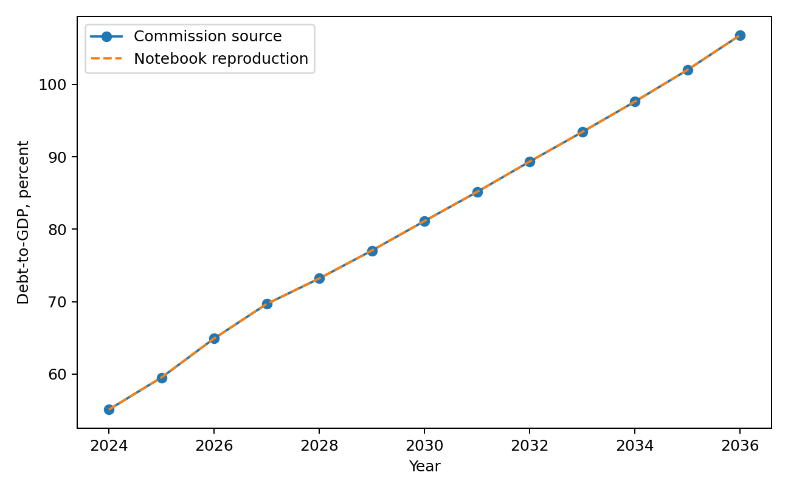
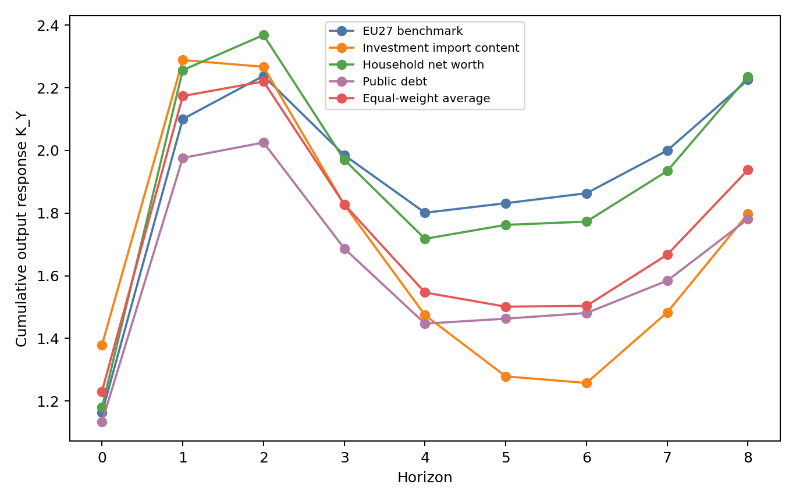
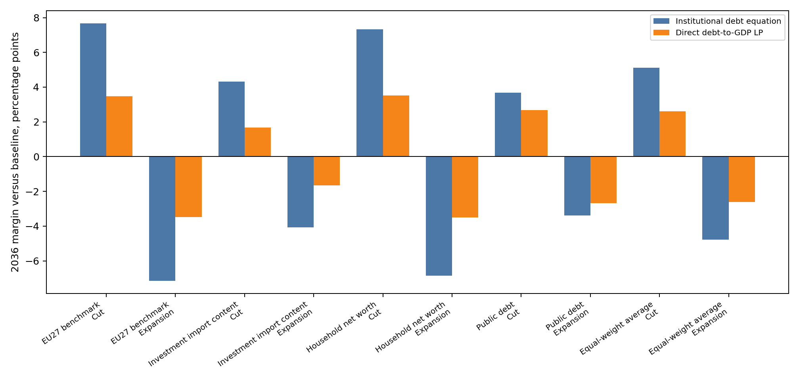

Self-Defeating Public Investment Cuts: Evidence from Poland under EU Fiscal Surveillance
Abstract
EU fiscal surveillance evaluates national budgets through debt projections and net expenditure ceilings, creating conditions in which public investment is particularly vulnerable to postponement when governments seek fiscal adjustments that avoid immediate cuts to transfers, wages, or entitlements. This paper examines how estimated public investment responses affect the debt implications of Polish investment policy when fiscal transmission is evaluated through real PPP income, investment import content, public debt, and household balance-sheet fragility. Annual local projections for public-investment shocks are estimated in an EU27 panel. The main scenario reports three one-state Polish evaluations: investment import content, household balance-sheet fragility, and public debt. Multi-state candidates are disclosed separately in Appendix A.
These estimated responses underpin a three year Polish scenario in which annual public investment is either increased or reduced by one percentage point of GDP from 2028 to 2030. By the eighth year, cumulative public-investment multipliers reach 2.87 in the EU27 benchmark and range from 2.37 to 2.91 across the one-state Polish evaluations, with an equal weight average of 2.59. By 2036, the central paradox emerges: public-investment expansion reduces the debt-to-GDP ratio relative to the Commission baseline, while an equivalent public-investment cut, although intended as consolidation, increases it. Across the one-state Polish evaluations, the cut scenario raises the 2036 debt-to-GDP ratio by 3.7 to 7.3 percentage points under the institutional debt equation and by 1.7 to 3.5 percentage points under the direct debt-to-GDP local projection path. The institutional debt equation projects debt by applying the debt recursion to the Commission baseline; the direct path evaluates the same signed investment action using the local projection estimate of the resulting debt-to-GDP response. Together, these two calculations identify a self defeating mechanism in which the discretionary primary-balance gain from cutting investment can be outweighed by persistent output losses, the associated cyclical primary-balance deterioration through automatic stabilisers, and the denominator effect on the debt ratio.
1 Introduction
1.1 EU fiscal surveillance and debt sustainability analysis
EU fiscal surveillance evaluates member states’ fiscal plans by applying legal rules, numerical indicators, medium-term adjustment trajectories, and model-based assessments within the Stability and Growth Pact and the European Semester. This framework establishes the institutional context through which the European Commission and the Council measure fiscal efforts and scrutinise national budgetary decisions (Schmidt, 2015; Van der Veer, 2021; European Commission, 2026). Recent reforms to the EU fiscal framework enhance the explicit role of debt sustainability analysis in providing prior guidance, assessing medium-term budgetary plans, facilitating bilateral discussions with member states, and defining corrective trajectories where fiscal risks are considered significant (European Commission, 2026; Heimberger et al., 2024).
The institutional significance of the Commission’s framework arises from its surveillance role. Structural balances, potential output, output gaps, projected debt paths, interest rate assumptions, growth forecasts, and fiscal multipliers are all model-dependent. When integrated into the surveillance model, adjustments to output gap estimates can alter the calculated structural balance and measured fiscal effort even without contemporaneous changes in taxes, expenditures, or headline budget balances. Heimberger, Huber and Kapeller (2020) illustrate this process within the Commission’s potential output model, highlighting how assumptions concerning production functions, labour input trends, and capacity utilisation affect output gap estimates, consequently influencing structural deficit calculations and available fiscal space. Methodological decisions thus substantially shape surveillance assessments by affecting the evaluation of national fiscal plans.
The Debt Sustainability Monitor 2025 outlines the Commission’s medium-term projection methodology, which integrates Commission forecasts with assumptions regarding potential growth, output gap convergence, structural primary balances, inflation, interest payments, ageing-related expenditures, stock-flow adjustments, deterministic stress scenarios, and stochastic risk analyses (European Commission, 2026). The empirical approach in this paper does not estimate an output gap equation directly but instead estimates real GDP responses explicitly, treating the Commission’s output gap convergence assumption solely as a component within the evaluated baseline projection environment. Macroeconomic feedback from fiscal interventions is captured via GDP, cyclical budget elements, subsequent primary balance trajectories, and the debt dynamics driven by the interest-growth differential. Within the reformed framework, these projections underpin prior fiscal guidance, assessments of medium-term structural fiscal plans, Council-approved net expenditure ceilings, annual progress evaluations, and corrective pathways associated with the excessive deficit procedure.
The excessive deficit procedure carries institutional authority because non-compliance can initiate Council recommendations, assessments of effective action, revised fiscal adjustment trajectories, intensified monitoring, and possible escalations under the corrective arm. Euro area member states face additional legal provisions for deposits or financial penalties; as Poland is outside the euro area, direct financial sanctions are not immediately applicable. For Poland, compliance pressures therefore centre on Council-approved adjustment requirements, annual surveillance, procedural determinations regarding effective action, and the conditional legal possibility that macroeconomic conditionality may influence access to cohesion policy funding if relevant economic governance criteria are fulfilled (Sacher, 2019; European Commission, 2026; Council of the European Union, 2024, 2025).
The baseline drawn from the Debt Sustainability Monitor is embedded within the Commission surveillance framework. Local projections treat this baseline as an externally determined reference path without re-estimating it. The path uses the Commission forecast round and assumptions on potential growth, output gap closure, inflation, interest expenditure, ageing-related costs, stock flow adjustments, structural balances, primary balances, and the debt dynamics equation. Under these assumptions, Poland’s general government gross debt ratio rises from 55.1 percent of GDP in 2024 to 106.8 percent in 2036, exceeding the 60 percent Treaty reference value. The same endpoint reflects a structural balance close to -10 percent of GDP and a primary balance near -3.9 percent of GDP. Such a structural deficit is not a plausible domestic policy equilibrium. The series is the Commission’s no-additional-measures surveillance path: in that accounting narrative, debt keeps rising and the fiscal balance remains deeply strained.
These endpoint assumptions warrant methodological caution. Debt sustainability analysis performs accounting work, deriving outcomes from assumptions on growth, interest, inflation, output gap closure, stock flow adjustments, and primary balances. Within EU surveillance, these assumptions can effectively function as policy constraints, influencing prior guidance, assessment of fiscal plans, net expenditure ceilings, annual monitoring, and corrective pathways. Such practices risk circular reasoning: a pessimistic baseline could reinforce arguments for fiscal consolidation, while evaluating that consolidation might suppress public investment, thereby restricting growth feedback on the debt denominator. The scenario results presented below measure margins relative to this Commission surveillance construction. They do not imply that baseline fiscal balances represent a plausible domestic equilibrium. Because the Commission baseline uses the Maastricht general government gross debt concept, later references to that baseline should not be read as applying Poland’s national public debt rule unless the text states otherwise (Constitution of the Republic of Poland, 1997; Public Finance Act, 2009; European Commission, 2026). Figure 1 illustrates the Commission baseline debt trajectory before the paper adds any scenario-specific percentage point deviations from that baseline.

1.2 Critical assumptions in debt projections and consolidation evidence
The institutional importance of these assumptions highlights the necessity of robust empirical support. Internal consistency in debt projections alone does not resolve associated policy concerns. The empirical relationships used to justify consolidation efforts, debt thresholds, and expenditure reductions must themselves be sufficiently reliable to underpin their policy applications.
Dependence on critical assumptions extends beyond the Commission framework. Reinhart and Rogoff (2010) provided influential empirical evidence associating elevated public debt with lower growth rates. Subsequent replication studies and threshold analyses, however, revealed substantial sensitivity of these findings to methodological decisions such as data treatment methods, weighting schemes, sample selection, functional forms, and assumptions about the causal direction between debt and growth. This methodological controversy underscores the necessity of caution when interpreting debt ratios as rigid constraints on economic growth (Herndon, Ash and Pollin, 2013; Pescatori, Sandri and Simon, 2014; Panizza and Presbitero, 2013; Egert, 2013; Heimberger, 2021).
This debate surrounding debt thresholds introduces an initial caveat: causal inferences drawn from observed correlations between debt and growth remain highly sensitive to choices concerning data handling, functional specification, sample composition, and reverse causality assumptions. When considered together with evidence on expenditure consolidations discussed below, this methodological constraint implies that empirical strategies aggregating diverse fiscal instruments, relying on crisis-induced policy choices, or attributing macroeconomic outcomes to broad fiscal balance indicators cannot reliably demonstrate that reductions in public investment protect economic growth or reduce debt levels. A rigorous methodological assessment requires identifying an instrument-specific shock, estimating the resulting dynamic output response, and explicitly integrating these dynamic effects into the debt denominator (Herndon, Ash and Pollin, 2013; Pescatori, Sandri and Simon, 2014; Panizza and Presbitero, 2013; Egert, 2013; Heimberger, 2021).
A similar evidentiary issue arises in literature addressing expenditure-based consolidations. Alesina, Favero and Giavazzi (2015) constructed multi-year fiscal adjustment plans, categorized each plan by its predominant tax or spending composition, and interpreted subsequent macroeconomic outcomes as indicative of the relative output costs associated with these classifications. For the current analysis, however, the principal limitation lies in the identification approach itself: classifying fiscal adjustments at the aggregate plan level obscures the causal impact of specific fiscal instruments, particularly public investment. Evidence from EU New Member States presented by Borys, Ciżkowicz and Rzońca (2013) provides relevant insights for the Polish context by illustrating how the composition of fiscal policy can influence distinct output components and indicating that expenditure-based consolidations may operate through non-Keynesian mechanisms. Nonetheless, their analysis addresses broader fiscal impulses across a panel of New Member States rather than an instrument-specific public-investment shock, a public-capital transmission channel, or a debt-to-GDP trajectory explicitly applicable to Poland. Consequently, it does not replace the instrument-specific debt analysis conducted here.
The first limitation concerns plan endogeneity. Consolidation plans do not represent genuine policy shocks; rather, they typically arise under conditions characterized by elevated debt stress, unfavorable market circumstances, sluggish economic growth, or external constraints. Consequently, treatment status correlates directly with the macroeconomic conditions in place at the plan’s implementation. As a result, plan-level coefficients confound the underlying motivations for fiscal adjustment with observed economic outcomes. Guajardo, Leigh and Pescatori (2014) explicitly illustrate this issue: replacing conventional cyclically adjusted primary balance measures with narratively identified consolidation episodes reverses the primary conclusions of the expansionary austerity literature, revealing that expenditure-based consolidations are contractionary. Jorda and Taylor (2016) reach a comparable conclusion through inverse propensity score weighting of consolidation episodes, demonstrating that the ostensibly neutral output responses associated with consolidations primarily reflect selection bias rather than causal impacts. Similarly, Breuer (2019) highlights a reverse-causality problem inherent in conventional cyclically adjusted approaches, showing that adjusting for this bias can remove or even reverse the perceived expansionary effects of fiscal adjustments.
The second limitation concerns aggregation. Alesina, Favero and Giavazzi’s plan-level treatment categorizes multi-year consolidation plans by their predominant tax or expenditure components. While this categorization is useful for broadly comparing adjustment styles, it is not designed to isolate the effects of specific expenditure instruments. This limitation is particularly relevant for the analysis of public investment: consolidation episodes frequently encompass simultaneous actions such as restricting current spending, adjusting transfers, delaying procurement, reducing infrastructure outlays, or revising implementation schedules. Each of these instruments has distinct characteristics regarding timing, persistence, import leakage, and the impact on public capital. Thus, evidence on the composition of consolidation separates public investment from public consumption when evaluating the macroeconomic consequences of fiscal adjustments. This separation underscores the necessity of directly measuring movements in public investment and their associated dynamic output responses (Alesina, Favero and Giavazzi, 2015; Breuer, 2019; Ardanaz, Cavallo, Izquierdo and Puig, 2021).
The third weakness concerns persistence in the output response and its feedback into debt dynamics. Blanchard and Leigh (2013) show that European consolidation episodes produced systematic growth forecast errors consistent with underestimated fiscal multipliers. DeLong and Summers (2012), Fatas and Summers (2018), and Gechert, Horn and Paetz (2019) explain why this matters for debt dynamics: if the output contraction persists, the weaker debt denominator and endogenous budgetary responses can offset any immediate improvement in the primary balance. Cugnasca and Rother (2015) reach a similar conclusion for the EU consolidation experience, finding that realised output responses exceeded those implied by the low multiplier assumptions used in surveillance frameworks. Carbonari, Farcomeni, Maurici and Trovato (2024) add a related causal reappraisal of consolidation announcements, showing that spending cut announcements can generate negative indirect output effects once mediation channels are accounted for. The point is therefore narrow but important: plan labels are not sufficient evidence that expenditure cuts, especially investment cuts, improve debt outcomes.
For Poland, these methodological implications enter a concrete surveillance setting through distinct EU fiscal surveillance mechanisms. The medium term fiscal structural plan establishes a net expenditure path, with implementation monitored through annual progress reports. Deficit correction also operates through an excessive deficit procedure embedded in a Council adjustment process. Fiscal surveillance therefore shapes both the pace and composition of Poland’s fiscal adjustments. Macroeconomic evaluations for Poland must look beyond aggregate fiscal indicators to inflation, external balance, balance of payments conditions, domestic fiscal rules, and the investment component of public expenditure. Grodzicki, Mozdzen and Zygmuntowski (2022) reinforce this broader perspective, arguing that numerical fiscal aggregates alone cannot serve as self sufficient policy criteria, and advocating assessments that integrate signals from inflation, the current account, and investment expenditure.
1.3 Fiscal multipliers and instrument composition
Public investment is the instrument specific focus of this paper. Higher public investment raises current demand, supports public capital formation, and expands future productive capacity. Consolidation through public investment cuts mechanically improves the primary balance, but it also lowers output and reduces the public capital stock. The literature on budget composition and fiscal rule design gives further reason to treat public investment separately. Investment projects are generally easier to delay than transfers, wages, or entitlement programmes, and their economic costs are often less visible at the moment of budgetary decision making (Breunig and Busemeyer, 2012; Borge and Hopland, 2015; Pereira and Pinho, 2006; OECD, 2011). In practice, this makes public investment a particularly exposed adjustment item: projects can be postponed, scaled back, or reduced through annual allocations. The design of fiscal rules also matters for whether investment spending is protected or curtailed during adjustment episodes (Ardanaz et al., 2020). The central analytical question is therefore how debt projections change when public investment expansion and public investment consolidation include estimated growth feedbacks, rather than relying only on a single short run multiplier applied directly to the structural primary balance.
The Commission’s Debt Sustainability Monitor 2025 uses a common fiscal multiplier of 0.6 in the relevant fiscal policy scenarios. A 1 percentage point improvement in the structural primary balance reduces actual GDP growth by 0.6 percentage points in the same year, while potential growth is assumed to remain unchanged (European Commission, 2026). The multiplier affects the debt ratio through two channels: lower GDP mechanically raises the debt-to-GDP ratio by reducing the denominator, and weaker activity changes the cyclical component of the budget balance, which then feeds into the primary balance path. The Debt Sustainability Monitor framework also uses a specified output gap closure rule. The Commission recognises that multipliers vary with structural characteristics, cyclical conditions, monetary policy settings, policy instruments, and the composition of adjustment, and allows member states to justify different values in their own plans. The operational simplification nevertheless remains a common value used for prior guidance across countries.
This instrument specific question requires more than a common multiplier. Public investment, public consumption, transfers, and taxes have different dynamic effects. Multipliers vary by openness, exchange rate regime, public capital stock, fiscal position, monetary accommodation, and horizon (Ilzetzki, Mendoza and Vegh, 2013; Ramey and Zubairy, 2018; Cloyne, Jorda and Taylor, 2023). Evidence for Poland and for cross country samples already documents this heterogeneity. Table 1. Polish multiplier evidence used to motivate instrument specific estimation.
| Source | Fiscal measure | Reported multiplier values |
|---|---|---|
| Ministry of Finance of Poland, Medium Term Fiscal Structural Plan 2025-2028 | NEMPF effective consolidation multiplier and one year category multipliers | Effective consolidation multiplier: 0.449 in 2026, 0.498 in 2027, 0.528 in 2028; one year category multipliers: total expenditure 0.788, public investment 1.493. |
| Haug, Jedrzejowicz and Sznajderska (2019) | Government spending in Poland | Impact 0.70; four quarters 1.13; eight quarters 1.46; peak 1.61 after fourteen quarters. |
| Sznajderska (2025) | Fiscal policy shocks in Poland | Impact spending multiplier 1.25; long run cumulative spending multiplier 1.04; impact tax multiplier -1.18. |
| Haug, Lyziak and Sznajderska (2025) | Local projection IV government spending in Poland | Peak cumulative linear multiplier 1.53 after six quarters; pre-Covid peak 1.38 after eight quarters. |
Note: The negative tax multiplier follows the standard sign convention for a positive tax shock: higher taxes reduce output.
Table 2. Cross country and European multiplier evidence used to motivate instrument specific estimation.
| Source | Fiscal measure or conditioning dimension | Reported multiplier values |
|---|---|---|
| Ilzetzki, Mendoza and Vegh (2013) | Government consumption, high income countries | Impact 0.39; long run 0.66. |
| Ilzetzki, Mendoza and Vegh (2013) | Openness and exchange rate regime | Closed economies: impact 0.61, long run 1.10; open economies: impact -0.077, long run -0.46; fixed exchange rates: long run about 1.4; flexible exchange rates: long run about -0.69. |
| Ilzetzki, Mendoza and Vegh (2013) | Pure government investment shocks | High income countries: impact 0.39, long run 1.5; developing countries: impact 0.57, long run 1.6. |
| IMF Working Paper 2019/289 | Public investment and initial public capital stock | Public investment: impact 0.15, two years 0.80; low initial public capital: two years 2.15; high initial public capital: two years 0.15. |
| Ciaffi, Deleidi and Capriati (2024) | Government spending in OECD countries; linear and high public debt states | Linear model: impact 0.72, five year 0.87; high debt cases: impact 0.64 to 0.80, five year 1.51 to 1.56. |
| Gechert and Will (2012) | Meta regression by fiscal instrument | Reported means: general public spending 1.0; public investment 1.2; transfers 0.4; taxes 0.6. |
| Saccone (2022) | Public investment in European countries | Total public investment: 0.979 on impact and 2.056 at horizon 6; economic affairs investment: 0.859 on impact and 2.336 at horizon 6. |
The tables show that Polish official planning and the wider multiplier literature already distinguish fiscal instruments and report values that vary by horizon, instrument, and conditioning environment. The reported public investment evidence motivates estimating that instrument separately and carrying its output path into the debt assessment.
The paper is organised as follows. Section 2 presents the data, fiscal shock construction, and local projection methodology. Section 3 reports the estimated response trajectories. Section 4 applies them to public investment expansion and consolidation scenarios for Poland. Section 5 concludes.
2 Data and empirical strategy
2.1 Local projection framework
Local projections estimate dynamic responses through a separate regression at each horizon after a policy intervention or shock. The outcome dated \(t+h\) is regressed on the shock dated \(t\), conditional on controls, and the resulting sequence of horizon-specific coefficients gives the impulse response. This approach follows Jorda (2005) and the later local projection literature, which estimates impulse responses directly without imposing the full dynamic restrictions of a vector autoregression (Jorda and Taylor, 2024). It is especially useful for fiscal multiplier analysis because the estimate depends on the shock definition, the fiscal instrument, the horizon, and the conditioning information set (Ramey and Zubairy, 2018; Ramey, 2019).
The public investment shock is identified before the local projection regressions are estimated, because a change in public investment is not automatically a policy shock. Public investment growth may reflect current activity, common funding cycles, interest rate conditions, project completion, or planned procurement rather than an exogenous fiscal impulse. The recursive system therefore isolates the unexplained movement in public investment under a timing restriction. The local projections then estimate how that identified innovation propagates across horizons. This separation between shock identification and response estimation follows the fiscal shock literature: Blanchard and Perotti (2002) identify fiscal shocks before tracing their macroeconomic effects; Jorda (2005) estimates horizon responses directly once the treatment variable is defined; Ramey (2019) and Ramey and Zubairy (2018) stress that multiplier estimates depend on the shock measure; and Ciaffi, Deleidi and Di Domenico (2024) first identify public investment shocks and then insert them into local projections. This paper uses the same separation for an annual EU27 panel and for Polish state evaluation.
The first step estimates a system containing public investment growth, public consumption growth, output growth, and the short term interest rate. Public investment is ordered first in the recursive timing structure, following the fiscal shock literature that treats public investment as relatively predetermined within the year, because large investment decisions are shaped by multiannual political, administrative, and procurement processes (Ciaffi, Deleidi and Di Domenico, 2024; Ciaffi, Deleidi and Mazzucato, 2024). Under this timing restriction, output, public consumption, and the interest rate may respond within the same year to the public investment movement, while public investment does not respond contemporaneously to those variables. The remaining unexplained movement in public investment growth is then used as the public investment shock in the local projections.
The source data are annual EU27 series beginning in 2004. Where a variable is available through 2025, the 2025 observation enters the source and state-profile work. The local projection estimation uses horizon-specific samples after constructing leads. The eighth-year diagnostic sample therefore uses 2004-2017 observations, while shorter horizons use later years. A Poland only annual regression would provide too few observations since 2004 to estimate controlled dynamic responses through the eighth year, and too little variation to assess how fiscal transmission changes with country characteristics. The EU27 panel supplies variation across countries and time while keeping the estimation inside the institutional setting relevant for Poland’s fiscal surveillance. Country fixed effects absorb persistent cross country differences, and year fixed effects absorb common yearly disturbances. The linear EU27 specification estimates a common public investment response conditional on fixed effects and lagged controls. Poland is evaluated later through interactions between the public investment shock and Poland’s observed state values. For each horizon \(h\in\{0,\ldots,8\}\), the baseline linear local projection is
\[ y_{i,t+h}=\alpha_i^h+\tau_t^h+\beta_h s^{GI}_{i,t} +\gamma_h s^{GC}_{i,t}+\Gamma_h' W_{i,t-1}+u^h_{i,t+h}. \]
Here \(i\) indexes EU27 member states and \(t\) indexes years. The dependent variable \(y_{i,t+h}\) is the scaled outcome at horizon \(h\): real GDP in output regressions and public investment spending in spending regressions. The term \(s^{GI}_{i,t}\) is the identified public investment shock, while \(s^{GC}_{i,t}\) is the identified public consumption shock included as a fiscal control. The lagged controls match the fiscal, output, and monetary variables used in the recursive shock-identification system, following the practice of conditioning local projections on pre shock dynamics in the relevant information set (Jorda, 2005; Ciaffi, Deleidi and Di Domenico, 2024). The vector \(W_{i,t-1}\) contains lagged public investment growth, lagged public consumption growth, lagged output growth, and the lagged short term interest rate. The terms \(\alpha_i^h\) and \(\tau_t^h\) denote country and year fixed effects. The coefficient \(\beta_h\) is therefore the common linear EU27 response to the public investment shock at horizon \(h\), conditional on fixed effects, the public consumption shock, and lagged controls. The linear specification imposes the same marginal response across the panel after these controls. To evaluate how this response changes with country characteristics, the paper also estimates state dependent local projections. The approach follows the interaction logic in Cloyne, Jorda and Taylor (2023), where the effect of a policy intervention can vary with observed information from before the shock year. It is also consistent with the fiscal multiplier literature, where responses vary with macroeconomic conditions and policy settings (Ramey and Zubairy, 2018). In this paper, the state variables are continuous predetermined characteristics rather than binary recession expansion indicators.
The state dependent specification is
\[ y_{i,t+h}=\alpha_i^h+\tau_t^h+\beta_h s^{GI}_{i,t} +\theta_h'(s^{GI}_{i,t}\otimes z_{i,t-1})+\delta_h' z_{i,t-1} +\gamma_h s^{GC}_{i,t}+\Gamma_h' W_{i,t-1}+u^h_{i,t+h}. \]
The vector \(z_{i,t-1}\) contains lagged state variables. Because these variables are standardised, the coefficient \(\beta_h\) gives the public investment response for a country at the sample mean of the state variables. The vector \(\theta_h\) shows how the response changes when a country’s state values differ from that mean. The vector \(\delta_h\) allows the same variables to enter the outcome equation directly, separately from their interaction with the public investment shock. The public consumption shock, lagged controls, and fixed effects are the same as in the linear specification. The evaluation for Poland is obtained by applying Poland’s observed standardised state values to the estimated interaction structure. Poland’s evaluated response is therefore generated within the state dependent fixed effects local projection by the mean state coefficient \(\beta_h\) together with the interaction term \(\theta_h' z_{PL,t-1}\).
In short, the identified shocks enter horizon-specific local projections as regressors. This shock-identification-plus-local projection structure follows Ciaffi, Deleidi and Di Domenico (2024), and the present paper adapts it to an EU27 annual panel and to Polish state variable evaluation.
The state variables used in the interaction terms are lagged and standardised on the EU27 panel, as defined in Section 2.2. Appendix A reports the state variable definitions and the eighth year output interaction selection rule used for the Polish evaluations.
Several limitations follow from this design. Local projections are flexible and transparent, but the exogenous variation comes from the recursively identified fiscal shocks and therefore depends on the maintained timing restriction. Local projections may also deliver less smooth or less efficient response estimates than a correctly specified dynamic system (Jorda, 2005; Jorda and Taylor, 2024). State dependent local projections require caution when conditioning variables evolve endogenously, when relevant interactions are omitted, or when the evaluated shock lies outside the support of historical experience (Cloyne, Jorda and Taylor, 2023; Goncalves, Herrera, Kilian and Pesavento, 2023). The estimates should therefore be read as conditional dynamic responses to identified fiscal shocks within the observed EU27 panel.
2.2 State variables
This section defines the country characteristics that condition the propagation of fiscal shocks within the EU27 panel. The four structural state variables are investment import content, public debt, household balance-sheet fragility, and real PPP income level. Each variable is defined before estimation, linked to a specific economic mechanism, and measured consistently with harmonised cross country data (Ilzetzki, Mendoza and Vegh, 2013; Huidrom, Kose, Lim and Ohnsorge, 2019; Kaplan, Violante and Weidner, 2014; Cloyne, Jorda and Taylor, 2023).
In the regression framework, a state variable is a predetermined country characteristic that interacts with fiscal shocks and summarises the setting in which fiscal transmission occurs. It is recorded before the shock year and is not part of the response trajectory after the shock. This distinction follows Cloyne, Jorda and Taylor’s (2023) separation between treatment, conditioning state, and dynamic propagation. It also aligns with fiscal position research that treats initial fiscal conditions as possible determinants of multiplier strength rather than as outcomes of fiscal policy (Huidrom, Kose, Lim and Ohnsorge, 2019). Investment import content data are sourced from the OECD TiVA database released in 2025. Official measurements of domestic value added shares in gross fixed capital formation extend through 2022 in the source used here, so the common TiVA state window is 2004 to 2022.
The operational definitions are standardised before Section 2.3 evaluates subsets of the candidate universe. Table 2a reports each variable’s measurement, observation count, standardisation moments, and Poland’s value before and after standardisation. The TiVA input uses official OECD data through 2022 and does not fabricate a post-2022 TiVA row. Public debt and real PPP income use Eurostat observations through 2025. Household balance-sheet fragility uses Eurostat through 2025 where available; Ireland’s missing 2025 financial-account row affects only calculations that require that household balance-sheet input.
Table 2a. State-variable measurement and Polish profile, Panel A: definitions.
| State variable | Measurement | Non-missing observations | Source window used |
|---|---|---|---|
| Investment import content | One minus OECD TiVA domestic value added share of gross fixed capital formation | 513 | Official TiVA through 2022; Poland profile uses the latest official TiVA value |
| Public debt | Maastricht gross debt, percent of GDP | 594 | Eurostat through 2025 |
| Household balance-sheet fragility | Negative household net financial worth divided by GDP | 593 | Eurostat through 2025 where available; Ireland lacks the 2025 financial-account input |
| Real PPP income level | Log real GDP per capita in 2020 PPS terms | 594 | Eurostat through 2025 |
Table 2a continued. State-variable measurement and Polish profile, Panel B: standardisation and Poland values.
| State variable | EU27 mean | EU27 standard deviation | Poland value | Poland standardised value |
|---|---|---|---|---|
| Investment import content | 0.429 | 0.101 | 0.413 | -0.161 |
| Public debt | 62.658 | 36.311 | 59.700 | -0.081 |
| Household balance-sheet fragility | -1.138 | 0.598 | -0.793 | 0.576 |
| Real PPP income level | 10.237 | 0.380 | 10.265 | 0.074 |
Investment import content enters because an investment shock raises domestic output only to the extent that expenditure is met by domestic value added rather than imports. The measure uses the OECD TiVA domestic value added share of gross fixed capital formation; import content is one minus that share. A higher value therefore means that a larger share of investment demand leaks into imports instead of domestic value added. This state links the paper’s investment channel to the openness mechanism in the fiscal multiplier literature (Ilzetzki, Mendoza and Vegh, 2013; Cacciatore and Traum, 2020).
Public debt enters as a fiscal-position state. The multiplier literature treats initial fiscal positions as relevant for transmission because they affect sovereign risk premia, borrowing costs across the economy, exchange-rate dynamics, and constraints from fiscal rules. Ilzetzki, Mendoza and Vegh (2013) identify public indebtedness as a country characteristic relevant for fiscal multiplier heterogeneity, while Huidrom, Kose, Lim and Ohnsorge (2019) link fiscal positions to interest rate and risk premium channels. Debt therefore has two roles. In Section 2, the public debt ratio is a pre-shock fiscal-position characteristic conditioning the estimated output response. In Section 4, the future debt-to-GDP path is the outcome generated by the scenario analysis.
Public debt is measured as Maastricht general government gross debt relative to GDP. The Maastricht debt ratio is used here only as a pre-shock fiscal-position state. This conditioning state can shape fiscal transmission through risk premia, interest rate and growth dynamics, exchange-rate conditions, domestic and EU fiscal-rule assessments, and the composition of fiscal adjustment (Blanchard, 2019; Grodzicki, Mozdzen and Zygmuntowski, 2022; Ministry of Finance of Poland, 2024; European Commission, 2026; Huidrom, Kose, Lim and Ohnsorge, 2019). Section 1.1 distinguishes the EU Maastricht measure from Polish national public debt rules. Within this section, public debt enters only as a pre-shock conditioning variable.
Household balance-sheet fragility is measured from financial accounts as the negative of household financial assets net of liabilities, divided by GDP. Non-financial assets, including housing, are excluded from the numerator, and the measure is transformed so that higher values mean weaker household net financial worth relative to GDP. The variable captures household financial resilience, since fiscal shocks may propagate differently when households have limited net financial capacity to smooth consumption after income fluctuations. Kaplan, Violante and Weidner (2014) provide the microeconomic distinction between liquid resources and illiquid wealth that motivates treating household balance sheets as relevant for consumption smoothing. Bernardini, De Schryder and Peersman (2017) show that household leverage conditions the transmission of fiscal shocks through balance sheet positions. Krajewski and Pilat (2025) provide the Polish household finance context in which liquidity constraints and financial buffers are empirically relevant. The paper’s EU27 measure is therefore a comparable macro financial-accounts state, not a direct household survey measure of liquid deposits.
Real PPP income level is defined as the logarithm of real GDP per capita, expressed in 2020 purchasing power standard terms. Its role is to capture heterogeneity in development levels, including differences in income levels, market structures, relative-price environments, and broader macroeconomic conditions. Ilzetzki, Mendoza and Vegh (2013) explicitly examine multiplier differences between high income and developing economies, while Huidrom, Kose, Lim and Ohnsorge (2019) similarly link multiplier variation to structural factors and macro financial conditions.
The analysis is confined to these four variables because multidimensional state dependence raises problems of conceptual clarity and empirical discipline. Cloyne, Jorda and Taylor (2023) show that reliance on a single state-dependence dimension may obscure complexity arising from interactions among multiple state variables, but their framework also underlines the need to keep the state space interpretable and separate from results based model selection. Similarly, Ilzetzki, Mendoza and Vegh (2013) emphasize heterogeneity through clearly defined country characteristics rather than unrestricted exploration across all possible conditioning variables. The selected candidate universe therefore gives priority to variables with explicit economic interpretations, investment import content, public debt, household balance-sheet fragility, and real PPP income level, before applying the candidate selection rule.
Unemployment and the output gap belong to the cyclical state-dependence literature rather than to the slower moving structural conditioning variables used here. Auerbach and Gorodnichenko (2012, 2013) and Ramey and Zubairy (2018) study fiscal multiplier differences between slack and expansion states, which informs a distinct cyclical approach to state dependent fiscal transmission. This study instead emphasizes slower moving structural heterogeneity across EU27 economies. That narrower scope also mitigates an endogeneity concern highlighted in the state dependent local projection literature: unemployment and the output gap are contemporaneous measures of cyclical conditions and can move at the same time as fiscal shocks and output responses (Cloyne, Jorda and Taylor, 2023). The empirical analysis here therefore focuses exclusively on structural conditioning variables, while recession expansion asymmetries remain a separate analytical design.
Section 2.2 therefore establishes the candidate universe of state variables. The analysis then evaluates non-empty combinations of the four variables under criteria fixed before the response analysis. The four variable set remains fixed, preserving the distinction between structural state definition, subset selection, and multiplier interpretation emphasized by Cloyne, Jorda and Taylor (2023).
2.3 Candidate specification selection and diagnostics
Section 2.2 limited the conditioning universe to four state variables: investment import content, public debt, household balance-sheet fragility, and real PPP income level. These four variables imply fifteen non-empty candidate subsets. The subsets are evaluated before the response analysis reported in Section 3. The diagnostic table records whether the design matrix is full rank, whether the condition number and state-variable correlation remain within the stated limits, whether Poland’s state profile lies inside the observed support, whether the output and spending denominators are usable, and whether the eighth year output interaction passes the stated interaction criterion. The interaction criterion is evaluated at horizon \(h=8\) and uses \(p \leq 0.10\). The screen is a diagnostic disclosure rule, not an automatic rule that forces every passing subset into the main scenario. Appendix A reports each pass/fail component for all fifteen candidate subsets.
The design reflects a tension in state dependent local projections. Omitting relevant state dimensions can confound the interpretation of interaction terms, while adding interactions can weaken support, produce unstable estimates, or place excessive weight on a small number of country observations (Cloyne, Jorda and Taylor, 2023). The pre-response documentation therefore separates the state-variable universe from the diagnostic criterion. The largest candidate receives no preference by construction, and Appendix A keeps every candidate visible.
The numerical diagnostics document the realised rank of the local projection regressor matrix at the diagnostic horizon, the condition number, and the maximum absolute correlation among included state variables. Rank deficiency would remove unique identification for the regression coefficients of interest at the diagnostic horizon. Elevated condition numbers or substantial collinearity among state variables indicate that minor perturbations in the data could substantially alter interaction estimates. These diagnostics follow established regression-diagnostic principles that emphasise sensitivity to leverage, ill conditioning, and influential data subsets (Welsch and Kuh, 1977).
Support diagnostics describe where Poland’s evaluated state values sit within the EU27 panel. The reported values are Poland’s maximum absolute standardised state value and the support p value for the candidate subset. The guiding principle is that conditional inference becomes fragile when the target lies in a weakly represented part of the covariate distribution (Crump, Hotz, Imbens and Mitnik, 2009; Li, Morgan and Zaslavsky, 2018). The support diagnostics therefore describe the distance between Poland’s evaluated state profile and the observed country distribution. A high support p value is not a failure; it means that Poland’s state profile is not far from the observed EU27 support.
Eight candidate subsets meet all reported diagnostic criteria. The main scenario carries the 3 one-state Polish evaluations because each maps to a single economic channel. The multi-state diagnostic passes (Import content + balance-sheet fragility; Import content + public debt + balance-sheet fragility; Import content + public debt; Import content + balance-sheet fragility + real PPP income; Import content + real PPP income) remain visible in Appendix A as sensitivity candidates and are not carried into the main response and debt application. Table 2b reports the three one-state paths carried into the main scenario. Appendix A reports the full numerical diagnostics, empirical support values, output interaction tests, and criterion values for all fifteen candidate subsets.
Table 2b. One-state Polish evaluations carried into the main scenario.
| One-state Polish evaluation carried into the main scenario | State variable | Eighth year output interaction p value | Polish standardised state value |
|---|---|---|---|
| Investment import content | Investment import content | 0.002 | -0.161 |
| Household balance-sheet fragility | Household balance-sheet fragility | 0.003 | 0.576 |
| Public debt | Public debt | 0.080 | -0.081 |
Notes: In the investment import content evaluation, Poland is slightly below the EU27 mean import content value for gross fixed capital formation. In the household balance-sheet-fragility evaluation, Poland is above the EU27 mean of the transformed household balance sheet state, indicating weaker net financial worth relative to GDP under the paper’s sign convention. In the public debt evaluation, Poland is slightly below the EU27 mean Maastricht public debt ratio in the mixed-window state profile.
Appendix A reports the state variable definitions and the full fifteen subset disclosure. Real PPP income level belongs to the conditioning universe, but the single-variable real PPP income candidate does not pass the output-interaction criterion. Multi-state combinations that pass the diagnostic screen remain disclosed as sensitivity candidates, but the main response-path and debt applications use only the one-state paths shown above. Section 3 therefore reports empirical response paths for the linear EU27 benchmark and for the three one-state Polish evaluations. Appendix D reports the coefficient-level estimation output behind these paths, including horizon-specific shock coefficients, interaction coefficients, standard errors, p values, observation counts, country counts, year ranges, fixed effects, covariance estimator, and design matrix rank. These diagnostics characterize coefficient-level precision and are distinct from any full-path confidence interval for the debt translation.
3 Results
3.1 EU27 panel benchmark and Polish evaluations within the EU27 panel
The results section first reports cumulative output responses to public investment, because the debt exercise in Section 4 uses the estimated output paths as inputs.
For each horizon \(h\), \(K_Y(h)\) denotes the cumulative real GDP response through horizon \(h\) to the identified public investment shock. The corresponding \(K_G(h)\) denotes the cumulative movement in public investment spending generated by the same shock. This distinction matters because Section 4 states the scenario as a policy action equal to one percentage point of GDP in each of three years, whereas the empirical model estimates the output and spending paths following the identified public investment innovation. \(K_G(h)\) translates the estimated shock into the scale of the stated fiscal action; \(K_Y(h)\) carries the resulting output feedback into the debt calculation. The two series need not move in the same way. Public investment spending can rise on impact and then partly unwind, while output can persist through demand, capacity and balance sheet channels. The ratio \(K_Y(h)/K_G(h)\) is therefore the cumulative output response per cumulative unit of public investment spending, which is the multiplier concept closest to the fiscal multiplier literature (Ilzetzki, Mendoza and Vegh, 2013; Ramey and Zubairy, 2018; Ciaffi, Deleidi and Di Domenico, 2024). This ratio is the relevant comparison object for a multiplier such as the Commission’s 0.6, but the comparison is only orienting: the Commission value is a one year GDP growth response to a structural primary balance change, whereas \(K_Y(h)/K_G(h)\) is an eighth year cumulative investment spending ratio. Table 3 reports \(K_Y(h)\), \(K_G(h)\), and \(K_Y(h)/K_G(h)\) through the eighth annual horizon for the EU27 panel benchmark, the three one-state Polish evaluations carried into the main scenario, and their equal weight arithmetic average.
Table 3. Eighth year cumulative output and spending responses for public investment.
| Path | Evaluation basis | \(K_Y(8)\) | \(K_G(8)\) | \(K_Y(8)/K_G(8)\) | Role |
|---|---|---|---|---|---|
| EU27 benchmark | Fixed effects panel, no state interactions | 2.23 | 0.78 | 2.87 | EU27 reference |
| Investment import content | Poland’s TiVA investment import content profile | 1.80 | 0.73 | 2.47 | Import leakage evaluation |
| Household balance-sheet fragility | Poland’s financial accounts balance sheet profile | 2.24 | 0.77 | 2.91 | Household balance sheet evaluation |
| Public debt | Poland’s Maastricht public debt profile | 1.78 | 0.75 | 2.37 | Fiscal position evaluation |
| Equal weight average | Arithmetic average of the three one-state Polish paths | 1.94 | 0.75 | 2.59 | Section 4 summary path |
Notes: The output and spending responses are cumulative response units under the public investment shock normalization. Positive output values mean output above the no shock path. The ratio divides the eighth year cumulative output response by the eighth year cumulative spending response. Rounded ratios correspond to Appendix B, Table B.3.
The EU27 panel benchmark gives an eighth year cumulative output response of 2.23. This is the panel average response after conditioning on country and year fixed effects and the lagged controls in the linear specification. Because the linear specification imposes a common slope on the public investment shock, the estimate serves as an EU27 benchmark, not as a Poland specific response.
The investment import content Polish evaluation gives an eighth year cumulative output response of 1.80. Poland’s evaluated import content value is close to, and slightly below, the EU27 panel mean: the raw Polish value is 0.413, compared with an EU27 mean of 0.429, giving a standardised value of -0.161. There is no sign reversal in the data construction. The source variable is the OECD TiVA domestic value added share of gross fixed capital formation, and the paper’s import content state is one minus that share. The comparison with the EU27 benchmark is not a mechanical one variable comparison either. Within the investment import content specification itself, Poland’s below mean state value raises the eighth year output response relative to the same state dependent specification evaluated at the EU27 mean. The EU27 benchmark, by contrast, is a different linear panel response without state interactions. The Polish investment import content path is above the EU27 benchmark in the first horizons but below it from the third horizon onward, so the 2036 debt endpoint remains less self defeating than the EU27 benchmark while still self defeating under a cut. This pattern is consistent with the trade multiplier literature, which treats import leakage as composition dependent rather than as a simple openness rule: fiscal transmission depends on the domestic value added content of demand, the relative import content of public and private expenditure, production structure, financing, and invoicing conditions (Ilzetzki, Mendoza and Vegh, 2013; Cacciatore and Traum, 2020; Crespo Cuaresma and Glocker, 2023).
The household balance-sheet-fragility Polish evaluation gives an eighth year cumulative output response of 2.24. In this specification, Poland is evaluated through the household sector’s net financial balance sheet position rather than through a direct credit flow measure. The state captures a financial accounts balance sheet channel: the transmission of fiscal shocks can differ when household financial assets net of liabilities are weaker relative to GDP (Kaplan, Violante and Weidner, 2014; Bernardini, De Schryder and Peersman, 2017).
The public debt Polish evaluation gives an eighth year cumulative output response of 1.78. Here the conditioning state is the pre-shock Maastricht public debt ratio. Poland’s evaluated public debt state is slightly below the EU27 mean, with a standardised value of -0.081. This path captures heterogeneity by fiscal position in the estimated transmission of public investment shocks, and it is distinct from the later debt-to-GDP outcome in Section 4.
The equal weight average across the three one-state Polish evaluations is 1.94 in the eighth year. It reports the midpoint across the investment import content, household balance-sheet, and public-debt paths used in the debt application.
3.2 Persistence and shape of the output responses across horizons
Section 3.1 reported eighth year cumulative output responses for the EU27 panel benchmark, the three one-state Polish evaluations, and their equal weight average. Those values are endpoints of full cumulative response paths. This subsection follows \(K_Y(h)\), the cumulative output response at horizon \(h\), from impact through the eighth year.
Figure 2 plots the full sequence. At each horizon, \(K_Y(h)\) is the cumulative real GDP response under the paper’s public investment shock normalization. The figure includes the EU27 benchmark, the three one-state Polish evaluations, and the equal weight Polish average.

The estimated paths remain positive throughout the reported horizon. They rise strongly in the first two years, moderate in the middle horizons, and rise again by the eighth year. The sign matters for the scenario application: for an equal public investment cut, the same response paths imply a persistent output loss rather than a transitory impact effect. The investment import content Polish evaluation reaches 1.80 in the eighth year. The household balance-sheet-fragility evaluation reaches 2.24, and the public debt evaluation reaches 1.78. Their equal weight average is 1.94.
Table 4 reports selected horizons from the same paths, and Appendix B reports the full values at each horizon.
Table 4. Selected values of \(K_Y(h)\).
| Empirical path | \(h=0\) | \(h=2\) | \(h=5\) | \(h=8\) |
|---|---|---|---|---|
| EU27 panel benchmark | 1.16 | 2.24 | 1.83 | 2.23 |
| Polish evaluation based on investment import content | 1.38 | 2.27 | 1.28 | 1.80 |
| Polish evaluation based on household balance-sheet fragility | 1.18 | 2.37 | 1.76 | 2.24 |
| Polish evaluation based on public debt | 1.13 | 2.03 | 1.46 | 1.78 |
| Equal weight average across the three one-state Polish paths | 1.23 | 2.22 | 1.50 | 1.94 |
The selected horizons show that the EU27 benchmark and the equal weight Polish average remain close in the eighth year, while the three one-state Polish evaluations differ in magnitude. In the eighth year, the investment import content response is 1.80, the household balance-sheet-fragility response is 2.24, and the public debt response is 1.78. The average summarizes the one-state Polish evaluations, but it does not remove the difference among the import leakage, household balance sheet, and fiscal-position channels.
The main implication is persistence over the observed local projection horizon. The estimated response extends beyond the impact year: cumulative output responses remain positive through the eighth year, and the later values are still economically material. For an expansion, persistence raises output during the years in which the debt ratio is assessed. For an equal cut, reversing the sign of the public investment action turns the same response path into a sustained output shortfall. The hysteresis literature gives the economic reason this persistence cannot be treated as cosmetic: demand shortfalls can reduce investment, weaken labour market attachment, and lower future productive capacity (DeLong and Summers, 2012; Fatas and Summers, 2018; Engler and Tervala, 2016; Gechert, Horn and Paetz, 2019).
4 Application to Polish public investment scenarios
4.1 Scenario design
Polish public investment sits at the intersection of national development planning, EU fiscal surveillance, and discretionary political decisions about project implementation. Poland’s medium term fiscal structural plan is organised around a defined net expenditure path extending to 2028. Official Polish documents indicate that Poland has been under the excessive deficit procedure since July 2024. The evaluation process under this procedure focuses on adherence to the recommended expenditure path and tracks the progress of reforms and investments explicitly tied to EU priorities (Ministry of Finance of Poland, 2024, 2025; European Commission, 2026). The institutional challenge arises from both the overall size of the fiscal balance and the composition of budgetary adjustments, especially when multiannual investment commitments extend across several budget cycles under a surveillance framework that closely examines expenditure growth and debt trajectory forecasts.
Centralny Port Komunikacyjny illustrates how an investment programme that remains active in official planning can undergo substantive revisions to its timeline, total funding envelope, and annual State Treasury engagement. The active programme covering 2024-2032 sets commitments for airport development, high speed rail, and road infrastructure, with an official envelope of PLN 131.7 billion, and schedules the first stage of the airport and the Warsaw-CPK-Lodz high speed connection for completion by the end of 2032. Compared with the previous programme for 2024-2030, adopted in 2023, the revised plan reduces the headline envelope from PLN 155.1 billion, decreases the State Treasury engagement limit from PLN 66.2 billion to PLN 62.9 billion, extends the timeline by two years, and lowers the maximum annual State Treasury bond engagement from over PLN 13 billion to approximately PLN 11.5 billion. Official programme materials therefore show a continuing programme with documented changes in schedule, total envelope, and annual Treasury bond engagement (Council of Ministers of Poland, 2023, 2024b; Centralny Port Komunikacyjny, 2025).
The Polish Nuclear Power Programme provides a similar example: continuity in the stated objective, alongside delay and phased preparatory work. The 2025 programme update maintains the original objective of constructing two nuclear power plants with an aggregate capacity of approximately 6 to 9 GWe, but shifts the timetable for the first plant. The 2020 programme had scheduled the first unit to begin operation in 2033, while the updated 2025 version targets commercial operation of the first reactor for 2036, with subsequent units planned for 2037 and 2038. Resolution No. 66 of 24 June 2024 also modified Appendix 3 of the programme, which concerns implementation expenditure. The 2025 update designates the second plant for a staged preparatory phase covering location assessment, technology and contractor selection, business model design, financing arrangements, and ownership structure. Site assessments concentrate on coal-region candidates, specifically identifying Bełchatów, Konin, Kozienice, and Połaniec for detailed examination, with a preference indicated for Bełchatów and Konin. At the same time, the earlier PGE-ZE PAK-KHNP Pątnów route has changed. The 2022 official materials described cooperation among PGE, ZE PAK and KHNP for Pątnów; later reports indicated KHNP’s withdrawal from, or closure of, its Polish nuclear route, while 2025 official material presents the second-plant process as a PGE-led preparatory phase in which Konin remains among the preferred or analysed locations (Ministry of State Assets of Poland, 2022; Yonhap News Agency, 2025; Pulse, 2025; Ministry of Energy of Poland, 2025). This evolution does not show that Konin was abandoned as a candidate location. It shows, at minimum, delay in the investment decision and a movement from a named implementation route back to renewed preparation: location assessment, technology and contractor selection, ownership and financing design, and preparatory work. More generally, renewed preparatory analysis can slow the real investment path even when the stated programme objective remains in force. The programme therefore provides a second example of a continuing investment commitment whose real annual expenditure profile can shift through delays, staging, and preparatory work (Polish Nuclear Power Programme, 2020; Council of Ministers of Poland, 2024a; Ministry of Industry of Poland, 2025; Ministry of State Assets of Poland, 2022; Ministry of Energy of Poland, 2025).
Fiscal policy is evaluated here as a path rather than as a sequence of independent annual shocks. Three aspects of the literature support this perspective. First, cumulative and present value multipliers compare output responses with spending responses over a horizon, rather than only an impact coefficient (Ilzetzki, Mendoza and Vegh, 2013; Ramey and Zubairy, 2018; Ramey, 2019; Huidrom, Kose, Lim and Ohnsorge, 2019; Saccone, 2022). Second, fiscal plans are normally implemented over time, so their effects on budgets and GDP should be evaluated as paths rather than as isolated one year events (Alesina, Favero and Giavazzi, 2015; Ramey, 2019). Third, debt outcomes depend on the interaction between spending, output, the primary balance, and the debt-to-GDP denominator (Fatas and Summers, 2018; Ciaffi, Deleidi and Di Domenico, 2024). The specific policy translation used below is this paper’s scenario implementation: three annual public investment actions of one percentage point of GDP in 2028, 2029, and 2030, combined with the estimated spending and output response paths.
Let \(\sigma=1\) denote the expansion case, and let \(\sigma=-1\) denote the cut case. The programmed annual action vector is
\[ a_s = \begin{cases} \sigma, & s=0,1,2,\\ 0, & s \geq 3, \end{cases} \]
where \(s=0,1,2\) correspond to 2028, 2029, and 2030. A single 2028 action generates the spending path \(P_G^{(1)}(h)=\sigma K_G(h)\) and the output path \(P_Y^{(1)}(h)=\sigma K_Y(h)\). The three year programme then adds the delayed responses from the three programmed actions:
\[ P_G^{(3)}(h)=\sum_{s=0}^{\min(h,2)} a_s K_G(h-s), \qquad P_Y^{(3)}(h)=\sum_{s=0}^{\min(h,2)} a_s K_Y(h-s). \]
The 2031 spending effect is therefore \(a_0K_G(3)+a_1K_G(2)+a_2K_G(1)\), with \(a_3=0\). The nonzero value after 2030 is not a fourth annual fiscal action. It is the continuing dynamic response to the three actions already introduced. The one percentage point figure is the annual policy scale inside a multiannual investment framework, not the complete dynamic spending trajectory.
Both cases use the same years, scale, and debt accounting horizon. The cut case reverses the sign of the annual investment action. It changes the discretionary primary balance impulse and the estimated output response, while keeping the accounting environment constant.
The first debt calculation applies the medium term debt equation from the Debt Sustainability Monitor framework. In this method, the debt-to-GDP ratio is carried forward by the interest and growth term, the primary balance, and stock flow adjustments (European Commission, 2026). In practice, the public investment action changes the discretionary primary balance path, while the estimated output response changes the GDP feedback entering the debt ratio. The calculation keeps the baseline projection path as the accounting environment, but replaces the relevant growth feedback with the estimated public investment response.
The second debt calculation is the direct debt-to-GDP local projection path. This approach estimates the debt-to-GDP response to the same public investment shock and applies that estimated debt ratio response to the same three annual actions. Although a cut initially increases the primary balance, the associated output loss and subsequent debt ratio response may still raise the debt ratio at the endpoint. Conversely, an expansion initially lowers the primary balance, but the associated output gain and resulting debt ratio response may lower the debt ratio at the endpoint. This calculation is consistent with debt and multiplier studies that evaluate fiscal policy through its effects on the debt-to-GDP ratio. It also parallels research explicitly linking government investment shocks to debt outcomes (DeLong and Summers, 2012; Fatas and Summers, 2018; Ciaffi, Deleidi and Di Domenico, 2024).
4.2 2036 debt-to-GDP impact across specifications
This subsection reports the 2036 debt-to-GDP margins for the public investment scenario defined in Section 4.1. Each table entry is a percentage point difference from the baseline debt-to-GDP ratio in 2036. Positive values mean that the debt-to-GDP ratio is higher than baseline; negative values mean that it is lower than baseline.
The table reports point scenario translations rather than joint confidence intervals. A joint confidence interval would have to combine uncertainty from the local projection response paths, the \(K_G\) scaling from shock units to fiscal actions, the direct debt response, and the Commission baseline accounting inputs. The present application keeps these components visible separately. The absence of a joint confidence interval is therefore a limitation of the debt translation, not a claim of statistical precision for the final debt margins.
Table 5 reports the endpoint margins.
Table 5. 2036 debt-to-GDP margins relative to baseline.
| Empirical path | Expansion, institutional debt equation | Expansion, direct debt-to-GDP local projection path | Cut, institutional debt equation | Cut, direct debt-to-GDP local projection path |
|---|---|---|---|---|
| EU27 panel benchmark | -7.1 | -3.5 | 7.7 | 3.5 |
| Polish evaluation based on investment import content | -4.1 | -1.7 | 4.3 | 1.7 |
| Polish evaluation based on household balance-sheet fragility | -6.8 | -3.5 | 7.3 | 3.5 |
| Polish evaluation based on public debt | -3.4 | -2.7 | 3.7 | 2.7 |
| Equal weight average across the three one-state Polish paths | -4.8 | -2.6 | 5.1 | 2.6 |

Figure 3 places the two scenario directions and the two debt calculations on the same footing. Because the baseline debt-to-GDP ratio rises over 2028-2036, the critical question is whether each public investment scenario leaves the debt ratio above or below this baseline by 2036. Public investment expansions end below the baseline in 2036, while symmetric public investment cuts end above it. This common endpoint pattern arises because output persistence directly affects the debt calculation. Persistent output gains following investment expansions lower the debt ratio, whereas sustained output losses following symmetric cuts raise the ratio through the debt-to-GDP calculation.
The EU27 panel benchmark establishes a comparative standard for the analysis. A three year public investment expansion reduces the 2036 debt-to-GDP ratio by 7.1 percentage points according to the institutional debt equation and by 3.5 percentage points according to the direct debt-to-GDP local projection path. These outcomes are measured at the 2036 endpoint, eight years after the first action and six years after the final action. The corresponding symmetric public investment cut increases the debt ratio by 7.7 percentage points under the institutional debt equation and by 3.5 percentage points under the direct projection path.
In the Polish evaluation based on investment import content, the debt response is smaller than in the EU27 benchmark, but it has the same direction. The public investment expansion reduces the 2036 debt-to-GDP ratio by 4.1 percentage points under the institutional debt equation and by 1.7 percentage points under the direct debt-to-GDP local projection path. The public investment cut raises the debt ratio by 4.3 percentage points and 1.7 percentage points, respectively.
The Polish evaluation based on household balance-sheet fragility gives larger 2036 margins than the investment import-content evaluation. Under the institutional debt equation, a public investment expansion reduces the 2036 debt-to-GDP ratio by 6.8 percentage points, while the corresponding cut increases it by 7.3 percentage points. Under the direct debt-to-GDP path, the same expansion reduces the ratio by 3.5 percentage points, and the corresponding cut increases it by 3.5 percentage points.
The public debt evaluation gives the smallest institutional endpoint among the one-state Polish paths, but it keeps the same sign. The expansion reduces the 2036 debt-to-GDP ratio by 3.4 percentage points under the institutional debt equation and by 2.7 percentage points under the direct debt-to-GDP local projection path. The corresponding cut increases the debt ratio by 3.7 percentage points and 2.7 percentage points.
The equal weight average across the three Polish evaluations reinforces the individual specification-level results. Under the institutional debt equation, the public investment expansion reduces the 2036 debt-to-GDP ratio by 4.8 percentage points; under the direct debt-to-GDP local projection path, it reduces the ratio by 2.6 percentage points. The corresponding public investment cut increases the debt ratio by 5.1 percentage points and 2.6 percentage points, respectively. The averaged analysis therefore confirms that public investment cuts do not produce debt improvements by 2036.
Taken together, the reported specifications show that public investment cuts consistently leave the 2036 debt-to-GDP ratio above baseline. Among the one-state Polish evaluations, cut margins range from 3.7 to 7.3 percentage points under the institutional debt equation and from 1.7 to 3.5 percentage points under the direct debt-to-GDP local projection path. The expansion side of the same scenario is equally informative: across the EU27 benchmark, the one-state Polish evaluations and their equal weight average, public investment expansions consistently place the 2036 debt-to-GDP ratio below baseline under both debt calculation methods. This pattern is consistent with the self defeating consolidation literature: when output effects persist, the GDP channel can overturn the apparent fiscal gain from public investment cuts (DeLong and Summers, 2012; Fatas and Summers, 2018).
5 Conclusion
This paper examined public investment both as an instrument of development policy and as an object of fiscal surveillance. Annual EU27 local projections estimate responses to public investment shocks and evaluate Poland using structural characteristics observed before the shock year. The main scenario uses three one-state evaluations specific to Poland: investment import content, household balance-sheet fragility and public debt. Under the paper’s public investment shock normalization, cumulative eighth year output responses remain positive: the EU27 benchmark is 2.23, the Polish evaluations are 1.80 for investment import content, 2.24 for household balance-sheet fragility and 1.78 for public debt, and the equal weight Polish average is 1.94.
The debt application translates these outcomes into a medium term public investment scenario for Poland. The same three annual actions, each equal to 1 percentage point of GDP in 2028, 2029 and 2030, are applied with opposite signs for expansion and consolidation. In the 2036 endpoint results, the expansion reduces the debt-to-GDP ratio relative to baseline under both debt calculation methods, while symmetric investment cuts increase it. Across the three one-state Polish evaluations, endpoint margins for cuts range from 3.7 to 7.3 percentage points under the institutional debt equation and from 1.7 to 3.5 percentage points under the direct debt-to-GDP local projection path. This is the self defeating public investment consolidation mechanism identified by the paper: the primary balance gain from investment cuts can be offset by the debt-ratio effect of persistent output losses. Hysteresis matters through the persistence of estimated responses over the medium term horizon, where prolonged output reductions caused by investment cuts can weaken the GDP denominator and related budget feedbacks, overriding apparent accounting improvements.
These findings matter for EU fiscal surveillance because debt projections are sensitive to multiplier assumptions, output persistence and the composition of fiscal adjustments. Applying a common short run multiplier can make investment cuts appear more effective as a consolidation measure than they are once instrument-specific output paths are introduced. When projected debt paths, expenditure ceilings and progress assessments influence national fiscal choices, empirically based output responses for public investment materially change the estimated debt outcomes of both expansion and consolidation measures.
For Polish public investment strategy, the analysis directly informs programmes implemented over multiple budget cycles. Transport and nuclear investment programmes may remain in official documents even as their timing, annual funding envelope, staging or implementation route changes. Fiscal assessments must therefore look beyond programme adoption and examine annual budget decisions, including whether real investment content is expanded, preserved, narrowed or deferred. Treating public investment mainly as an expenditure item available for consolidation understates its role in development policy and misrepresents its implications for debt.
In Poland’s context, the persistence of estimated output responses directly affects debt outcomes. Public investment should therefore not be treated as an easy budgetary margin for meeting the Commission Debt Sustainability Monitor baseline used in this paper: reducing investment risks worsening the debt ratio, whereas increasing investment may improve it when medium term output effects are sufficiently pronounced.
References
Alesina, A., Favero, C. and Giavazzi, F. (2015). The output effect of fiscal consolidation plans. Journal of International Economics, 96(S1), S19-S42.
Ardanaz, M., Cavallo, E., Izquierdo, A. and Puig, J. (2020). Growth-friendly fiscal rules? Safeguarding public investment from budget cuts through fiscal rule design. Inter-American Development Bank Working Paper.
Ardanaz, M., Cavallo, E., Izquierdo, A. and Puig, J. (2021). The output effects of fiscal consolidations: does spending composition matter? Inter-American Development Bank Working Paper No. 1302.
Auerbach, A. J. and Gorodnichenko, Y. (2012). Measuring the output responses to fiscal policy. American Economic Journal: Economic Policy, 4(2), 1-27.
Auerbach, A. J. and Gorodnichenko, Y. (2013). Fiscal multipliers in recession and expansion. In A. Alesina and F. Giavazzi (eds), Fiscal Policy after the Financial Crisis. University of Chicago Press.
Barnichon, R. and Brownlees, C. (2019). Impulse response estimation by smooth local projections. Review of Economics and Statistics, 101(3), 522-530.
Bernardini, M., De Schryder, S. and Peersman, G. (2017). Heterogeneous government spending multipliers in the era surrounding the Great Recession. Working paper.
Blanchard, O. (2019). Public debt and low interest rates. American Economic Review, 109(4), 1197-1229.
Blanchard, O. and Leigh, D. (2013). Growth forecast errors and fiscal multipliers. American Economic Review: Papers and Proceedings, 103(3), 117-120.
Blanchard, O. and Perotti, R. (2002). An empirical characterization of the dynamic effects of changes in government spending and taxes on output. Quarterly Journal of Economics, 117(4), 1329-1368.
Borys, P., Ciżkowicz, P. and Rzońca, A. (2013). Panel data evidence on the effects of fiscal impulses in the EU New Member States. NBP Working Paper No. 161.
Borge, L.-E. and Hopland, A. O. (2015). Investments and maintenance: Easy targets when governments cut budgets? Working paper.
Breunig, C. and Busemeyer, M. R. (2012). Fiscal austerity and the trade-off between public investment and social spending. Journal of European Public Policy, 19(6), 921-938.
Breuer, C. (2019). Expansionary austerity and reverse causality: a critique of the conventional approach. INET Working Paper No. 98.
Cacciatore, M. and Traum, N. (2020). Trade flows and fiscal multipliers. NBER Working Paper No. 27652.
Cameron, A. C. and Miller, D. L. (2015). A practitioner’s guide to cluster-robust inference. Journal of Human Resources, 50(2), 317-372.
Carbonari, L., Farcomeni, A., Maurici, F. and Trovato, G. (2024). On the output effect of fiscal consolidation plans: a causal analysis. CEIS Working Paper No. 578. doi:10.2139/ssrn.4834125.
Centralny Port Komunikacyjny (2025). Programme and investment information on the Centralny Port Komunikacyjny project. Official programme materials.
Ciaffi, G., Deleidi, M. and Capriati, M. (2024). Government spending, multipliers, and public debt sustainability: an empirical assessment for OECD countries. Economia Politica, 41, 521-542. doi:10.1007/s40888-024-00335-0.
Ciaffi, G., Deleidi, M. and Di Domenico, L. (2024). Fiscal policy and public debt: Government investment is most effective to promote sustainability. Journal of Policy Modeling, 46, 1186-1209.
Ciaffi, G., Deleidi, M. and Mazzucato, M. (2024). Measuring the macroeconomic responses to public investment in innovation: evidence from OECD countries. Industrial and Corporate Change, 33, 363-382. doi:10.1093/icc/dtae005.
Cloyne, J., Jorda, O. and Taylor, A. M. (2023). State-dependent local projections: understanding impulse response heterogeneity. NBER Working Paper No. 30971.
Constitution of the Republic of Poland (1997). Constitution of the Republic of Poland of 2 April 1997. Journal of Laws of the Republic of Poland, No. 78, item 483.
Council of Ministers of Poland (2023). Resolution No. 201 of 24 October 2023 establishing the multiannual programme “Program inwestycyjny Centralny Port Komunikacyjny. Etap II. 2024-2030”. Monitor Polski, item 1258.
Council of Ministers of Poland (2024a). Resolution No. 66 of 24 June 2024 amending the resolution on the update of the multiannual programme “Program polskiej energetyki jądrowej”. Monitor Polski, item 569.
Council of Ministers of Poland (2024b). Resolution No. 166 of 31 December 2024 amending the multiannual programme “Program inwestycyjny Centralny Port Komunikacyjny. Etap II. 2024-2032”. Monitor Polski 2025, item 29.
Council of the European Union (2024). Council decision opening the excessive deficit procedure for Poland. Council of the European Union.
Council of the European Union (2025). Council recommendation and related excessive-deficit-procedure documentation for Poland. Council of the European Union.
Crespo Cuaresma, J. and Glocker, C. (2023). Production structure, tradability and fiscal spending multipliers. WIFO Working Paper No. 664.
Crump, R. K., Hotz, V. J., Imbens, G. W. and Mitnik, O. A. (2009). Dealing with limited overlap in estimation of average treatment effects. Biometrika, 96(1), 187-199.
Cugnasca, A. and Rother, P. (2015). Fiscal multipliers during consolidation: evidence from the European Union. European Commission working paper.
DeLong, J. B. and Summers, L. H. (2012). Fiscal policy in a depressed economy. Brookings Papers on Economic Activity, Spring, 233-297.
Deleidi, M., Iafrate, F. and Levrero, E. S. (2020). Public investment fiscal multipliers: an empirical assessment for European countries. Structural Change and Economic Dynamics, 52, 354-365.
Egert, B. (2013). The 90 percent public debt threshold: the rise and fall of a stylised fact. OECD Economics Department Working Paper No. 1055.
Engler, P. and Tervala, J. (2016). Hysteresis and fiscal policy. DIW Berlin Discussion Paper No. 1631.
European Commission (2026). Debt Sustainability Monitor 2025. European Economy Institutional Paper 332. Directorate-General for Economic and Financial Affairs.
Fatas, A. and Summers, L. H. (2018). The permanent effects of fiscal consolidations. Journal of International Economics, 112, 238-250.
Gechert, S. and Will, H. (2012). Fiscal multipliers: a meta regression analysis. IMK Working Paper No. 97.
Gechert, S., Horn, G. and Paetz, C. (2019). Long-term effects of fiscal stimulus and austerity in Europe. Oxford Bulletin of Economics and Statistics, 81(3), 647-666.
Goncalves, S., Herrera, A. M., Kilian, L. and Pesavento, E. (2023). State-dependent local projections. Federal Reserve Bank of Dallas Working Paper No. 2302. doi:10.24149/wp2302.
Grodzicki, M., Mozdzen, M. and Zygmuntowski, J. J. (2022). Fiscal policy, public investment, and development strategy in Poland. Policy report.
Guajardo, J., Leigh, D. and Pescatori, A. (2014). Expansionary austerity? International evidence. Journal of the European Economic Association, 12(4), 949-968.
Haug, A. A., Jedrzejowicz, T. and Sznajderska, A. (2019). Monetary and fiscal policy transmission in Poland. Economic Modelling, 79, 15-27. doi:10.1016/j.econmod.2018.09.031.
Haug, A. A., Lyziak, T. and Sznajderska, A. (2025). The government spending multiplier and monetary policy in Poland. Applied Economics. doi:10.1080/00036846.2025.2609836.
Heimberger, P. (2021). Do higher public debt levels reduce economic growth? Journal of Economic Surveys, 35(4), 1061-1089.
Heimberger, P., Huber, J. and Kapeller, J. (2020). The power of economic models: The case of the EU’s fiscal regulation framework. Socio-Economic Review, 18(2), 337-366. doi:10.1093/ser/mwz052.
Heimberger, P., Welslau, L., Schutz, B., Gechert, S., Guarascio, D. and Zezza, F. (2024). Debt sustainability analysis in reformed EU fiscal rules: the effect of fiscal consolidation on growth and public debt ratios. Intereconomics, 59(5), 276-283. doi:10.2478/ie-2024-0055.
Herndon, T., Ash, M. and Pollin, R. (2013). Does high public debt consistently stifle economic growth? A critique of Reinhart and Rogoff. PERI Working Paper.
Huidrom, R., Kose, M. A., Lim, J. J. and Ohnsorge, F. L. (2019). Why do fiscal multipliers depend on fiscal positions? Journal of Monetary Economics, 114, 109-125.
Ilzetzki, E., Mendoza, E. G. and Vegh, C. A. (2013). How big (small?) are fiscal multipliers? Journal of Monetary Economics, 60(2), 239-254.
Inoue, A., Jorda, O. and Kuersteiner, G. M. (2024). Inference for local projections. arXiv:2306.03073.
Izquierdo, A., Lama, R., Medina, J. P., Puig, J., Riera-Crichton, D., Vegh, C. A. and Vuletin, G. (2019). Is the public investment multiplier higher in developing countries? An empirical exploration. IMF Working Paper No. 19/289.
Jorda, O. (2005). Estimation and inference of impulse responses by local projections. American Economic Review, 95(1), 161-182.
Jorda, O. and Taylor, A. M. (2016). The time for austerity: estimating the average treatment effect of fiscal policy. Economic Journal, 126(590), 219-255.
Jorda, O. and Taylor, A. M. (2024). Local projections. NBER Working Paper No. 32822.
Kaplan, G., Violante, G. L. and Weidner, J. (2014). The wealthy hand-to-mouth. Brookings Papers on Economic Activity, Spring, 77-138.
Krajewski, P. and Pilat, K. (2025). The impact of liquidity constraints on the effectiveness of fiscal policy: evidence from Poland. Technological and Economic Development of Economy, 31(2), 480-495. doi:10.3846/tede.2024.21982.
Li, F., Morgan, K. L. and Zaslavsky, A. M. (2018). Balancing covariates via propensity score weighting. Journal of the American Statistical Association, 113(521), 390-400.
Li, D., Plagborg-Moller, M. and Wolf, C. K. (2024). Local projections vs. VARs: lessons from thousands of DGPs. arXiv:2104.00655.
MacKinnon, J. G., Nielsen, M. O. and Webb, M. D. (2023). Fast and reliable jackknife and bootstrap methods for cluster-robust inference. arXiv:2301.04527.
Montiel Olea, J. L. and Plagborg-Moller, M. (2021). Local projection inference is simpler and more robust than you think. Econometrica, 89(4), 1789-1823.
Ministry of Energy of Poland (2025). Information on the second nuclear power plant project and preferred locations. Official communication.
Ministry of Finance of Poland (2024). Medium-Term Fiscal-Structural Plan for 2025-2028. Government of Poland.
Ministry of Finance of Poland (2025). Annual Progress Report on the implementation of the Medium-Term Fiscal-Structural Plan. Government of Poland.
Ministry of Industry of Poland (2025). Draft update of the Polish Nuclear Power Programme. Public consultation document.
Ministry of State Assets of Poland (2022). Information on cooperation among PGE, ZE PAK and KHNP concerning the Pątnów nuclear project. Official communication.
OECD (2011). Making the most of public investment in a tight fiscal environment: multi-level governance lessons. OECD Publishing.
Panizza, U. and Presbitero, A. F. (2013). Public debt and economic growth in advanced economies: a survey. Swiss Journal of Economics and Statistics, 149(2), 175-204.
Pereira, A. M. and Pinho, M. F. (2006). Public investment, economic performance and budgetary consolidation: VAR evidence for the 12 euro countries. College of William and Mary Department of Economics Working Paper No. 40.
Pescatori, A., Sandri, D. and Simon, J. (2014). Debt and growth: is there a magic threshold? IMF Working Paper No. 14/34.
Polish Nuclear Power Programme (2020). Program polskiej energetyki jądrowej. Government of Poland.
Pulse (2025). KHNP withdraws from Polish nuclear power project. Pulse by Maeil Business Newspaper, 20 August.
Public Finance Act (2009). Act of 27 August 2009 on Public Finance. Journal of Laws of the Republic of Poland.
Ramey, V. A. (2019). Ten years after the financial crisis: what have we learned from the renaissance in fiscal research? Journal of Economic Perspectives, 33(2), 89-114.
Ramey, V. A. and Zubairy, S. (2018). Government spending multipliers in good times and in bad: evidence from US historical data. Journal of Political Economy, 126(2), 850-901.
Reinhart, C. M. and Rogoff, K. S. (2010). Growth in a time of debt. American Economic Review: Papers and Proceedings, 100(2), 573-578.
Sacher, M. (2019). Macroeconomic conditionalities: using the controversial link between EU Cohesion Policy and economic governance. Journal of Contemporary European Research, 15(2), 179-193. doi:10.30950/jcer.v15i2.1005.
Saccone, D. (2022). Public investment multipliers in Europe. Working paper.
Schmidt, V. A. (2015). Forgotten democratic legitimacy: “governing by the rules” and “ruling by the numbers”. In M. Blyth and M. Matthijs (eds), The Future of the Euro. Oxford University Press.
Sznajderska, A. (2025). On modelling the effects of fiscal policy shocks in Poland. Eastern European Economics. doi:10.1080/00128775.2025.2597427.
Van der Veer, R. A. (2021). Walking the tightrope: politicization and the Commission’s enforcement of the Stability and Growth Pact. Journal of Common Market Studies.
Welsch, R. E. and Kuh, E. (1977). Linear regression diagnostics. NBER Working Paper No. 173.
Yonhap News Agency (2025). KHNP confirms business closure in Poland amid controversy over Westinghouse deal. Yonhap News Agency, 19 August.
Appendix A. Data, State Variables, and Candidate Disclosure
This appendix defines the state variables used in the Polish evaluations and provides candidate disclosure for each of the fifteen non-empty subsets drawn from the four-variable universe. These state variables are predetermined country characteristics, measured before the public investment shock and standardised across the EU27 annual panel. The mixed-window update uses Eurostat observations through 2025 where available, keeps Ireland wherever the required inputs exist, and limits the missing Irish financial-account observation to calculations that require household balance-sheet data. Official OECD TiVA data end in 2022, so the investment import content profile uses the official 2022 TiVA value; no post-2022 TiVA observation is fabricated.
Let \(x_{i,t}\) denote a raw state value for country \(i\) in year \(t\). The standardised state is
\[ z_{i,t}^{x}=\frac{x_{i,t}-\bar{x}}{s_x}, \]
where \(\bar{x}\) and \(s_x\) are the EU27 panel mean and standard deviation over the stated source window.
Table A.1a. State variable formulas and source classes.
| State variable | Formula before standardisation | Source class |
|---|---|---|
| Investment import content | \(m^I_{i,t}=1-DVA^{GFCF}_{i,t}/100\) | OECD TiVA domestic value added shares for gross fixed capital formation |
| Public debt | \(d_{i,t}=100\times D^M_{i,t}/Y_{i,t}\) | Eurostat general government Maastricht debt |
| Household balance-sheet fragility | \(w_{i,t}=-(FA_{i,t}-FL_{i,t})/Y_{i,t}\) | Eurostat financial accounts and nominal GDP |
| Real PPP income level | \(q_{i,t}=\log(GDPPC^{PPS2020}_{i,t})\) | Eurostat national accounts |
Table A.1b. State variable standardisation and Polish profile.
| State variable | EU27 mean | EU27 standard deviation | Poland value | Poland standardised value |
|---|---|---|---|---|
| Investment import content | 0.429 | 0.101 | 0.413 | -0.161 |
| Public debt | 62.658 | 36.311 | 59.700 | -0.081 |
| Household balance-sheet fragility | -1.138 | 0.598 | -0.793 | 0.576 |
| Real PPP income level | 10.237 | 0.380 | 10.265 | 0.074 |
Table A.2a. Source institutions and exact data codes for state variables.
| Input | Primary source | Source variable and data codes |
|---|---|---|
| Investment import content | OECD TiVA, 2025 release | DSD_TIVA_MAINSH@DF_MAINSH(1.1), indicator GFCF_VA_SH, total activity _T, counterpart D, unit PT_GFCF_VA |
| Household balance-sheet fragility | Eurostat financial accounts and national accounts | Financial accounts from nasa_10_f_bs, sector S14_S15, na_item=F, finpos=ASS, LIAB, co_nco=NCO, unit MIO_EUR; GDP denominator from nama_10_gdp, B1GQ, CP_MEUR |
| Real PPP income | Eurostat national accounts | nama_10_pc, B1GQ, CP_PPS_EU27_2020_HAB and CLV_I20_HAB |
| Public debt state | Eurostat government deficit, debt and associated data | gov_10dd_edpt1, sector S13, na_item=GD, unit PC_GDP |
Table A.2b. State-variable windows, coverage, and units.
| Input | Years used | Coverage | Unit |
|---|---|---|---|
| Investment import content | 2004 to 2022 | EU27; Poland profile uses official 2022 TiVA | Import-content share of gross fixed capital formation |
| Household balance-sheet fragility | 2004 to 2025 where available | EU27 except Ireland in the 2025 financial-account observation | Ratio to nominal GDP |
| Real PPP income | 2004 to 2025 | EU27 | Log real PPP GDP per inhabitant |
| Public debt state | 2004 to 2025 | EU27 | Percent of GDP |
Table A.2c. State-variable transformations used in the manuscript.
| Input | Transformation used in manuscript |
|---|---|
| Investment import content | \(m^I_{i,t}=1-DVA^{GFCF}_{i,t}/100\); standardised on the EU27 TiVA panel |
| Household balance-sheet fragility | \(w_{i,t}=-(FA_{i,t}-FL_{i,t})/Y_{i,t}\); standardised on the available EU27 panel |
| Real PPP income | \(q_{i,t}=\log(PPS2020_{i,t}\times CLV20_{i,t}/100)\); standardised on the EU27 panel |
| Public debt state | Maastricht gross debt ratio; standardised on the EU27 panel |
Table A.2d. Commission debt inputs and scenario source windows.
| Input | Primary source | Years used | Coverage |
|---|---|---|---|
| Baseline debt ratio | European Commission Debt Sustainability Monitor 2025 | 2024 to 2036 | Poland |
| Structural balance | European Commission Debt Sustainability Monitor 2025 | 2024 to 2036 | Poland |
| Primary balance | European Commission Debt Sustainability Monitor 2025 | 2024 to 2036 | Poland |
| Nominal growth assumptions | European Commission Debt Sustainability Monitor 2025 and scenario debt inputs | 2025 to 2036 | Poland |
| Interest and growth terms | European Commission Debt Sustainability Monitor 2025 | 2024 to 2036 | Poland |
| Stock flow adjustment | European Commission Debt Sustainability Monitor 2025 | 2024 to 2036 | Poland |
| Ageing costs | European Commission Debt Sustainability Monitor 2025 | 2024 to 2036 | Poland |
| Public investment scenario action | Author scenario design | 2028 to 2036 | Poland |
The following diagnostics explain how candidate state-variable subsets are screened before any Polish response path is reported. The screen first checks numerical estimability, then empirical support around Poland’s state profile, denominator strength, and finally the eighth-year output interaction used in the retention criterion.
For a candidate subset \(S\), let \(X_S\) be the local projection regressor matrix at the diagnostic horizon and let \(z_{PL,S}\) be Poland’s vector of standardised state values. Numerical estimability is evaluated by
\[ \operatorname{rank}(X_S)=k_S,\qquad \kappa_S=\sqrt{\frac{\lambda_{\max}(X_S'X_S)}{\lambda_{\min}(X_S'X_S)}},\qquad \rho_S^{\max}=\max_{j<l\in S}\left|\operatorname{corr}(z^j,z^l)\right|. \]
Empirical support is evaluated by the distance
\[ D^2_{PL,S}=(z_{PL,S}-\bar{z}_S)'\widehat{\Sigma}_S^{-1}(z_{PL,S}-\bar{z}_S), \]
with the support p value computed from the corresponding reference distribution. The output interaction at \(h=8\) supplies the response-relevance criterion:
\[ H_0:\theta_{8,S}=0. \]
The diagnostic pass column is distinct from the main-scenario inclusion column. In this mixed-window run, 8 candidate subsets pass all reported criteria. The response and debt applications carry the three one-state specifications because they keep the economic channels separately readable. The multi-state passes remain disclosed as sensitivity candidates and are not carried into the main response and debt application.
Tables A.3 and A.4 use compact state labels to keep the diagnostic tables readable: import content denotes investment import content, balance-sheet fragility denotes household balance-sheet fragility, public debt denotes the Maastricht debt ratio, and real PPP income denotes the real PPP income level.
Table A.3. Candidate selection by eighth year diagnostic screen.
| State subset | Output interaction p value | Candidate result |
|---|---|---|
| Import content + balance-sheet fragility | <0.001 | Diagnostic pass; sensitivity candidate |
| Investment import content | 0.002 | Main one-state path |
| Household balance-sheet fragility | 0.003 | Main one-state path |
| Import content + public debt + balance-sheet fragility | 0.033 | Diagnostic pass; sensitivity candidate |
| Import content + public debt | 0.040 | Diagnostic pass; sensitivity candidate |
| Import content + balance-sheet fragility + real PPP income | 0.069 | Diagnostic pass; sensitivity candidate |
| Public debt | 0.080 | Main one-state path |
| Import content + real PPP income | 0.080 | Diagnostic pass; sensitivity candidate |
| Public debt + balance-sheet fragility | 0.115 | Not retained |
| Import content + public debt + real PPP income | 0.127 | Not retained |
| Import content + public debt + balance-sheet fragility + real PPP income | 0.179 | Not retained |
| Balance-sheet fragility + real PPP income | 0.280 | Not retained |
| Public debt + real PPP income | 0.291 | Not retained |
| Real PPP income | 0.461 | Not retained |
| Public debt + balance-sheet fragility + real PPP income | 0.551 | Not retained |
Table A.4a. Diagnostic values for numerical estimability.
| State subset | Design matrix rank | Condition number |
|---|---|---|
| Import content + balance-sheet fragility | 10/10 | 27.1 |
| Investment import content | 8/8 | 26.9 |
| Household balance-sheet fragility | 8/8 | 18.4 |
| Import content + public debt + balance-sheet fragility | 12/12 | 29.8 |
| Import content + public debt | 10/10 | 29.4 |
| Import content + balance-sheet fragility + real PPP income | 12/12 | 27.8 |
| Public debt | 8/8 | 26.0 |
| Import content + real PPP income | 10/10 | 27.6 |
| Public debt + balance-sheet fragility | 10/10 | 26.7 |
| Import content + public debt + real PPP income | 12/12 | 31.4 |
| Import content + public debt + balance-sheet fragility + real PPP income | 14/14 | 31.9 |
| Balance-sheet fragility + real PPP income | 10/10 | 19.7 |
| Public debt + real PPP income | 10/10 | 28.5 |
| Real PPP income | 8/8 | 18.2 |
| Public debt + balance-sheet fragility + real PPP income | 12/12 | 29.1 |
Table A.4b. Diagnostic values for support and collinearity.
| State subset | Maximum state correlation | Support p value | Maximum absolute Polish z score |
|---|---|---|---|
| Import content + balance-sheet fragility | 0.148 | 0.911 | 0.576 |
| Investment import content | 0.000 | 0.956 | 0.161 |
| Household balance-sheet fragility | 0.000 | 0.678 | 0.576 |
| Import content + public debt + balance-sheet fragility | 0.434 | 0.972 | 0.576 |
| Import content + public debt | 0.245 | 0.998 | 0.161 |
| Import content + balance-sheet fragility + real PPP income | 0.506 | 0.910 | 0.576 |
| Public debt | 0.000 | 0.976 | 0.081 |
| Import content + real PPP income | 0.017 | 0.956 | 0.161 |
| Public debt + balance-sheet fragility | 0.434 | 0.893 | 0.576 |
| Import content + public debt + real PPP income | 0.245 | 0.993 | 0.161 |
| Import content + public debt + balance-sheet fragility + real PPP income | 0.506 | 0.961 | 0.576 |
| Balance-sheet fragility + real PPP income | 0.506 | 0.774 | 0.576 |
| Public debt + real PPP income | 0.128 | 0.958 | 0.081 |
| Real PPP income | 0.000 | 0.769 | 0.074 |
| Public debt + balance-sheet fragility + real PPP income | 0.506 | 0.895 | 0.576 |
Table A.4c. Diagnostic criterion values.
| State subset | Rank | Condition | Correlation | Support | Profile | Denominator | Output interaction |
|---|---|---|---|---|---|---|---|
| Import content + balance-sheet fragility | Pass | Pass | Pass | Pass | Pass | Pass | Pass |
| Investment import content | Pass | Pass | Pass | Pass | Pass | Pass | Pass |
| Household balance-sheet fragility | Pass | Pass | Pass | Pass | Pass | Pass | Pass |
| Import content + public debt + balance-sheet fragility | Pass | Pass | Pass | Pass | Pass | Pass | Pass |
| Import content + public debt | Pass | Pass | Pass | Pass | Pass | Pass | Pass |
| Import content + balance-sheet fragility + real PPP income | Pass | Pass | Pass | Pass | Pass | Pass | Pass |
| Public debt | Pass | Pass | Pass | Pass | Pass | Pass | Pass |
| Import content + real PPP income | Pass | Pass | Pass | Pass | Pass | Pass | Pass |
| Public debt + balance-sheet fragility | Pass | Pass | Pass | Pass | Pass | Pass | Fail |
| Import content + public debt + real PPP income | Pass | Pass | Pass | Pass | Pass | Pass | Fail |
| Import content + public debt + balance-sheet fragility + real PPP income | Pass | Pass | Pass | Pass | Pass | Pass | Fail |
| Balance-sheet fragility + real PPP income | Pass | Pass | Pass | Pass | Pass | Pass | Fail |
| Public debt + real PPP income | Pass | Pass | Pass | Pass | Pass | Pass | Fail |
| Real PPP income | Pass | Pass | Pass | Pass | Pass | Pass | Fail |
| Public debt + balance-sheet fragility + real PPP income | Pass | Pass | Pass | Pass | Pass | Pass | Fail |
Notes: Tables A.4a to A.4c present numerical values for the diagnostic metrics described above. Design matrix rank is reported as the estimated rank over the number of columns at the diagnostic horizon; it is an estimability diagnostic, not a ranking of specifications. The condition number and maximum state correlation indicate the numerical behavior of the included regressors. The support p value and maximum absolute Polish z score describe the position of Poland’s evaluated state profile within the EU27 distribution. The criterion table reports the pass/fail values used before a path enters the response and debt application.
Appendix B. Additional Dynamic Responses
Appendix B gives the full numerical response paths behind the selected horizons reported in Section 3. Table B.1 reports the cumulative output response \(K_Y(h)\) for horizons \(h=0,\ldots,8\) for the EU27 panel benchmark, the three Polish evaluations, and their equal weight average. Table B.2 reports the corresponding cumulative spending response \(K_G(h)\) for the same paths. Table B.3 reports \(K_Y(h)/K_G(h)\), the cumulative output response per cumulative unit of public investment spending. The ratio is calculated row by row from the unrounded output and spending paths before display rounding. It is a reference measure for comparison with the multiplier literature; the debt application uses \(K_Y(h)\) and \(K_G(h)\) as separate inputs.
Table B.1. Cumulative output response paths, \(K_Y(h)\), horizons \(h=0,\ldots,8\).
| Horizon | EU27 benchmark | Investment import content | Household balance-sheet fragility | Public debt | Equal weight average |
|---|---|---|---|---|---|
| 0 | 1.16 | 1.38 | 1.18 | 1.13 | 1.23 |
| 1 | 2.10 | 2.29 | 2.26 | 1.98 | 2.17 |
| 2 | 2.24 | 2.27 | 2.37 | 2.03 | 2.22 |
| 3 | 1.99 | 1.83 | 1.97 | 1.69 | 1.83 |
| 4 | 1.80 | 1.47 | 1.72 | 1.45 | 1.55 |
| 5 | 1.83 | 1.28 | 1.76 | 1.46 | 1.50 |
| 6 | 1.86 | 1.26 | 1.77 | 1.48 | 1.50 |
| 7 | 2.00 | 1.48 | 1.93 | 1.58 | 1.67 |
| 8 | 2.23 | 1.80 | 2.24 | 1.78 | 1.94 |
Table B.2. Cumulative spending response paths, \(K_G(h)\), horizons \(h=0,\ldots,8\).
| Horizon | EU27 benchmark | Investment import content | Household balance-sheet fragility | Public debt | Equal weight average |
|---|---|---|---|---|---|
| 0 | 1.00 | 1.00 | 1.00 | 1.00 | 1.00 |
| 1 | 1.01 | 1.01 | 1.03 | 1.01 | 1.02 |
| 2 | 0.84 | 0.84 | 0.85 | 0.83 | 0.84 |
| 3 | 0.72 | 0.70 | 0.72 | 0.69 | 0.70 |
| 4 | 0.69 | 0.64 | 0.69 | 0.65 | 0.66 |
| 5 | 0.69 | 0.63 | 0.70 | 0.66 | 0.66 |
| 6 | 0.67 | 0.60 | 0.68 | 0.65 | 0.64 |
| 7 | 0.71 | 0.65 | 0.72 | 0.69 | 0.69 |
| 8 | 0.78 | 0.73 | 0.77 | 0.75 | 0.75 |
Table B.3. Cumulative output to spending ratios, \(K_Y(h)/K_G(h)\), horizons \(h=0,\ldots,8\).
| Horizon | EU27 benchmark | Investment import content | Household balance-sheet fragility | Public debt | Equal weight average |
|---|---|---|---|---|---|
| 0 | 1.16 | 1.38 | 1.18 | 1.13 | 1.23 |
| 1 | 2.09 | 2.26 | 2.19 | 1.97 | 2.14 |
| 2 | 2.66 | 2.71 | 2.80 | 2.45 | 2.65 |
| 3 | 2.76 | 2.61 | 2.75 | 2.43 | 2.60 |
| 4 | 2.62 | 2.31 | 2.48 | 2.21 | 2.33 |
| 5 | 2.66 | 2.02 | 2.53 | 2.21 | 2.26 |
| 6 | 2.78 | 2.10 | 2.61 | 2.26 | 2.33 |
| 7 | 2.82 | 2.27 | 2.70 | 2.30 | 2.43 |
| 8 | 2.87 | 2.47 | 2.91 | 2.37 | 2.59 |

Notes: Values are cumulative responses to a public investment shock at horizon \(h\) under the paper’s shock normalization. Table 3 reports the \(h=8\) entries from Tables B.1 to B.3. The EU27 benchmark comes from the linear panel specification with country and year fixed effects and supplies the common output and spending path used in the EU27 comparison. The Polish evaluations apply Poland’s standardised state profile within the three one-state specifications carried into the main scenario. The equal weight average assigns one third to each one-state Polish evaluation. Table B.3 reports \(K_Y(h)\) divided by \(K_G(h)\) for each path. Thus, at \(h=8\), the EU27 row reports \(K_G(8)=0.78\) and \(K_Y(8)/K_G(8)=2.87\); the ratio is computed from unrounded output and spending paths before display rounding.
Appendix C. Debt accounting decomposition
This appendix sets out the debt accounting framework used in the scenario application. It reports the 2036 endpoint margins together with the annual debt accounting decomposition. The application evaluates three annual public investment actions, each equal to 1 percentage point of GDP in 2028, 2029, and 2030. The expansion and cut cases use the same years and the same one percentage point scale. The expansion case treats the action as higher public investment, whereas the cut case applies the same action with the opposite sign. The institutional debt equation carries the debt ratio forward by applying the interest and growth factor to the preceding debt ratio, subtracting the primary balance, and adding stock flow adjustments. In this scenario application, the public investment action changes the discretionary primary balance path, while the estimated output response changes the GDP feedback component of the debt ratio calculation. In simplified notation, the recursion is
\[ b_t=\frac{1+i_t}{1+g_t}b_{t-1}-pb_t+sfa_t, \]
where \(b_t\) is the debt-to-GDP ratio, \(i_t\) is the effective nominal interest rate on the debt stock, \(g_t\) is nominal GDP growth, \(pb_t\) is the primary balance as a share of GDP, and \(sfa_t\) is the stock flow adjustment. The scenario changes \(pb_t\) through the direct investment action and the cyclical primary balance feedback, while \(g_t\) changes through the estimated output response. The annual comparison is therefore
\[ b_t^{scenario}=\frac{1+i_t}{1+g_t^{scenario}}b_{t-1}^{scenario}-pb_t^{scenario}+sfa_t, \qquad \Delta b_t=b_t^{scenario}-b_t^{baseline}, \]
where the baseline path is the Commission debt path for the same year and \(\Delta b_t\) is the reported scenario margin. The annual tables compare the resulting scenario debt ratio with the Commission baseline debt ratio for the same year. They also display the output effect, direct primary balance effect, cyclical primary balance feedback, and primary balance path used in that comparison. The direct debt ratio path applies the estimated debt ratio response directly to the same three annual actions, outside the comprehensive institutional debt equation. Table C.1 presents the 2036 margins relative to the baseline debt ratio under both debt calculation approaches. The remaining tables provide the annual institutional debt equation decomposition for the EU27 panel benchmark, the three one-state Polish evaluations, and their equal weight average. These scenario margins are differences relative to the baseline series used in the application and scenario translations of the estimated response paths. The Commission does not endorse them as official projections for alternative scenarios.
Table C.1. 2036 debt-to-GDP margins relative to baseline, percentage points.
| Empirical path | Action | Institutional debt equation | Direct debt-to-GDP local projection path |
|---|---|---|---|
| EU27 benchmark | Expansion | -7.1 | -3.5 |
| EU27 benchmark | Cut | 7.7 | 3.5 |
| Investment import content | Expansion | -4.1 | -1.7 |
| Investment import content | Cut | 4.3 | 1.7 |
| Household balance-sheet fragility | Expansion | -6.8 | -3.5 |
| Household balance-sheet fragility | Cut | 7.3 | 3.5 |
| Public debt | Expansion | -3.4 | -2.7 |
| Public debt | Cut | 3.7 | 2.7 |
| Equal weight average | Expansion | -4.8 | -2.6 |
| Equal weight average | Cut | 5.1 | 2.6 |
Notes: Negative values mean that the 2036 debt-to-GDP ratio is below baseline; positive values mean that it is above baseline. The institutional debt equation is the medium term debt accounting used in the application. The direct debt-to-GDP local projection path reports the estimated debt-ratio response to the same signed investment action.
Table C.b1. Annual debt accounting: EU27 benchmark, expansion - debt path and margins.
| Year | Baseline debt ratio | Scenario debt ratio | Institutional debt margin | Direct debt ratio margin |
|---|---|---|---|---|
| 2028 | 73.19 | 72.84 | -0.35 | -1.53 |
| 2029 | 77.05 | 75.65 | -1.39 | -4.05 |
| 2030 | 81.12 | 78.33 | -2.80 | -6.42 |
| 2031 | 85.14 | 81.27 | -3.88 | -6.94 |
| 2032 | 89.34 | 85.04 | -4.30 | -5.73 |
| 2033 | 93.42 | 88.83 | -4.59 | -3.40 |
| 2034 | 97.62 | 92.52 | -5.09 | -1.57 |
| 2035 | 101.99 | 96.03 | -5.96 | -1.58 |
| 2036 | 106.79 | 99.65 | -7.14 | -3.48 |
Table C.b2. Annual debt accounting: EU27 benchmark, expansion - output and primary balance.
| Year | Output effect | Scenario nominal GDP growth | Direct primary balance effect | Cyclical primary balance feedback | Baseline primary balance | Scenario primary balance |
|---|---|---|---|---|---|---|
| 2028 | -1.16 | 6.65 | -1.00 | 0.56 | -3.88 | -4.32 |
| 2029 | -3.26 | 7.42 | -2.01 | 1.57 | -3.95 | -4.39 |
| 2030 | -5.50 | 7.45 | -2.85 | 2.64 | -3.99 | -4.20 |
| 2031 | -6.32 | 6.14 | -2.57 | 3.04 | -3.91 | -3.44 |
| 2032 | -6.02 | 5.12 | -2.25 | 2.89 | -4.02 | -3.38 |
| 2033 | -5.62 | 5.09 | -2.09 | 2.70 | -3.84 | -3.24 |
| 2034 | -5.50 | 5.42 | -2.05 | 2.64 | -3.86 | -3.27 |
| 2035 | -5.70 | 5.72 | -2.07 | 2.73 | -3.88 | -3.21 |
| 2036 | -6.09 | 5.61 | -2.15 | 2.92 | -3.89 | -3.13 |
Table C.c1. Annual debt accounting: EU27 benchmark, cut - debt path and margins.
| Year | Baseline debt ratio | Scenario debt ratio | Institutional debt margin | Direct debt ratio margin |
|---|---|---|---|---|
| 2028 | 73.19 | 73.57 | 0.37 | 1.53 |
| 2029 | 77.05 | 78.58 | 1.53 | 4.05 |
| 2030 | 81.12 | 84.31 | 3.19 | 6.42 |
| 2031 | 85.14 | 89.55 | 4.40 | 6.94 |
| 2032 | 89.34 | 94.11 | 4.77 | 5.73 |
| 2033 | 93.42 | 98.40 | 4.98 | 3.40 |
| 2034 | 97.62 | 103.08 | 5.46 | 1.57 |
| 2035 | 101.99 | 108.37 | 6.38 | 1.58 |
| 2036 | 106.79 | 114.45 | 7.66 | 3.48 |
Table C.c2. Annual debt accounting: EU27 benchmark, cut - output and primary balance.
| Year | Output effect | Scenario nominal GDP growth | Direct primary balance effect | Cyclical primary balance feedback | Baseline primary balance | Scenario primary balance |
|---|---|---|---|---|---|---|
| 2028 | 1.16 | 4.20 | 1.00 | -0.56 | -3.88 | -3.44 |
| 2029 | 3.26 | 3.00 | 2.01 | -1.57 | -3.95 | -3.51 |
| 2030 | 5.50 | 2.74 | 2.85 | -2.64 | -3.99 | -3.78 |
| 2031 | 6.32 | 4.40 | 2.57 | -3.04 | -3.91 | -4.38 |
| 2032 | 6.02 | 5.76 | 2.25 | -2.89 | -4.02 | -4.67 |
| 2033 | 5.62 | 5.96 | 2.09 | -2.70 | -3.84 | -4.44 |
| 2034 | 5.50 | 5.68 | 2.05 | -2.64 | -3.86 | -4.45 |
| 2035 | 5.70 | 5.30 | 2.07 | -2.73 | -3.88 | -4.54 |
| 2036 | 6.09 | 4.78 | 2.15 | -2.92 | -3.89 | -4.66 |
Table C.d1. Annual debt accounting: Investment import content, expansion - debt path and margins.
| Year | Baseline debt ratio | Scenario debt ratio | Institutional debt margin | Direct debt ratio margin |
|---|---|---|---|---|
| 2028 | 73.19 | 72.59 | -0.60 | -1.59 |
| 2029 | 77.05 | 75.10 | -1.95 | -4.12 |
| 2030 | 81.12 | 77.56 | -3.56 | -6.42 |
| 2031 | 85.14 | 80.74 | -4.41 | -6.72 |
| 2032 | 89.34 | 85.05 | -4.29 | -5.01 |
| 2033 | 93.42 | 89.70 | -3.72 | -1.82 |
| 2034 | 97.62 | 94.33 | -3.29 | 0.75 |
| 2035 | 101.99 | 98.64 | -3.36 | 0.84 |
| 2036 | 106.79 | 102.71 | -4.08 | -1.66 |
Table C.d2. Annual debt accounting: Investment import content, expansion - output and primary balance.
| Year | Output effect | Scenario nominal GDP growth | Direct primary balance effect | Cyclical primary balance feedback | Baseline primary balance | Scenario primary balance |
|---|---|---|---|---|---|---|
| 2028 | -1.38 | 6.88 | -1.00 | 0.66 | -3.88 | -4.22 |
| 2029 | -3.67 | 7.61 | -2.01 | 1.76 | -3.95 | -4.20 |
| 2030 | -5.93 | 7.47 | -2.85 | 2.85 | -3.99 | -3.99 |
| 2031 | -6.38 | 5.77 | -2.55 | 3.06 | -3.91 | -3.39 |
| 2032 | -5.57 | 4.61 | -2.18 | 2.67 | -4.02 | -3.53 |
| 2033 | -4.58 | 4.51 | -1.97 | 2.20 | -3.84 | -3.62 |
| 2034 | -4.01 | 4.97 | -1.87 | 1.93 | -3.86 | -3.81 |
| 2035 | -4.02 | 5.53 | -1.89 | 1.93 | -3.88 | -3.83 |
| 2036 | -4.54 | 5.74 | -1.98 | 2.18 | -3.89 | -3.69 |
Table C.e1. Annual debt accounting: Investment import content, cut - debt path and margins.
| Year | Baseline debt ratio | Scenario debt ratio | Institutional debt margin | Direct debt ratio margin |
|---|---|---|---|---|
| 2028 | 73.19 | 73.83 | 0.63 | 1.59 |
| 2029 | 77.05 | 79.18 | 2.13 | 4.12 |
| 2030 | 81.12 | 85.16 | 4.04 | 6.42 |
| 2031 | 85.14 | 90.11 | 4.97 | 6.72 |
| 2032 | 89.34 | 94.03 | 4.69 | 5.01 |
| 2033 | 93.42 | 97.37 | 3.95 | 1.82 |
| 2034 | 97.62 | 101.06 | 3.44 | -0.75 |
| 2035 | 101.99 | 105.51 | 3.51 | -0.84 |
| 2036 | 106.79 | 111.12 | 4.32 | 1.66 |
Table C.e2. Annual debt accounting: Investment import content, cut - output and primary balance.
| Year | Output effect | Scenario nominal GDP growth | Direct primary balance effect | Cyclical primary balance feedback | Baseline primary balance | Scenario primary balance |
|---|---|---|---|---|---|---|
| 2028 | 1.38 | 3.97 | 1.00 | -0.66 | -3.88 | -3.54 |
| 2029 | 3.67 | 2.79 | 2.01 | -1.76 | -3.95 | -3.69 |
| 2030 | 5.93 | 2.70 | 2.85 | -2.85 | -3.99 | -3.99 |
| 2031 | 6.38 | 4.82 | 2.55 | -3.06 | -3.91 | -4.42 |
| 2032 | 5.57 | 6.34 | 2.18 | -2.67 | -4.02 | -4.52 |
| 2033 | 4.58 | 6.60 | 1.97 | -2.20 | -3.84 | -4.07 |
| 2034 | 4.01 | 6.17 | 1.87 | -1.93 | -3.86 | -3.91 |
| 2035 | 4.02 | 5.51 | 1.89 | -1.93 | -3.88 | -3.92 |
| 2036 | 4.54 | 4.65 | 1.98 | -2.18 | -3.89 | -4.09 |
Table C.f1. Annual debt accounting: Household balance-sheet fragility, expansion - debt path and margins.
| Year | Baseline debt ratio | Scenario debt ratio | Institutional debt margin | Direct debt ratio margin |
|---|---|---|---|---|
| 2028 | 73.19 | 72.82 | -0.37 | -1.51 |
| 2029 | 77.05 | 75.47 | -1.58 | -4.02 |
| 2030 | 81.12 | 77.94 | -3.18 | -6.31 |
| 2031 | 85.14 | 80.81 | -4.34 | -6.80 |
| 2032 | 89.34 | 84.75 | -4.58 | -5.56 |
| 2033 | 93.42 | 88.80 | -4.62 | -3.36 |
| 2034 | 97.62 | 92.70 | -4.92 | -1.60 |
| 2035 | 101.99 | 96.32 | -5.67 | -1.59 |
| 2036 | 106.79 | 99.95 | -6.85 | -3.51 |
Table C.f2. Annual debt accounting: Household balance-sheet fragility, expansion - output and primary balance.
| Year | Output effect | Scenario nominal GDP growth | Direct primary balance effect | Cyclical primary balance feedback | Baseline primary balance | Scenario primary balance |
|---|---|---|---|---|---|---|
| 2028 | -1.18 | 6.67 | -1.00 | 0.57 | -3.88 | -4.31 |
| 2029 | -3.44 | 7.58 | -2.03 | 1.65 | -3.95 | -4.33 |
| 2030 | -5.80 | 7.58 | -2.88 | 2.79 | -3.99 | -4.08 |
| 2031 | -6.60 | 6.11 | -2.59 | 3.17 | -3.91 | -3.34 |
| 2032 | -6.06 | 4.89 | -2.26 | 2.91 | -4.02 | -3.37 |
| 2033 | -5.45 | 4.90 | -2.11 | 2.62 | -3.84 | -3.33 |
| 2034 | -5.25 | 5.35 | -2.07 | 2.52 | -3.86 | -3.41 |
| 2035 | -5.47 | 5.74 | -2.09 | 2.63 | -3.88 | -3.34 |
| 2036 | -5.94 | 5.69 | -2.16 | 2.85 | -3.89 | -3.20 |
Table C.g1. Annual debt accounting: Household balance-sheet fragility, cut - debt path and margins.
| Year | Baseline debt ratio | Scenario debt ratio | Institutional debt margin | Direct debt ratio margin |
|---|---|---|---|---|
| 2028 | 73.19 | 73.59 | 0.39 | 1.51 |
| 2029 | 77.05 | 78.78 | 1.73 | 4.02 |
| 2030 | 81.12 | 84.75 | 3.62 | 6.31 |
| 2031 | 85.14 | 90.06 | 4.92 | 6.80 |
| 2032 | 89.34 | 94.40 | 5.06 | 5.56 |
| 2033 | 93.42 | 98.40 | 4.98 | 3.36 |
| 2034 | 97.62 | 102.86 | 5.24 | 1.60 |
| 2035 | 101.99 | 108.04 | 6.04 | 1.59 |
| 2036 | 106.79 | 114.13 | 7.33 | 3.51 |
Table C.g2. Annual debt accounting: Household balance-sheet fragility, cut - output and primary balance.
| Year | Output effect | Scenario nominal GDP growth | Direct primary balance effect | Cyclical primary balance feedback | Baseline primary balance | Scenario primary balance |
|---|---|---|---|---|---|---|
| 2028 | 1.18 | 4.18 | 1.00 | -0.57 | -3.88 | -3.45 |
| 2029 | 3.44 | 2.83 | 2.03 | -1.65 | -3.95 | -3.57 |
| 2030 | 5.80 | 2.59 | 2.88 | -2.79 | -3.99 | -3.90 |
| 2031 | 6.60 | 4.44 | 2.59 | -3.17 | -3.91 | -4.48 |
| 2032 | 6.06 | 6.03 | 2.26 | -2.91 | -4.02 | -4.68 |
| 2033 | 5.45 | 6.18 | 2.11 | -2.62 | -3.84 | -4.35 |
| 2034 | 5.25 | 5.76 | 2.07 | -2.52 | -3.86 | -4.31 |
| 2035 | 5.47 | 5.28 | 2.09 | -2.63 | -3.88 | -4.41 |
| 2036 | 5.94 | 4.69 | 2.16 | -2.85 | -3.89 | -4.58 |
Table C.h1. Annual debt accounting: Public debt, expansion - debt path and margins.
| Year | Baseline debt ratio | Scenario debt ratio | Institutional debt margin | Direct debt ratio margin |
|---|---|---|---|---|
| 2028 | 73.19 | 72.87 | -0.32 | -1.28 |
| 2029 | 77.05 | 75.84 | -1.20 | -3.28 |
| 2030 | 81.12 | 78.82 | -2.30 | -4.88 |
| 2031 | 85.14 | 82.22 | -2.92 | -4.65 |
| 2032 | 89.34 | 86.53 | -2.81 | -3.12 |
| 2033 | 93.42 | 90.87 | -2.55 | -1.56 |
| 2034 | 97.62 | 95.10 | -2.51 | -0.96 |
| 2035 | 101.99 | 99.17 | -2.82 | -1.39 |
| 2036 | 106.79 | 103.41 | -3.38 | -2.68 |
Table C.h2. Annual debt accounting: Public debt, expansion - output and primary balance.
| Year | Output effect | Scenario nominal GDP growth | Direct primary balance effect | Cyclical primary balance feedback | Baseline primary balance | Scenario primary balance |
|---|---|---|---|---|---|---|
| 2028 | -1.13 | 6.62 | -1.00 | 0.54 | -3.88 | -4.34 |
| 2029 | -3.11 | 7.29 | -2.01 | 1.49 | -3.95 | -4.46 |
| 2030 | -5.14 | 7.24 | -2.83 | 2.47 | -3.99 | -4.36 |
| 2031 | -5.69 | 5.87 | -2.53 | 2.73 | -3.91 | -3.70 |
| 2032 | -5.16 | 4.89 | -2.18 | 2.48 | -4.02 | -3.72 |
| 2033 | -4.60 | 4.93 | -2.01 | 2.21 | -3.84 | -3.65 |
| 2034 | -4.39 | 5.34 | -1.97 | 2.11 | -3.86 | -3.72 |
| 2035 | -4.53 | 5.66 | -2.00 | 2.17 | -3.88 | -3.71 |
| 2036 | -4.85 | 5.54 | -2.10 | 2.33 | -3.89 | -3.66 |
Table C.i1. Annual debt accounting: Public debt, cut - debt path and margins.
| Year | Baseline debt ratio | Scenario debt ratio | Institutional debt margin | Direct debt ratio margin |
|---|---|---|---|---|
| 2028 | 73.19 | 73.53 | 0.34 | 1.28 |
| 2029 | 77.05 | 78.37 | 1.32 | 3.28 |
| 2030 | 81.12 | 83.76 | 2.63 | 4.88 |
| 2031 | 85.14 | 88.48 | 3.33 | 4.65 |
| 2032 | 89.34 | 92.48 | 3.14 | 3.12 |
| 2033 | 93.42 | 96.22 | 2.80 | 1.56 |
| 2034 | 97.62 | 100.36 | 2.74 | 0.96 |
| 2035 | 101.99 | 105.06 | 3.07 | 1.39 |
| 2036 | 106.79 | 110.47 | 3.68 | 2.68 |
Table C.i2. Annual debt accounting: Public debt, cut - output and primary balance.
| Year | Output effect | Scenario nominal GDP growth | Direct primary balance effect | Cyclical primary balance feedback | Baseline primary balance | Scenario primary balance |
|---|---|---|---|---|---|---|
| 2028 | 1.13 | 4.23 | 1.00 | -0.54 | -3.88 | -3.42 |
| 2029 | 3.11 | 3.13 | 2.01 | -1.49 | -3.95 | -3.44 |
| 2030 | 5.14 | 2.98 | 2.83 | -2.47 | -3.99 | -3.62 |
| 2031 | 5.69 | 4.71 | 2.53 | -2.73 | -3.91 | -4.11 |
| 2032 | 5.16 | 6.01 | 2.18 | -2.48 | -4.02 | -4.32 |
| 2033 | 4.60 | 6.13 | 2.01 | -2.21 | -3.84 | -4.04 |
| 2034 | 4.39 | 5.77 | 1.97 | -2.11 | -3.86 | -4.00 |
| 2035 | 4.53 | 5.37 | 2.00 | -2.17 | -3.88 | -4.04 |
| 2036 | 4.85 | 4.86 | 2.10 | -2.33 | -3.89 | -4.12 |
Table C.j1. Annual debt accounting: Equal weight average, expansion - debt path and margins.
| Year | Baseline debt ratio | Scenario debt ratio | Institutional debt margin | Direct debt ratio margin |
|---|---|---|---|---|
| 2028 | 73.19 | 72.76 | -0.43 | -1.46 |
| 2029 | 77.05 | 75.47 | -1.58 | -3.81 |
| 2030 | 81.12 | 78.11 | -3.01 | -5.87 |
| 2031 | 85.14 | 81.26 | -3.89 | -6.06 |
| 2032 | 89.34 | 85.44 | -3.89 | -4.56 |
| 2033 | 93.42 | 89.79 | -3.63 | -2.25 |
| 2034 | 97.62 | 94.04 | -3.58 | -0.60 |
| 2035 | 101.99 | 98.04 | -3.95 | -0.71 |
| 2036 | 106.79 | 102.02 | -4.77 | -2.62 |
Table C.j2. Annual debt accounting: Equal weight average, expansion - output and primary balance.
| Year | Output effect | Scenario nominal GDP growth | Direct primary balance effect | Cyclical primary balance feedback | Baseline primary balance | Scenario primary balance |
|---|---|---|---|---|---|---|
| 2028 | -1.23 | 6.72 | -1.00 | 0.59 | -3.88 | -4.29 |
| 2029 | -3.40 | 7.49 | -2.02 | 1.63 | -3.95 | -4.33 |
| 2030 | -5.63 | 7.43 | -2.85 | 2.70 | -3.99 | -4.14 |
| 2031 | -6.22 | 5.92 | -2.56 | 2.99 | -3.91 | -3.48 |
| 2032 | -5.59 | 4.80 | -2.20 | 2.69 | -4.02 | -3.54 |
| 2033 | -4.88 | 4.78 | -2.03 | 2.34 | -3.84 | -3.53 |
| 2034 | -4.55 | 5.22 | -1.97 | 2.18 | -3.86 | -3.64 |
| 2035 | -4.67 | 5.64 | -1.99 | 2.24 | -3.88 | -3.63 |
| 2036 | -5.11 | 5.65 | -2.08 | 2.45 | -3.89 | -3.52 |
Table C.k1. Annual debt accounting: Equal weight average, cut - debt path and margins.
| Year | Baseline debt ratio | Scenario debt ratio | Institutional debt margin | Direct debt ratio margin |
|---|---|---|---|---|
| 2028 | 73.19 | 73.65 | 0.45 | 1.46 |
| 2029 | 77.05 | 78.78 | 1.73 | 3.81 |
| 2030 | 81.12 | 84.56 | 3.43 | 5.87 |
| 2031 | 85.14 | 89.55 | 4.41 | 6.06 |
| 2032 | 89.34 | 93.64 | 4.30 | 4.56 |
| 2033 | 93.42 | 97.33 | 3.91 | 2.25 |
| 2034 | 97.62 | 101.43 | 3.81 | 0.60 |
| 2035 | 101.99 | 106.20 | 4.21 | 0.71 |
| 2036 | 106.79 | 111.91 | 5.11 | 2.62 |
Table C.k2. Annual debt accounting: Equal weight average, cut - output and primary balance.
| Year | Output effect | Scenario nominal GDP growth | Direct primary balance effect | Cyclical primary balance feedback | Baseline primary balance | Scenario primary balance |
|---|---|---|---|---|---|---|
| 2028 | 1.23 | 4.12 | 1.00 | -0.59 | -3.88 | -3.47 |
| 2029 | 3.40 | 2.92 | 2.02 | -1.63 | -3.95 | -3.57 |
| 2030 | 5.63 | 2.76 | 2.85 | -2.70 | -3.99 | -3.84 |
| 2031 | 6.22 | 4.65 | 2.56 | -2.99 | -3.91 | -4.34 |
| 2032 | 5.59 | 6.13 | 2.20 | -2.69 | -4.02 | -4.51 |
| 2033 | 4.88 | 6.30 | 2.03 | -2.34 | -3.84 | -4.15 |
| 2034 | 4.55 | 5.90 | 1.97 | -2.18 | -3.86 | -4.07 |
| 2035 | 4.67 | 5.39 | 1.99 | -2.24 | -3.88 | -4.13 |
| 2036 | 5.11 | 4.73 | 2.08 | -2.45 | -3.89 | -4.27 |
Notes: Output effects are reported relative to the baseline output level; negative values in the expansion case denote higher output relative to baseline in the debt accounting convention, while positive values in the cut case denote the corresponding output shortfall. Direct primary balance effects are the discretionary fiscal actions generated by the three year programme. Cyclical primary balance feedback records the endogenous budget response to the output movement. Institutional debt margins are the margins from the medium term debt equation; direct debt-to-GDP margins are the corresponding local projection debt-ratio margins estimated for the same signed investment action.
Appendix D. Estimation results
Appendix D reports the coefficient-level estimates for the 2025 mixed-window specification. It covers the linear EU27 benchmark, every state-variable family evaluated at Poland’s 2025 profile, the horizon-by-horizon sample, and the bridge from incremental regression responses to cumulative output and public-investment paths. The tables are intentionally broad: they expose the full estimation surface, not only the paths retained for the debt application.
At each horizon, the linear EU27 benchmark estimates the response of the scaled outcome to an identified public-investment shock, controlling for the public-consumption shock, lagged macroeconomic variables, and country and year fixed effects. For outcome \(m \in \{Y,G\}\) at horizon \(h\), the benchmark equation is
\[ x_{i,t+h}^{m} = \alpha_i^h + \tau_t^h + \beta_h^m s_{i,t}^{GI} + \gamma_h^m s_{i,t}^{GC} + \delta_h^{m\prime}W_{i,t-1} + u_{i,t+h}^{m}, \]
where \(x_{i,t+h}^{Y}\) denotes the scaled real GDP response, \(x_{i,t+h}^{G}\) denotes the scaled public investment spending response, \(s_{i,t}^{GI}\) is the identified public investment shock, \(s_{i,t}^{GC}\) is the identified public consumption shock, and \(W_{i,t-1}\) contains lagged controls. The parameters \(\alpha_i^h\) and \(\tau_t^h\) capture country and year fixed effects, respectively. The coefficient on the public-investment shock is therefore the horizon-specific output or spending response of interest; the remaining coefficients capture fixed effects and controls.
The Polish evaluations allow the public-investment response to vary with predetermined state characteristics. For a feature set \(\ell\), \(z_{\ell,i,t-1}\) can contain one state variable or several state variables. These variables enter both as controls and as interactions with the public-investment shock:
\[ x_{i,t+h}^{m} = \alpha_i^h + \tau_t^h + \beta_{\ell,h}^{m}s_{i,t}^{GI} + \theta_{\ell,h}^{m\prime}(s_{i,t}^{GI}z_{\ell,i,t-1}) + \lambda_{\ell,h}^{m\prime}z_{\ell,i,t-1} + \gamma_{\ell,h}^{m}s_{i,t}^{GC} + \delta_{\ell,h}^{m\prime}W_{i,t-1} + u_{i,t+h}^{m}. \]
The evaluated Polish incremental response at horizon \(h\) is
\[ r_{\ell}^{m}(h;PL) = \frac{\beta_{\ell,h}^{m}+\theta_{\ell,h}^{m\prime}z_{\ell,PL}} {\beta_{\ell,0}^{G}+\theta_{\ell,0}^{G\prime}z_{\ell,PL}}, \]
with the linear EU27 benchmark obtained by setting \(z_{\ell,i,t-1}\) to the empty vector. The denominator normalises the incremental response so that the immediate public-investment spending response equals one. The cumulative objects are
\[ K_Y(h)=\sum_{q=0}^{h} r^Y(q), \qquad K_G(h)=\sum_{q=0}^{h} r^G(q), \qquad M(h)=\frac{K_Y(h)}{K_G(h)}. \]
Table D.1 reports the estimation setup. Table D.2 reports the public-investment coefficients and normalised response ratios for the linear benchmark and all state-variable families. Table D.3 summarises pointwise p values by feature set and outcome. Table D.4 reports the sample diagnostics for every displayed coefficient. Table D.5 shows how the retained response paths translate into cumulative \(K_Y(h)\), \(K_G(h)\), and \(K_Y(h)/K_G(h)\) values.
Appendix D reports pointwise, horizon-level diagnostics. Because local projections estimate separate coefficients by horizon, the standard errors and p values in these tables describe each displayed coefficient at that horizon. They are not simultaneous confidence bands, path-level tests, or no-effect tests for the full response sequence (Jorda, 2005, 2007; Montiel Olea and Plagborg-Moller, 2021; Inoue, Jorda and Kuersteiner, 2024; Barnichon and Brownlees, 2019; Li, Plagborg-Moller and Wolf, 2024). Related fiscal and public-investment multiplier papers likewise report response paths with confidence bands, p values, or horizon-specific significance indicators when precision varies over the horizon (Deleidi, Iafrate and Levrero, 2020; Ciaffi, Deleidi and Di Domenico, 2024; Saccone, 2022).
Table D.1. Estimation setup for the 2025 mixed-window specification.
| State-variable family | Horizon-zero shock years | Countries | Controls and fixed effects | How 2025 enters |
|---|---|---|---|---|
| Linear EU27 benchmark | 2004-2025; the endpoint moves back with the response horizon | 27 EU countries | Public-consumption shock, lagged investment growth, lagged public-consumption growth, lagged output growth, lagged short-term rate, country fixed effects, year fixed effects | 2025 is used where the outcome, shock and controls are observed; this benchmark has no state-variable requirement |
| State variables not using investment import content | 2004-2025; the endpoint moves back with the response horizon | 27 EU countries | Public-consumption shock, lagged investment growth, lagged public-consumption growth, lagged output growth, lagged short-term rate, country fixed effects, year fixed effects | 2025 is used where Eurostat provides the required macroeconomic and financial-account data; Ireland remains in rows where the needed fields exist |
| State variables using investment import content | 2004-2023 at horizon zero; the endpoint moves back with the response horizon | 27 EU countries | The same controls and fixed effects, plus the state variable and its interaction with the public-investment shock | The trade state variable uses official TiVA information only; no post-2022 TiVA panel data are invented |
| Polish 2025 profile used for state-specific evaluation | Profile year 2025 for Eurostat state variables; official 2022 TiVA value for the trade profile | Poland profile against the EU panel standardisation | The profile is applied to the estimated response equations; it is not a separate regression sample | The mixed profile lets financial-account and macroeconomic variables use 2025 while keeping TiVA official-only |
Table D.2. Coefficient estimates and normalised response ratios by horizon.
| Feature set | Outcome | Horizon | Public-investment coefficient | Response ratio | Observations | Countries | Years | Design matrix rank |
|---|---|---|---|---|---|---|---|---|
| EU27 linear benchmark | Output | 0 | +0.048 (0.011; p=<0.001) | +1.162 (0.256; p=<0.001) | 583 | 27 | 2004-2025 | 6/6 |
| EU27 linear benchmark | Output | 1 | +0.039 (0.013; p=0.003) | +0.938 (0.316; p=0.003) | 557 | 27 | 2004-2024 | 6/6 |
| EU27 linear benchmark | Output | 2 | +0.006 (0.010; p=0.574) | +0.138 (0.247; p=0.576) | 531 | 27 | 2004-2023 | 6/6 |
| EU27 linear benchmark | Output | 3 | -0.010 (0.011; p=0.363) | -0.253 (0.273; p=0.354) | 506 | 27 | 2004-2022 | 6/6 |
| EU27 linear benchmark | Output | 4 | -0.008 (0.013; p=0.556) | -0.184 (0.309; p=0.551) | 481 | 27 | 2004-2021 | 6/6 |
| EU27 linear benchmark | Output | 5 | +0.001 (0.004; p=0.765) | +0.030 (0.101; p=0.764) | 456 | 27 | 2004-2020 | 6/6 |
| EU27 linear benchmark | Output | 6 | +0.001 (0.005; p=0.772) | +0.032 (0.110; p=0.773) | 431 | 27 | 2004-2019 | 6/6 |
| EU27 linear benchmark | Output | 7 | +0.006 (0.007; p=0.397) | +0.137 (0.159; p=0.391) | 405 | 27 | 2004-2018 | 6/6 |
| EU27 linear benchmark | Output | 8 | +0.010 (0.006; p=0.087) | +0.225 (0.127; p=0.077) | 378 | 27 | 2004-2017 | 6/6 |
| EU27 linear benchmark | Public investment spending | 0 | +0.041 (0.001; p=<0.001) | +1.000 (0.000) | 583 | 27 | 2004-2025 | 6/6 |
| EU27 linear benchmark | Public investment spending | 1 | +0.000 (0.004; p=0.950) | +0.005 (0.087; p=0.950) | 557 | 27 | 2004-2024 | 6/6 |
| EU27 linear benchmark | Public investment spending | 2 | -0.007 (0.002; p=0.002) | -0.165 (0.051; p=0.001) | 531 | 27 | 2004-2023 | 6/6 |
| EU27 linear benchmark | Public investment spending | 3 | -0.005 (0.003; p=0.058) | -0.122 (0.062; p=0.049) | 506 | 27 | 2004-2022 | 6/6 |
| EU27 linear benchmark | Public investment spending | 4 | -0.001 (0.002; p=0.573) | -0.032 (0.057; p=0.568) | 481 | 27 | 2004-2021 | 6/6 |
| EU27 linear benchmark | Public investment spending | 5 | +0.000 (0.001; p=0.916) | +0.003 (0.025; p=0.916) | 456 | 27 | 2004-2020 | 6/6 |
| EU27 linear benchmark | Public investment spending | 6 | -0.001 (0.002; p=0.631) | -0.020 (0.042; p=0.634) | 431 | 27 | 2004-2019 | 6/6 |
| EU27 linear benchmark | Public investment spending | 7 | +0.002 (0.002; p=0.324) | +0.040 (0.040; p=0.318) | 405 | 27 | 2004-2018 | 6/6 |
| EU27 linear benchmark | Public investment spending | 8 | +0.003 (0.002; p=0.096) | +0.067 (0.041; p=0.102) | 378 | 27 | 2004-2017 | 6/6 |
| household net financial worth | Output | 0 | +0.050 (0.013; p=<0.001) | +1.180 (0.297; p=<0.001) | 583 | 27 | 2004-2025 | 8/8 |
| household net financial worth | Output | 1 | +0.045 (0.012; p=<0.001) | +1.077 (0.301; p=<0.001) | 557 | 27 | 2004-2024 | 8/8 |
| household net financial worth | Output | 2 | +0.005 (0.010; p=0.647) | +0.112 (0.246; p=0.648) | 531 | 27 | 2004-2023 | 8/8 |
| household net financial worth | Output | 3 | -0.017 (0.012; p=0.152) | -0.398 (0.272; p=0.142) | 506 | 27 | 2004-2022 | 8/8 |
| household net financial worth | Output | 4 | -0.011 (0.013; p=0.404) | -0.252 (0.298; p=0.397) | 481 | 27 | 2004-2021 | 8/8 |
| household net financial worth | Output | 5 | +0.002 (0.004; p=0.625) | +0.044 (0.091; p=0.624) | 456 | 27 | 2004-2020 | 8/8 |
| household net financial worth | Output | 6 | +0.000 (0.004; p=0.914) | +0.011 (0.097; p=0.914) | 431 | 27 | 2004-2019 | 8/8 |
| household net financial worth | Output | 7 | +0.007 (0.006; p=0.285) | +0.161 (0.150; p=0.282) | 405 | 27 | 2004-2018 | 8/8 |
| household net financial worth | Output | 8 | +0.013 (0.004; p=<0.001) | +0.301 (0.084; p=<0.001) | 378 | 27 | 2004-2017 | 8/8 |
| household net financial worth | Public investment spending | 0 | +0.042 (0.001; p=<0.001) | +1.000 (0.000) | 583 | 27 | 2004-2025 | 8/8 |
| household net financial worth | Public investment spending | 1 | +0.001 (0.003; p=0.684) | +0.031 (0.077; p=0.686) | 557 | 27 | 2004-2024 | 8/8 |
| household net financial worth | Public investment spending | 2 | -0.008 (0.002; p=<0.001) | -0.186 (0.046; p=<0.001) | 531 | 27 | 2004-2023 | 8/8 |
| household net financial worth | Public investment spending | 3 | -0.005 (0.003; p=0.043) | -0.128 (0.061; p=0.037) | 506 | 27 | 2004-2022 | 8/8 |
| household net financial worth | Public investment spending | 4 | -0.001 (0.003; p=0.691) | -0.024 (0.060; p=0.689) | 481 | 27 | 2004-2021 | 8/8 |
| household net financial worth | Public investment spending | 5 | +0.000 (0.001; p=0.948) | +0.002 (0.026; p=0.948) | 456 | 27 | 2004-2020 | 8/8 |
| household net financial worth | Public investment spending | 6 | -0.001 (0.002; p=0.682) | -0.016 (0.040; p=0.684) | 431 | 27 | 2004-2019 | 8/8 |
| household net financial worth | Public investment spending | 7 | +0.002 (0.001; p=0.187) | +0.036 (0.027; p=0.186) | 405 | 27 | 2004-2018 | 8/8 |
| household net financial worth | Public investment spending | 8 | +0.002 (0.002; p=0.185) | +0.052 (0.039; p=0.188) | 378 | 27 | 2004-2017 | 8/8 |
| household net financial worth + real PPP income | Output | 0 | +0.045 (0.015; p=0.004) | +1.084 (0.384; p=0.005) | 583 | 27 | 2004-2025 | 10/10 |
| household net financial worth + real PPP income | Output | 1 | +0.037 (0.021; p=0.081) | +0.888 (0.524; p=0.090) | 557 | 27 | 2004-2024 | 10/10 |
| household net financial worth + real PPP income | Output | 2 | -0.006 (0.013; p=0.659) | -0.134 (0.301; p=0.657) | 531 | 27 | 2004-2023 | 10/10 |
| household net financial worth + real PPP income | Output | 3 | -0.028 (0.015; p=0.055) | -0.677 (0.343; p=0.048) | 506 | 27 | 2004-2022 | 10/10 |
| household net financial worth + real PPP income | Output | 4 | -0.006 (0.022; p=0.781) | -0.149 (0.532; p=0.780) | 481 | 27 | 2004-2021 | 10/10 |
| household net financial worth + real PPP income | Output | 5 | -0.002 (0.008; p=0.790) | -0.051 (0.192; p=0.791) | 456 | 27 | 2004-2020 | 10/10 |
| household net financial worth + real PPP income | Output | 6 | -0.017 (0.009; p=0.059) | -0.414 (0.216; p=0.055) | 431 | 27 | 2004-2019 | 10/10 |
| household net financial worth + real PPP income | Output | 7 | -0.001 (0.018; p=0.955) | -0.024 (0.423; p=0.955) | 405 | 27 | 2004-2018 | 10/10 |
| household net financial worth + real PPP income | Output | 8 | +0.007 (0.006; p=0.232) | +0.162 (0.136; p=0.233) | 378 | 27 | 2004-2017 | 10/10 |
| household net financial worth + real PPP income | Public investment spending | 0 | +0.041 (0.001; p=<0.001) | +1.000 (0.000) | 583 | 27 | 2004-2025 | 10/10 |
| household net financial worth + real PPP income | Public investment spending | 1 | -0.003 (0.003; p=0.359) | -0.072 (0.078; p=0.356) | 557 | 27 | 2004-2024 | 10/10 |
| household net financial worth + real PPP income | Public investment spending | 2 | -0.008 (0.002; p=<0.001) | -0.185 (0.048; p=<0.001) | 531 | 27 | 2004-2023 | 10/10 |
| household net financial worth + real PPP income | Public investment spending | 3 | -0.004 (0.003; p=0.259) | -0.093 (0.080; p=0.243) | 506 | 27 | 2004-2022 | 10/10 |
| household net financial worth + real PPP income | Public investment spending | 4 | -0.002 (0.002; p=0.377) | -0.050 (0.055; p=0.363) | 481 | 27 | 2004-2021 | 10/10 |
| household net financial worth + real PPP income | Public investment spending | 5 | -0.001 (0.003; p=0.842) | -0.016 (0.079; p=0.843) | 456 | 27 | 2004-2020 | 10/10 |
| household net financial worth + real PPP income | Public investment spending | 6 | -0.000 (0.001; p=0.794) | -0.008 (0.030; p=0.796) | 431 | 27 | 2004-2019 | 10/10 |
| household net financial worth + real PPP income | Public investment spending | 7 | +0.001 (0.001; p=0.437) | +0.018 (0.022; p=0.434) | 405 | 27 | 2004-2018 | 10/10 |
| household net financial worth + real PPP income | Public investment spending | 8 | +0.005 (0.002; p=0.018) | +0.123 (0.055; p=0.025) | 378 | 27 | 2004-2017 | 10/10 |
| investment import content | Output | 0 | +0.057 (0.010; p=<0.001) | +1.379 (0.215; p=<0.001) | 531 | 27 | 2004-2023 | 8/8 |
| investment import content | Output | 1 | +0.037 (0.013; p=0.005) | +0.909 (0.323; p=0.005) | 531 | 27 | 2004-2023 | 8/8 |
| investment import content | Output | 2 | -0.001 (0.011; p=0.934) | -0.021 (0.256; p=0.934) | 531 | 27 | 2004-2023 | 8/8 |
| investment import content | Output | 3 | -0.018 (0.013; p=0.168) | -0.440 (0.307; p=0.151) | 506 | 27 | 2004-2022 | 8/8 |
| investment import content | Output | 4 | -0.014 (0.015; p=0.348) | -0.353 (0.364; p=0.333) | 481 | 27 | 2004-2021 | 8/8 |
| investment import content | Output | 5 | -0.008 (0.004; p=0.040) | -0.196 (0.095; p=0.040) | 456 | 27 | 2004-2020 | 8/8 |
| investment import content | Output | 6 | -0.001 (0.006; p=0.877) | -0.021 (0.135; p=0.876) | 431 | 27 | 2004-2019 | 8/8 |
| investment import content | Output | 7 | +0.009 (0.004; p=0.011) | +0.226 (0.091; p=0.013) | 405 | 27 | 2004-2018 | 8/8 |
| investment import content | Output | 8 | +0.013 (0.004; p=<0.001) | +0.315 (0.086; p=<0.001) | 378 | 27 | 2004-2017 | 8/8 |
| investment import content | Public investment spending | 0 | +0.041 (0.001; p=<0.001) | +1.000 (0.000) | 531 | 27 | 2004-2023 | 8/8 |
| investment import content | Public investment spending | 1 | +0.001 (0.003; p=0.841) | +0.014 (0.067; p=0.841) | 531 | 27 | 2004-2023 | 8/8 |
| investment import content | Public investment spending | 2 | -0.007 (0.002; p=<0.001) | -0.176 (0.048; p=<0.001) | 531 | 27 | 2004-2023 | 8/8 |
| investment import content | Public investment spending | 3 | -0.006 (0.003; p=0.058) | -0.137 (0.069; p=0.047) | 506 | 27 | 2004-2022 | 8/8 |
| investment import content | Public investment spending | 4 | -0.002 (0.002; p=0.260) | -0.061 (0.052; p=0.242) | 481 | 27 | 2004-2021 | 8/8 |
| investment import content | Public investment spending | 5 | -0.000 (0.002; p=0.877) | -0.006 (0.036; p=0.877) | 456 | 27 | 2004-2020 | 8/8 |
| investment import content | Public investment spending | 6 | -0.001 (0.002; p=0.378) | -0.035 (0.041; p=0.388) | 431 | 27 | 2004-2019 | 8/8 |
| investment import content | Public investment spending | 7 | +0.002 (0.002; p=0.139) | +0.056 (0.037; p=0.128) | 405 | 27 | 2004-2018 | 8/8 |
| investment import content | Public investment spending | 8 | +0.003 (0.002; p=0.061) | +0.072 (0.039; p=0.068) | 378 | 27 | 2004-2017 | 8/8 |
| investment import content + household net financial worth | Output | 0 | +0.057 (0.010; p=<0.001) | +1.362 (0.234; p=<0.001) | 531 | 27 | 2004-2023 | 10/10 |
| investment import content + household net financial worth | Output | 1 | +0.043 (0.013; p=<0.001) | +1.017 (0.304; p=<0.001) | 531 | 27 | 2004-2023 | 10/10 |
| investment import content + household net financial worth | Output | 2 | -0.001 (0.011; p=0.920) | -0.026 (0.256; p=0.920) | 531 | 27 | 2004-2023 | 10/10 |
| investment import content + household net financial worth | Output | 3 | -0.023 (0.013; p=0.083) | -0.543 (0.301; p=0.071) | 506 | 27 | 2004-2022 | 10/10 |
| investment import content + household net financial worth | Output | 4 | -0.016 (0.015; p=0.291) | -0.386 (0.355; p=0.278) | 481 | 27 | 2004-2021 | 10/10 |
| investment import content + household net financial worth | Output | 5 | -0.006 (0.004; p=0.116) | -0.152 (0.097; p=0.116) | 456 | 27 | 2004-2020 | 10/10 |
| investment import content + household net financial worth | Output | 6 | -0.001 (0.005; p=0.825) | -0.025 (0.115; p=0.825) | 431 | 27 | 2004-2019 | 10/10 |
| investment import content + household net financial worth | Output | 7 | +0.010 (0.004; p=0.016) | +0.233 (0.097; p=0.017) | 405 | 27 | 2004-2018 | 10/10 |
| investment import content + household net financial worth | Output | 8 | +0.015 (0.003; p=<0.001) | +0.356 (0.067; p=<0.001) | 378 | 27 | 2004-2017 | 10/10 |
| investment import content + household net financial worth | Public investment spending | 0 | +0.042 (0.001; p=<0.001) | +1.000 (0.000) | 531 | 27 | 2004-2023 | 10/10 |
| investment import content + household net financial worth | Public investment spending | 1 | +0.001 (0.003; p=0.576) | +0.034 (0.061; p=0.577) | 531 | 27 | 2004-2023 | 10/10 |
| investment import content + household net financial worth | Public investment spending | 2 | -0.008 (0.002; p=<0.001) | -0.192 (0.045; p=<0.001) | 531 | 27 | 2004-2023 | 10/10 |
| investment import content + household net financial worth | Public investment spending | 3 | -0.006 (0.003; p=0.047) | -0.141 (0.068; p=0.039) | 506 | 27 | 2004-2022 | 10/10 |
| investment import content + household net financial worth | Public investment spending | 4 | -0.002 (0.002; p=0.382) | -0.050 (0.056; p=0.371) | 481 | 27 | 2004-2021 | 10/10 |
| investment import content + household net financial worth | Public investment spending | 5 | -0.000 (0.001; p=0.884) | -0.005 (0.034; p=0.885) | 456 | 27 | 2004-2020 | 10/10 |
| investment import content + household net financial worth | Public investment spending | 6 | -0.001 (0.002; p=0.446) | -0.030 (0.041; p=0.453) | 431 | 27 | 2004-2019 | 10/10 |
| investment import content + household net financial worth | Public investment spending | 7 | +0.002 (0.001; p=0.074) | +0.052 (0.029; p=0.070) | 405 | 27 | 2004-2018 | 10/10 |
| investment import content + household net financial worth | Public investment spending | 8 | +0.003 (0.002; p=0.103) | +0.062 (0.038; p=0.108) | 378 | 27 | 2004-2017 | 10/10 |
| investment import content + household net financial worth + real PPP income | Output | 0 | +0.055 (0.012; p=<0.001) | +1.334 (0.302; p=<0.001) | 531 | 27 | 2004-2023 | 12/12 |
| investment import content + household net financial worth + real PPP income | Output | 1 | +0.032 (0.019; p=0.101) | +0.777 (0.485; p=0.109) | 531 | 27 | 2004-2023 | 12/12 |
| investment import content + household net financial worth + real PPP income | Output | 2 | -0.011 (0.013; p=0.365) | -0.277 (0.306; p=0.365) | 531 | 27 | 2004-2023 | 12/12 |
| investment import content + household net financial worth + real PPP income | Output | 3 | -0.033 (0.012; p=0.006) | -0.796 (0.265; p=0.003) | 506 | 27 | 2004-2022 | 12/12 |
| investment import content + household net financial worth + real PPP income | Output | 4 | -0.008 (0.020; p=0.701) | -0.183 (0.471; p=0.697) | 481 | 27 | 2004-2021 | 12/12 |
| investment import content + household net financial worth + real PPP income | Output | 5 | -0.010 (0.008; p=0.220) | -0.254 (0.215; p=0.238) | 456 | 27 | 2004-2020 | 12/12 |
| investment import content + household net financial worth + real PPP income | Output | 6 | -0.019 (0.008; p=0.026) | -0.451 (0.201; p=0.025) | 431 | 27 | 2004-2019 | 12/12 |
| investment import content + household net financial worth + real PPP income | Output | 7 | +0.006 (0.013; p=0.650) | +0.138 (0.302; p=0.647) | 405 | 27 | 2004-2018 | 12/12 |
| investment import content + household net financial worth + real PPP income | Output | 8 | +0.012 (0.005; p=0.021) | +0.278 (0.120; p=0.021) | 378 | 27 | 2004-2017 | 12/12 |
| investment import content + household net financial worth + real PPP income | Public investment spending | 0 | +0.041 (0.001; p=<0.001) | +1.000 (0.000) | 531 | 27 | 2004-2023 | 12/12 |
| investment import content + household net financial worth + real PPP income | Public investment spending | 1 | -0.003 (0.003; p=0.216) | -0.080 (0.064; p=0.213) | 531 | 27 | 2004-2023 | 12/12 |
| investment import content + household net financial worth + real PPP income | Public investment spending | 2 | -0.008 (0.002; p=<0.001) | -0.186 (0.041; p=<0.001) | 531 | 27 | 2004-2023 | 12/12 |
| investment import content + household net financial worth + real PPP income | Public investment spending | 3 | -0.004 (0.004; p=0.273) | -0.096 (0.084; p=0.253) | 506 | 27 | 2004-2022 | 12/12 |
| investment import content + household net financial worth + real PPP income | Public investment spending | 4 | -0.003 (0.002; p=0.198) | -0.073 (0.054; p=0.176) | 481 | 27 | 2004-2021 | 12/12 |
| investment import content + household net financial worth + real PPP income | Public investment spending | 5 | -0.001 (0.004; p=0.860) | -0.016 (0.090; p=0.861) | 456 | 27 | 2004-2020 | 12/12 |
| investment import content + household net financial worth + real PPP income | Public investment spending | 6 | -0.001 (0.002; p=0.575) | -0.022 (0.040; p=0.583) | 431 | 27 | 2004-2019 | 12/12 |
| investment import content + household net financial worth + real PPP income | Public investment spending | 7 | +0.002 (0.001; p=0.213) | +0.037 (0.029; p=0.200) | 405 | 27 | 2004-2018 | 12/12 |
| investment import content + household net financial worth + real PPP income | Public investment spending | 8 | +0.006 (0.002; p=0.012) | +0.131 (0.056; p=0.020) | 378 | 27 | 2004-2017 | 12/12 |
| investment import content + public debt | Output | 0 | +0.058 (0.010; p=<0.001) | +1.366 (0.226; p=<0.001) | 531 | 27 | 2004-2023 | 10/10 |
| investment import content + public debt | Output | 1 | +0.032 (0.013; p=0.016) | +0.761 (0.311; p=0.014) | 531 | 27 | 2004-2023 | 10/10 |
| investment import content + public debt | Output | 2 | -0.007 (0.010; p=0.498) | -0.162 (0.240; p=0.499) | 531 | 27 | 2004-2023 | 10/10 |
| investment import content + public debt | Output | 3 | -0.024 (0.014; p=0.090) | -0.561 (0.322; p=0.082) | 506 | 27 | 2004-2022 | 10/10 |
| investment import content + public debt | Output | 4 | -0.018 (0.016; p=0.248) | -0.428 (0.363; p=0.238) | 481 | 27 | 2004-2021 | 10/10 |
| investment import content + public debt | Output | 5 | -0.011 (0.006; p=0.068) | -0.251 (0.140; p=0.073) | 456 | 27 | 2004-2020 | 10/10 |
| investment import content + public debt | Output | 6 | -0.003 (0.004; p=0.440) | -0.072 (0.093; p=0.443) | 431 | 27 | 2004-2019 | 10/10 |
| investment import content + public debt | Output | 7 | +0.008 (0.004; p=0.029) | +0.183 (0.083; p=0.028) | 405 | 27 | 2004-2018 | 10/10 |
| investment import content + public debt | Output | 8 | +0.013 (0.004; p=0.001) | +0.305 (0.092; p=<0.001) | 378 | 27 | 2004-2017 | 10/10 |
| investment import content + public debt | Public investment spending | 0 | +0.042 (0.001; p=<0.001) | +1.000 (0.000) | 531 | 27 | 2004-2023 | 10/10 |
| investment import content + public debt | Public investment spending | 1 | +0.001 (0.003; p=0.816) | +0.016 (0.070; p=0.816) | 531 | 27 | 2004-2023 | 10/10 |
| investment import content + public debt | Public investment spending | 2 | -0.008 (0.002; p=<0.001) | -0.196 (0.057; p=<0.001) | 531 | 27 | 2004-2023 | 10/10 |
| investment import content + public debt | Public investment spending | 3 | -0.006 (0.003; p=0.048) | -0.152 (0.075; p=0.042) | 506 | 27 | 2004-2022 | 10/10 |
| investment import content + public debt | Public investment spending | 4 | -0.003 (0.002; p=0.124) | -0.073 (0.046; p=0.116) | 481 | 27 | 2004-2021 | 10/10 |
| investment import content + public debt | Public investment spending | 5 | -0.000 (0.001; p=0.967) | -0.001 (0.028; p=0.967) | 456 | 27 | 2004-2020 | 10/10 |
| investment import content + public debt | Public investment spending | 6 | -0.001 (0.001; p=0.655) | -0.015 (0.033; p=0.657) | 431 | 27 | 2004-2019 | 10/10 |
| investment import content + public debt | Public investment spending | 7 | +0.002 (0.002; p=0.360) | +0.047 (0.050; p=0.355) | 405 | 27 | 2004-2018 | 10/10 |
| investment import content + public debt | Public investment spending | 8 | +0.002 (0.001; p=0.049) | +0.055 (0.028; p=0.046) | 378 | 27 | 2004-2017 | 10/10 |
| investment import content + public debt + household net financial worth | Output | 0 | +0.057 (0.011; p=<0.001) | +1.346 (0.238; p=<0.001) | 531 | 27 | 2004-2023 | 12/12 |
| investment import content + public debt + household net financial worth | Output | 1 | +0.037 (0.012; p=0.003) | +0.863 (0.284; p=0.002) | 531 | 27 | 2004-2023 | 12/12 |
| investment import content + public debt + household net financial worth | Output | 2 | -0.007 (0.010; p=0.511) | -0.155 (0.236; p=0.511) | 531 | 27 | 2004-2023 | 12/12 |
| investment import content + public debt + household net financial worth | Output | 3 | -0.027 (0.014; p=0.048) | -0.643 (0.318; p=0.043) | 506 | 27 | 2004-2022 | 12/12 |
| investment import content + public debt + household net financial worth | Output | 4 | -0.019 (0.015; p=0.211) | -0.451 (0.355; p=0.204) | 481 | 27 | 2004-2021 | 12/12 |
| investment import content + public debt + household net financial worth | Output | 5 | -0.009 (0.005; p=0.091) | -0.212 (0.127; p=0.095) | 456 | 27 | 2004-2020 | 12/12 |
| investment import content + public debt + household net financial worth | Output | 6 | -0.003 (0.005; p=0.477) | -0.076 (0.108; p=0.479) | 431 | 27 | 2004-2019 | 12/12 |
| investment import content + public debt + household net financial worth | Output | 7 | +0.008 (0.004; p=0.045) | +0.187 (0.093; p=0.044) | 405 | 27 | 2004-2018 | 12/12 |
| investment import content + public debt + household net financial worth | Output | 8 | +0.014 (0.003; p=<0.001) | +0.326 (0.073; p=<0.001) | 378 | 27 | 2004-2017 | 12/12 |
| investment import content + public debt + household net financial worth | Public investment spending | 0 | +0.043 (0.001; p=<0.001) | +1.000 (0.000) | 531 | 27 | 2004-2023 | 12/12 |
| investment import content + public debt + household net financial worth | Public investment spending | 1 | +0.001 (0.003; p=0.630) | +0.031 (0.064; p=0.631) | 531 | 27 | 2004-2023 | 12/12 |
| investment import content + public debt + household net financial worth | Public investment spending | 2 | -0.009 (0.002; p=<0.001) | -0.206 (0.054; p=<0.001) | 531 | 27 | 2004-2023 | 12/12 |
| investment import content + public debt + household net financial worth | Public investment spending | 3 | -0.007 (0.003; p=0.041) | -0.154 (0.074; p=0.037) | 506 | 27 | 2004-2022 | 12/12 |
| investment import content + public debt + household net financial worth | Public investment spending | 4 | -0.003 (0.002; p=0.205) | -0.064 (0.049; p=0.198) | 481 | 27 | 2004-2021 | 12/12 |
| investment import content + public debt + household net financial worth | Public investment spending | 5 | -0.000 (0.001; p=0.926) | -0.003 (0.029; p=0.926) | 456 | 27 | 2004-2020 | 12/12 |
| investment import content + public debt + household net financial worth | Public investment spending | 6 | -0.001 (0.001; p=0.618) | -0.016 (0.032; p=0.620) | 431 | 27 | 2004-2019 | 12/12 |
| investment import content + public debt + household net financial worth | Public investment spending | 7 | +0.002 (0.002; p=0.280) | +0.044 (0.040; p=0.277) | 405 | 27 | 2004-2018 | 12/12 |
| investment import content + public debt + household net financial worth | Public investment spending | 8 | +0.002 (0.001; p=0.084) | +0.051 (0.029; p=0.081) | 378 | 27 | 2004-2017 | 12/12 |
| investment import content + public debt + household net financial worth + real PPP income | Output | 0 | +0.057 (0.013; p=<0.001) | +1.358 (0.314; p=<0.001) | 531 | 27 | 2004-2023 | 14/14 |
| investment import content + public debt + household net financial worth + real PPP income | Output | 1 | +0.027 (0.017; p=0.116) | +0.643 (0.410; p=0.117) | 531 | 27 | 2004-2023 | 14/14 |
| investment import content + public debt + household net financial worth + real PPP income | Output | 2 | -0.016 (0.011; p=0.175) | -0.373 (0.278; p=0.180) | 531 | 27 | 2004-2023 | 14/14 |
| investment import content + public debt + household net financial worth + real PPP income | Output | 3 | -0.034 (0.012; p=0.004) | -0.814 (0.270; p=0.003) | 506 | 27 | 2004-2022 | 14/14 |
| investment import content + public debt + household net financial worth + real PPP income | Output | 4 | -0.008 (0.021; p=0.694) | -0.197 (0.498; p=0.692) | 481 | 27 | 2004-2021 | 14/14 |
| investment import content + public debt + household net financial worth + real PPP income | Output | 5 | -0.012 (0.012; p=0.320) | -0.285 (0.293; p=0.330) | 456 | 27 | 2004-2020 | 14/14 |
| investment import content + public debt + household net financial worth + real PPP income | Output | 6 | -0.020 (0.010; p=0.048) | -0.478 (0.246; p=0.052) | 431 | 27 | 2004-2019 | 14/14 |
| investment import content + public debt + household net financial worth + real PPP income | Output | 7 | +0.006 (0.013; p=0.668) | +0.130 (0.302; p=0.667) | 405 | 27 | 2004-2018 | 14/14 |
| investment import content + public debt + household net financial worth + real PPP income | Output | 8 | +0.015 (0.005; p=0.008) | +0.342 (0.130; p=0.009) | 378 | 27 | 2004-2017 | 14/14 |
| investment import content + public debt + household net financial worth + real PPP income | Public investment spending | 0 | +0.042 (0.001; p=<0.001) | +1.000 (0.000) | 531 | 27 | 2004-2023 | 14/14 |
| investment import content + public debt + household net financial worth + real PPP income | Public investment spending | 1 | -0.003 (0.003; p=0.218) | -0.075 (0.061; p=0.218) | 531 | 27 | 2004-2023 | 14/14 |
| investment import content + public debt + household net financial worth + real PPP income | Public investment spending | 2 | -0.008 (0.002; p=<0.001) | -0.196 (0.046; p=<0.001) | 531 | 27 | 2004-2023 | 14/14 |
| investment import content + public debt + household net financial worth + real PPP income | Public investment spending | 3 | -0.004 (0.004; p=0.261) | -0.104 (0.090; p=0.248) | 506 | 27 | 2004-2022 | 14/14 |
| investment import content + public debt + household net financial worth + real PPP income | Public investment spending | 4 | -0.003 (0.002; p=0.067) | -0.083 (0.043; p=0.057) | 481 | 27 | 2004-2021 | 14/14 |
| investment import content + public debt + household net financial worth + real PPP income | Public investment spending | 5 | -0.000 (0.003; p=0.989) | -0.001 (0.081; p=0.989) | 456 | 27 | 2004-2020 | 14/14 |
| investment import content + public debt + household net financial worth + real PPP income | Public investment spending | 6 | +0.000 (0.001; p=0.686) | +0.011 (0.028; p=0.684) | 431 | 27 | 2004-2019 | 14/14 |
| investment import content + public debt + household net financial worth + real PPP income | Public investment spending | 7 | +0.001 (0.002; p=0.384) | +0.034 (0.038; p=0.376) | 405 | 27 | 2004-2018 | 14/14 |
| investment import content + public debt + household net financial worth + real PPP income | Public investment spending | 8 | +0.005 (0.001; p=<0.001) | +0.119 (0.033; p=<0.001) | 378 | 27 | 2004-2017 | 14/14 |
| investment import content + public debt + real PPP income | Output | 0 | +0.057 (0.011; p=<0.001) | +1.400 (0.272; p=<0.001) | 531 | 27 | 2004-2023 | 12/12 |
| investment import content + public debt + real PPP income | Output | 1 | +0.018 (0.016; p=0.259) | +0.446 (0.395; p=0.258) | 531 | 27 | 2004-2023 | 12/12 |
| investment import content + public debt + real PPP income | Output | 2 | -0.015 (0.011; p=0.188) | -0.363 (0.281; p=0.197) | 531 | 27 | 2004-2023 | 12/12 |
| investment import content + public debt + real PPP income | Output | 3 | -0.025 (0.012; p=0.034) | -0.619 (0.276; p=0.025) | 506 | 27 | 2004-2022 | 12/12 |
| investment import content + public debt + real PPP income | Output | 4 | -0.007 (0.020; p=0.734) | -0.167 (0.486; p=0.731) | 481 | 27 | 2004-2021 | 12/12 |
| investment import content + public debt + real PPP income | Output | 5 | -0.015 (0.012; p=0.199) | -0.375 (0.301; p=0.213) | 456 | 27 | 2004-2020 | 12/12 |
| investment import content + public debt + real PPP income | Output | 6 | -0.018 (0.007; p=0.015) | -0.427 (0.178; p=0.016) | 431 | 27 | 2004-2019 | 12/12 |
| investment import content + public debt + real PPP income | Output | 7 | +0.006 (0.010; p=0.595) | +0.133 (0.248; p=0.591) | 405 | 27 | 2004-2018 | 12/12 |
| investment import content + public debt + real PPP income | Output | 8 | +0.012 (0.005; p=0.015) | +0.298 (0.120; p=0.013) | 378 | 27 | 2004-2017 | 12/12 |
| investment import content + public debt + real PPP income | Public investment spending | 0 | +0.041 (0.001; p=<0.001) | +1.000 (0.000) | 531 | 27 | 2004-2023 | 12/12 |
| investment import content + public debt + real PPP income | Public investment spending | 1 | -0.004 (0.003; p=0.170) | -0.094 (0.069; p=0.172) | 531 | 27 | 2004-2023 | 12/12 |
| investment import content + public debt + real PPP income | Public investment spending | 2 | -0.007 (0.002; p=<0.001) | -0.174 (0.052; p=<0.001) | 531 | 27 | 2004-2023 | 12/12 |
| investment import content + public debt + real PPP income | Public investment spending | 3 | -0.004 (0.004; p=0.259) | -0.107 (0.092; p=0.243) | 506 | 27 | 2004-2022 | 12/12 |
| investment import content + public debt + real PPP income | Public investment spending | 4 | -0.004 (0.002; p=0.020) | -0.101 (0.041; p=0.013) | 481 | 27 | 2004-2021 | 12/12 |
| investment import content + public debt + real PPP income | Public investment spending | 5 | +0.000 (0.003; p=0.980) | +0.002 (0.074; p=0.980) | 456 | 27 | 2004-2020 | 12/12 |
| investment import content + public debt + real PPP income | Public investment spending | 6 | +0.000 (0.001; p=0.725) | +0.011 (0.032; p=0.724) | 431 | 27 | 2004-2019 | 12/12 |
| investment import content + public debt + real PPP income | Public investment spending | 7 | +0.002 (0.003; p=0.530) | +0.040 (0.063; p=0.522) | 405 | 27 | 2004-2018 | 12/12 |
| investment import content + public debt + real PPP income | Public investment spending | 8 | +0.005 (0.002; p=<0.001) | +0.122 (0.038; p=0.001) | 378 | 27 | 2004-2017 | 12/12 |
| investment import content + real PPP income | Output | 0 | +0.054 (0.010; p=<0.001) | +1.372 (0.240; p=<0.001) | 531 | 27 | 2004-2023 | 10/10 |
| investment import content + real PPP income | Output | 1 | +0.024 (0.017; p=0.177) | +0.595 (0.447; p=0.183) | 531 | 27 | 2004-2023 | 10/10 |
| investment import content + real PPP income | Output | 2 | -0.009 (0.012; p=0.435) | -0.233 (0.299; p=0.435) | 531 | 27 | 2004-2023 | 10/10 |
| investment import content + real PPP income | Output | 3 | -0.022 (0.011; p=0.040) | -0.558 (0.252; p=0.027) | 506 | 27 | 2004-2022 | 10/10 |
| investment import content + real PPP income | Output | 4 | -0.006 (0.018; p=0.748) | -0.150 (0.461; p=0.745) | 481 | 27 | 2004-2021 | 10/10 |
| investment import content + real PPP income | Output | 5 | -0.014 (0.008; p=0.063) | -0.355 (0.201; p=0.078) | 456 | 27 | 2004-2020 | 10/10 |
| investment import content + real PPP income | Output | 6 | -0.015 (0.008; p=0.058) | -0.382 (0.189; p=0.043) | 431 | 27 | 2004-2019 | 10/10 |
| investment import content + real PPP income | Output | 7 | +0.006 (0.010; p=0.521) | +0.153 (0.234; p=0.514) | 405 | 27 | 2004-2018 | 10/10 |
| investment import content + real PPP income | Output | 8 | +0.008 (0.006; p=0.143) | +0.200 (0.132; p=0.129) | 378 | 27 | 2004-2017 | 10/10 |
| investment import content + real PPP income | Public investment spending | 0 | +0.040 (0.001; p=<0.001) | +1.000 (0.000) | 531 | 27 | 2004-2023 | 10/10 |
| investment import content + real PPP income | Public investment spending | 1 | -0.004 (0.003; p=0.154) | -0.104 (0.073; p=0.152) | 531 | 27 | 2004-2023 | 10/10 |
| investment import content + real PPP income | Public investment spending | 2 | -0.006 (0.002; p=<0.001) | -0.156 (0.047; p=<0.001) | 531 | 27 | 2004-2023 | 10/10 |
| investment import content + real PPP income | Public investment spending | 3 | -0.004 (0.003; p=0.271) | -0.097 (0.084; p=0.248) | 506 | 27 | 2004-2022 | 10/10 |
| investment import content + real PPP income | Public investment spending | 4 | -0.004 (0.002; p=0.098) | -0.092 (0.052; p=0.076) | 481 | 27 | 2004-2021 | 10/10 |
| investment import content + real PPP income | Public investment spending | 5 | -0.001 (0.003; p=0.823) | -0.019 (0.084; p=0.824) | 456 | 27 | 2004-2020 | 10/10 |
| investment import content + real PPP income | Public investment spending | 6 | -0.001 (0.001; p=0.379) | -0.033 (0.038; p=0.391) | 431 | 27 | 2004-2019 | 10/10 |
| investment import content + real PPP income | Public investment spending | 7 | +0.002 (0.002; p=0.373) | +0.047 (0.051; p=0.358) | 405 | 27 | 2004-2018 | 10/10 |
| investment import content + real PPP income | Public investment spending | 8 | +0.006 (0.002; p=0.010) | +0.145 (0.062; p=0.019) | 378 | 27 | 2004-2017 | 10/10 |
| public debt | Output | 0 | +0.047 (0.011; p=<0.001) | +1.134 (0.251; p=<0.001) | 583 | 27 | 2004-2025 | 8/8 |
| public debt | Output | 1 | +0.035 (0.012; p=0.004) | +0.842 (0.290; p=0.004) | 557 | 27 | 2004-2024 | 8/8 |
| public debt | Output | 2 | +0.002 (0.009; p=0.814) | +0.049 (0.209; p=0.814) | 531 | 27 | 2004-2023 | 8/8 |
| public debt | Output | 3 | -0.014 (0.013; p=0.265) | -0.338 (0.300; p=0.259) | 506 | 27 | 2004-2022 | 8/8 |
| public debt | Output | 4 | -0.010 (0.014; p=0.476) | -0.240 (0.335; p=0.473) | 481 | 27 | 2004-2021 | 8/8 |
| public debt | Output | 5 | +0.001 (0.005; p=0.899) | +0.016 (0.124; p=0.899) | 456 | 27 | 2004-2020 | 8/8 |
| public debt | Output | 6 | +0.001 (0.003; p=0.808) | +0.018 (0.074; p=0.808) | 431 | 27 | 2004-2019 | 8/8 |
| public debt | Output | 7 | +0.004 (0.009; p=0.617) | +0.103 (0.205; p=0.615) | 405 | 27 | 2004-2018 | 8/8 |
| public debt | Output | 8 | +0.008 (0.006; p=0.158) | +0.197 (0.138; p=0.153) | 378 | 27 | 2004-2017 | 8/8 |
| public debt | Public investment spending | 0 | +0.042 (0.001; p=<0.001) | +1.000 (0.000) | 583 | 27 | 2004-2025 | 8/8 |
| public debt | Public investment spending | 1 | +0.000 (0.004; p=0.955) | +0.005 (0.089; p=0.955) | 557 | 27 | 2004-2024 | 8/8 |
| public debt | Public investment spending | 2 | -0.007 (0.002; p=0.001) | -0.178 (0.054; p=<0.001) | 531 | 27 | 2004-2023 | 8/8 |
| public debt | Public investment spending | 3 | -0.006 (0.003; p=0.047) | -0.133 (0.066; p=0.043) | 506 | 27 | 2004-2022 | 8/8 |
| public debt | Public investment spending | 4 | -0.002 (0.002; p=0.491) | -0.040 (0.058; p=0.488) | 481 | 27 | 2004-2021 | 8/8 |
| public debt | Public investment spending | 5 | +0.000 (0.001; p=0.769) | +0.006 (0.021; p=0.769) | 456 | 27 | 2004-2020 | 8/8 |
| public debt | Public investment spending | 6 | -0.000 (0.001; p=0.856) | -0.006 (0.034; p=0.856) | 431 | 27 | 2004-2019 | 8/8 |
| public debt | Public investment spending | 7 | +0.001 (0.002; p=0.467) | +0.034 (0.047; p=0.465) | 405 | 27 | 2004-2018 | 8/8 |
| public debt | Public investment spending | 8 | +0.003 (0.001; p=0.047) | +0.063 (0.032; p=0.047) | 378 | 27 | 2004-2017 | 8/8 |
| public debt + household net financial worth | Output | 0 | +0.049 (0.012; p=<0.001) | +1.153 (0.288; p=<0.001) | 583 | 27 | 2004-2025 | 10/10 |
| public debt + household net financial worth | Output | 1 | +0.042 (0.011; p=<0.001) | +0.992 (0.269; p=<0.001) | 557 | 27 | 2004-2024 | 10/10 |
| public debt + household net financial worth | Output | 2 | +0.002 (0.009; p=0.858) | +0.038 (0.211; p=0.858) | 531 | 27 | 2004-2023 | 10/10 |
| public debt + household net financial worth | Output | 3 | -0.020 (0.013; p=0.113) | -0.473 (0.295; p=0.109) | 506 | 27 | 2004-2022 | 10/10 |
| public debt + household net financial worth | Output | 4 | -0.013 (0.014; p=0.345) | -0.303 (0.320; p=0.342) | 481 | 27 | 2004-2021 | 10/10 |
| public debt + household net financial worth | Output | 5 | +0.001 (0.004; p=0.809) | +0.025 (0.104; p=0.809) | 456 | 27 | 2004-2020 | 10/10 |
| public debt + household net financial worth | Output | 6 | -0.000 (0.004; p=0.929) | -0.009 (0.097; p=0.929) | 431 | 27 | 2004-2019 | 10/10 |
| public debt + household net financial worth | Output | 7 | +0.005 (0.008; p=0.515) | +0.126 (0.193; p=0.515) | 405 | 27 | 2004-2018 | 10/10 |
| public debt + household net financial worth | Output | 8 | +0.011 (0.004; p=0.010) | +0.259 (0.100; p=0.010) | 378 | 27 | 2004-2017 | 10/10 |
| public debt + household net financial worth | Public investment spending | 0 | +0.042 (0.001; p=<0.001) | +1.000 (0.000) | 583 | 27 | 2004-2025 | 10/10 |
| public debt + household net financial worth | Public investment spending | 1 | +0.001 (0.003; p=0.726) | +0.028 (0.079; p=0.727) | 557 | 27 | 2004-2024 | 10/10 |
| public debt + household net financial worth | Public investment spending | 2 | -0.008 (0.002; p=<0.001) | -0.194 (0.049; p=<0.001) | 531 | 27 | 2004-2023 | 10/10 |
| public debt + household net financial worth | Public investment spending | 3 | -0.006 (0.003; p=0.037) | -0.137 (0.065; p=0.034) | 506 | 27 | 2004-2022 | 10/10 |
| public debt + household net financial worth | Public investment spending | 4 | -0.001 (0.003; p=0.596) | -0.031 (0.059; p=0.595) | 481 | 27 | 2004-2021 | 10/10 |
| public debt + household net financial worth | Public investment spending | 5 | +0.000 (0.001; p=0.919) | +0.002 (0.023; p=0.919) | 456 | 27 | 2004-2020 | 10/10 |
| public debt + household net financial worth | Public investment spending | 6 | -0.000 (0.001; p=0.756) | -0.009 (0.030; p=0.756) | 431 | 27 | 2004-2019 | 10/10 |
| public debt + household net financial worth | Public investment spending | 7 | +0.001 (0.001; p=0.323) | +0.032 (0.032; p=0.324) | 405 | 27 | 2004-2018 | 10/10 |
| public debt + household net financial worth | Public investment spending | 8 | +0.002 (0.001; p=0.087) | +0.054 (0.031; p=0.086) | 378 | 27 | 2004-2017 | 10/10 |
| public debt + household net financial worth + real PPP income | Output | 0 | +0.045 (0.015; p=0.003) | +1.081 (0.371; p=0.004) | 583 | 27 | 2004-2025 | 12/12 |
| public debt + household net financial worth + real PPP income | Output | 1 | +0.035 (0.019; p=0.061) | +0.839 (0.454; p=0.065) | 557 | 27 | 2004-2024 | 12/12 |
| public debt + household net financial worth + real PPP income | Output | 2 | -0.007 (0.011; p=0.531) | -0.160 (0.255; p=0.530) | 531 | 27 | 2004-2023 | 12/12 |
| public debt + household net financial worth + real PPP income | Output | 3 | -0.027 (0.014; p=0.046) | -0.657 (0.324; p=0.042) | 506 | 27 | 2004-2022 | 12/12 |
| public debt + household net financial worth + real PPP income | Output | 4 | -0.005 (0.023; p=0.814) | -0.129 (0.547; p=0.814) | 481 | 27 | 2004-2021 | 12/12 |
| public debt + household net financial worth + real PPP income | Output | 5 | -0.001 (0.010; p=0.928) | -0.023 (0.251; p=0.928) | 456 | 27 | 2004-2020 | 12/12 |
| public debt + household net financial worth + real PPP income | Output | 6 | -0.016 (0.010; p=0.117) | -0.384 (0.245; p=0.117) | 431 | 27 | 2004-2019 | 12/12 |
| public debt + household net financial worth + real PPP income | Output | 7 | +0.000 (0.018; p=0.999) | +0.000 (0.418; p=0.999) | 405 | 27 | 2004-2018 | 12/12 |
| public debt + household net financial worth + real PPP income | Output | 8 | +0.009 (0.006; p=0.114) | +0.220 (0.140; p=0.115) | 378 | 27 | 2004-2017 | 12/12 |
| public debt + household net financial worth + real PPP income | Public investment spending | 0 | +0.042 (0.001; p=<0.001) | +1.000 (0.000) | 583 | 27 | 2004-2025 | 12/12 |
| public debt + household net financial worth + real PPP income | Public investment spending | 1 | -0.003 (0.003; p=0.371) | -0.070 (0.078; p=0.368) | 557 | 27 | 2004-2024 | 12/12 |
| public debt + household net financial worth + real PPP income | Public investment spending | 2 | -0.008 (0.002; p=<0.001) | -0.189 (0.048; p=<0.001) | 531 | 27 | 2004-2023 | 12/12 |
| public debt + household net financial worth + real PPP income | Public investment spending | 3 | -0.004 (0.003; p=0.239) | -0.095 (0.079; p=0.231) | 506 | 27 | 2004-2022 | 12/12 |
| public debt + household net financial worth + real PPP income | Public investment spending | 4 | -0.002 (0.002; p=0.328) | -0.049 (0.050; p=0.321) | 481 | 27 | 2004-2021 | 12/12 |
| public debt + household net financial worth + real PPP income | Public investment spending | 5 | -0.000 (0.003; p=0.960) | -0.004 (0.076; p=0.960) | 456 | 27 | 2004-2020 | 12/12 |
| public debt + household net financial worth + real PPP income | Public investment spending | 6 | +0.001 (0.001; p=0.498) | +0.015 (0.021; p=0.495) | 431 | 27 | 2004-2019 | 12/12 |
| public debt + household net financial worth + real PPP income | Public investment spending | 7 | +0.001 (0.001; p=0.455) | +0.021 (0.027; p=0.452) | 405 | 27 | 2004-2018 | 12/12 |
| public debt + household net financial worth + real PPP income | Public investment spending | 8 | +0.005 (0.001; p=<0.001) | +0.129 (0.034; p=<0.001) | 378 | 27 | 2004-2017 | 12/12 |
| public debt + real PPP income | Output | 0 | +0.043 (0.011; p=<0.001) | +1.065 (0.284; p=<0.001) | 583 | 27 | 2004-2025 | 10/10 |
| public debt + real PPP income | Output | 1 | +0.025 (0.016; p=0.128) | +0.609 (0.406; p=0.133) | 557 | 27 | 2004-2024 | 10/10 |
| public debt + real PPP income | Output | 2 | -0.004 (0.010; p=0.707) | -0.095 (0.252; p=0.706) | 531 | 27 | 2004-2023 | 10/10 |
| public debt + real PPP income | Output | 3 | -0.015 (0.013; p=0.243) | -0.378 (0.319; p=0.236) | 506 | 27 | 2004-2022 | 10/10 |
| public debt + real PPP income | Output | 4 | -0.002 (0.022; p=0.923) | -0.052 (0.540; p=0.923) | 481 | 27 | 2004-2021 | 10/10 |
| public debt + real PPP income | Output | 5 | -0.003 (0.011; p=0.819) | -0.062 (0.271; p=0.820) | 456 | 27 | 2004-2020 | 10/10 |
| public debt + real PPP income | Output | 6 | -0.011 (0.008; p=0.132) | -0.279 (0.184; p=0.129) | 431 | 27 | 2004-2019 | 10/10 |
| public debt + real PPP income | Output | 7 | -0.000 (0.016; p=0.996) | -0.002 (0.384; p=0.996) | 405 | 27 | 2004-2018 | 10/10 |
| public debt + real PPP income | Output | 8 | +0.005 (0.006; p=0.359) | +0.128 (0.138; p=0.355) | 378 | 27 | 2004-2017 | 10/10 |
| public debt + real PPP income | Public investment spending | 0 | +0.041 (0.001; p=<0.001) | +1.000 (0.000) | 583 | 27 | 2004-2025 | 10/10 |
| public debt + real PPP income | Public investment spending | 1 | -0.004 (0.004; p=0.310) | -0.091 (0.089; p=0.308) | 557 | 27 | 2004-2024 | 10/10 |
| public debt + real PPP income | Public investment spending | 2 | -0.006 (0.002; p=0.004) | -0.159 (0.055; p=0.004) | 531 | 27 | 2004-2023 | 10/10 |
| public debt + real PPP income | Public investment spending | 3 | -0.004 (0.003; p=0.251) | -0.095 (0.081; p=0.241) | 506 | 27 | 2004-2022 | 10/10 |
| public debt + real PPP income | Public investment spending | 4 | -0.003 (0.002; p=0.225) | -0.064 (0.051; p=0.216) | 481 | 27 | 2004-2021 | 10/10 |
| public debt + real PPP income | Public investment spending | 5 | -0.000 (0.003; p=0.999) | -0.000 (0.065; p=0.999) | 456 | 27 | 2004-2020 | 10/10 |
| public debt + real PPP income | Public investment spending | 6 | +0.001 (0.001; p=0.599) | +0.017 (0.032; p=0.598) | 431 | 27 | 2004-2019 | 10/10 |
| public debt + real PPP income | Public investment spending | 7 | +0.001 (0.002; p=0.651) | +0.026 (0.056; p=0.648) | 405 | 27 | 2004-2018 | 10/10 |
| public debt + real PPP income | Public investment spending | 8 | +0.006 (0.002; p=<0.001) | +0.135 (0.041; p=<0.001) | 378 | 27 | 2004-2017 | 10/10 |
| real PPP income | Output | 0 | +0.043 (0.011; p=<0.001) | +1.074 (0.287; p=<0.001) | 583 | 27 | 2004-2025 | 8/8 |
| real PPP income | Output | 1 | +0.027 (0.018; p=0.123) | +0.684 (0.457; p=0.134) | 557 | 27 | 2004-2024 | 8/8 |
| real PPP income | Output | 2 | -0.001 (0.012; p=0.903) | -0.036 (0.296; p=0.903) | 531 | 27 | 2004-2023 | 8/8 |
| real PPP income | Output | 3 | -0.015 (0.013; p=0.262) | -0.368 (0.320; p=0.250) | 506 | 27 | 2004-2022 | 8/8 |
| real PPP income | Output | 4 | -0.003 (0.021; p=0.899) | -0.067 (0.524; p=0.899) | 481 | 27 | 2004-2021 | 8/8 |
| real PPP income | Output | 5 | -0.004 (0.008; p=0.646) | -0.096 (0.209; p=0.647) | 456 | 27 | 2004-2020 | 8/8 |
| real PPP income | Output | 6 | -0.012 (0.009; p=0.206) | -0.295 (0.225; p=0.189) | 431 | 27 | 2004-2019 | 8/8 |
| real PPP income | Output | 7 | -0.000 (0.015; p=0.979) | -0.010 (0.370; p=0.979) | 405 | 27 | 2004-2018 | 8/8 |
| real PPP income | Output | 8 | +0.002 (0.006; p=0.713) | +0.056 (0.150; p=0.711) | 378 | 27 | 2004-2017 | 8/8 |
| real PPP income | Public investment spending | 0 | +0.040 (0.001; p=<0.001) | +1.000 (0.000) | 583 | 27 | 2004-2025 | 8/8 |
| real PPP income | Public investment spending | 1 | -0.004 (0.004; p=0.286) | -0.097 (0.090; p=0.282) | 557 | 27 | 2004-2024 | 8/8 |
| real PPP income | Public investment spending | 2 | -0.006 (0.002; p=0.008) | -0.148 (0.055; p=0.007) | 531 | 27 | 2004-2023 | 8/8 |
| real PPP income | Public investment spending | 3 | -0.004 (0.003; p=0.274) | -0.090 (0.079; p=0.257) | 506 | 27 | 2004-2022 | 8/8 |
| real PPP income | Public investment spending | 4 | -0.003 (0.002; p=0.273) | -0.064 (0.056; p=0.255) | 481 | 27 | 2004-2021 | 8/8 |
| real PPP income | Public investment spending | 5 | -0.001 (0.003; p=0.816) | -0.016 (0.069; p=0.817) | 456 | 27 | 2004-2020 | 8/8 |
| real PPP income | Public investment spending | 6 | -0.001 (0.001; p=0.675) | -0.014 (0.034; p=0.676) | 431 | 27 | 2004-2019 | 8/8 |
| real PPP income | Public investment spending | 7 | +0.001 (0.002; p=0.587) | +0.026 (0.048; p=0.582) | 405 | 27 | 2004-2018 | 8/8 |
| real PPP income | Public investment spending | 8 | +0.006 (0.002; p=0.014) | +0.137 (0.060; p=0.022) | 378 | 27 | 2004-2017 | 8/8 |
Table D.3. Pointwise p-value summary by feature set and outcome.
| Feature set | Outcome | horizons | coefficient_p_values_above_0_10 | ratio_p_values_above_0_10 | min_observations | max_observations | countries | first_year | last_year |
|---|---|---|---|---|---|---|---|---|---|
| EU27 linear benchmark | Output | 9 | 6 | 6 | 378 | 583 | 27 | 2004 | 2025 |
| EU27 linear benchmark | Public investment spending | 9 | 5 | 6 | 378 | 583 | 27 | 2004 | 2025 |
| household net financial worth | Output | 9 | 6 | 6 | 378 | 583 | 27 | 2004 | 2025 |
| household net financial worth | Public investment spending | 9 | 6 | 6 | 378 | 583 | 27 | 2004 | 2025 |
| household net financial worth + real PPP income | Output | 9 | 5 | 5 | 378 | 583 | 27 | 2004 | 2025 |
| household net financial worth + real PPP income | Public investment spending | 9 | 6 | 6 | 378 | 583 | 27 | 2004 | 2025 |
| investment import content | Output | 9 | 4 | 4 | 378 | 531 | 27 | 2004 | 2023 |
| investment import content | Public investment spending | 9 | 5 | 5 | 378 | 531 | 27 | 2004 | 2023 |
| investment import content + household net financial worth | Output | 9 | 4 | 4 | 378 | 531 | 27 | 2004 | 2023 |
| investment import content + household net financial worth | Public investment spending | 9 | 5 | 5 | 378 | 531 | 27 | 2004 | 2023 |
| investment import content + household net financial worth + real PPP income | Output | 9 | 5 | 5 | 378 | 531 | 27 | 2004 | 2023 |
| investment import content + household net financial worth + real PPP income | Public investment spending | 9 | 6 | 6 | 378 | 531 | 27 | 2004 | 2023 |
| investment import content + public debt | Output | 9 | 3 | 3 | 378 | 531 | 27 | 2004 | 2023 |
| investment import content + public debt | Public investment spending | 9 | 5 | 5 | 378 | 531 | 27 | 2004 | 2023 |
| investment import content + public debt + household net financial worth | Output | 9 | 3 | 3 | 378 | 531 | 27 | 2004 | 2023 |
| investment import content + public debt + household net financial worth | Public investment spending | 9 | 5 | 5 | 378 | 531 | 27 | 2004 | 2023 |
| investment import content + public debt + household net financial worth + real PPP income | Output | 9 | 5 | 5 | 378 | 531 | 27 | 2004 | 2023 |
| investment import content + public debt + household net financial worth + real PPP income | Public investment spending | 9 | 5 | 5 | 378 | 531 | 27 | 2004 | 2023 |
| investment import content + public debt + real PPP income | Output | 9 | 5 | 5 | 378 | 531 | 27 | 2004 | 2023 |
| investment import content + public debt + real PPP income | Public investment spending | 9 | 5 | 5 | 378 | 531 | 27 | 2004 | 2023 |
| investment import content + real PPP income | Output | 9 | 5 | 5 | 378 | 531 | 27 | 2004 | 2023 |
| investment import content + real PPP income | Public investment spending | 9 | 5 | 5 | 378 | 531 | 27 | 2004 | 2023 |
| public debt | Output | 9 | 7 | 7 | 378 | 583 | 27 | 2004 | 2025 |
| public debt | Public investment spending | 9 | 5 | 5 | 378 | 583 | 27 | 2004 | 2025 |
| public debt + household net financial worth | Output | 9 | 6 | 6 | 378 | 583 | 27 | 2004 | 2025 |
| public debt + household net financial worth | Public investment spending | 9 | 5 | 5 | 378 | 583 | 27 | 2004 | 2025 |
| public debt + household net financial worth + real PPP income | Output | 9 | 6 | 6 | 378 | 583 | 27 | 2004 | 2025 |
| public debt + household net financial worth + real PPP income | Public investment spending | 9 | 6 | 6 | 378 | 583 | 27 | 2004 | 2025 |
| public debt + real PPP income | Output | 9 | 8 | 8 | 378 | 583 | 27 | 2004 | 2025 |
| public debt + real PPP income | Public investment spending | 9 | 6 | 6 | 378 | 583 | 27 | 2004 | 2025 |
| real PPP income | Output | 9 | 8 | 8 | 378 | 583 | 27 | 2004 | 2025 |
| real PPP income | Public investment spending | 9 | 6 | 6 | 378 | 583 | 27 | 2004 | 2025 |
Table D.4. Sample diagnostics for displayed coefficient estimates.
| Feature set | Outcome | Horizon | Observations | Countries | Years | Design matrix rank | Status |
|---|---|---|---|---|---|---|---|
| EU27 linear benchmark | Output | 0 | 583 | 27 | 2004-2025 | 6/6 | OK |
| EU27 linear benchmark | Output | 1 | 557 | 27 | 2004-2024 | 6/6 | OK |
| EU27 linear benchmark | Output | 2 | 531 | 27 | 2004-2023 | 6/6 | OK |
| EU27 linear benchmark | Output | 3 | 506 | 27 | 2004-2022 | 6/6 | OK |
| EU27 linear benchmark | Output | 4 | 481 | 27 | 2004-2021 | 6/6 | OK |
| EU27 linear benchmark | Output | 5 | 456 | 27 | 2004-2020 | 6/6 | OK |
| EU27 linear benchmark | Output | 6 | 431 | 27 | 2004-2019 | 6/6 | OK |
| EU27 linear benchmark | Output | 7 | 405 | 27 | 2004-2018 | 6/6 | OK |
| EU27 linear benchmark | Output | 8 | 378 | 27 | 2004-2017 | 6/6 | OK |
| EU27 linear benchmark | Public investment spending | 0 | 583 | 27 | 2004-2025 | 6/6 | OK |
| EU27 linear benchmark | Public investment spending | 1 | 557 | 27 | 2004-2024 | 6/6 | OK |
| EU27 linear benchmark | Public investment spending | 2 | 531 | 27 | 2004-2023 | 6/6 | OK |
| EU27 linear benchmark | Public investment spending | 3 | 506 | 27 | 2004-2022 | 6/6 | OK |
| EU27 linear benchmark | Public investment spending | 4 | 481 | 27 | 2004-2021 | 6/6 | OK |
| EU27 linear benchmark | Public investment spending | 5 | 456 | 27 | 2004-2020 | 6/6 | OK |
| EU27 linear benchmark | Public investment spending | 6 | 431 | 27 | 2004-2019 | 6/6 | OK |
| EU27 linear benchmark | Public investment spending | 7 | 405 | 27 | 2004-2018 | 6/6 | OK |
| EU27 linear benchmark | Public investment spending | 8 | 378 | 27 | 2004-2017 | 6/6 | OK |
| household net financial worth | Output | 0 | 583 | 27 | 2004-2025 | 8/8 | OK |
| household net financial worth | Output | 1 | 557 | 27 | 2004-2024 | 8/8 | OK |
| household net financial worth | Output | 2 | 531 | 27 | 2004-2023 | 8/8 | OK |
| household net financial worth | Output | 3 | 506 | 27 | 2004-2022 | 8/8 | OK |
| household net financial worth | Output | 4 | 481 | 27 | 2004-2021 | 8/8 | OK |
| household net financial worth | Output | 5 | 456 | 27 | 2004-2020 | 8/8 | OK |
| household net financial worth | Output | 6 | 431 | 27 | 2004-2019 | 8/8 | OK |
| household net financial worth | Output | 7 | 405 | 27 | 2004-2018 | 8/8 | OK |
| household net financial worth | Output | 8 | 378 | 27 | 2004-2017 | 8/8 | OK |
| household net financial worth | Public investment spending | 0 | 583 | 27 | 2004-2025 | 8/8 | OK |
| household net financial worth | Public investment spending | 1 | 557 | 27 | 2004-2024 | 8/8 | OK |
| household net financial worth | Public investment spending | 2 | 531 | 27 | 2004-2023 | 8/8 | OK |
| household net financial worth | Public investment spending | 3 | 506 | 27 | 2004-2022 | 8/8 | OK |
| household net financial worth | Public investment spending | 4 | 481 | 27 | 2004-2021 | 8/8 | OK |
| household net financial worth | Public investment spending | 5 | 456 | 27 | 2004-2020 | 8/8 | OK |
| household net financial worth | Public investment spending | 6 | 431 | 27 | 2004-2019 | 8/8 | OK |
| household net financial worth | Public investment spending | 7 | 405 | 27 | 2004-2018 | 8/8 | OK |
| household net financial worth | Public investment spending | 8 | 378 | 27 | 2004-2017 | 8/8 | OK |
| household net financial worth + real PPP income | Output | 0 | 583 | 27 | 2004-2025 | 10/10 | OK |
| household net financial worth + real PPP income | Output | 1 | 557 | 27 | 2004-2024 | 10/10 | OK |
| household net financial worth + real PPP income | Output | 2 | 531 | 27 | 2004-2023 | 10/10 | OK |
| household net financial worth + real PPP income | Output | 3 | 506 | 27 | 2004-2022 | 10/10 | OK |
| household net financial worth + real PPP income | Output | 4 | 481 | 27 | 2004-2021 | 10/10 | OK |
| household net financial worth + real PPP income | Output | 5 | 456 | 27 | 2004-2020 | 10/10 | OK |
| household net financial worth + real PPP income | Output | 6 | 431 | 27 | 2004-2019 | 10/10 | OK |
| household net financial worth + real PPP income | Output | 7 | 405 | 27 | 2004-2018 | 10/10 | OK |
| household net financial worth + real PPP income | Output | 8 | 378 | 27 | 2004-2017 | 10/10 | OK |
| household net financial worth + real PPP income | Public investment spending | 0 | 583 | 27 | 2004-2025 | 10/10 | OK |
| household net financial worth + real PPP income | Public investment spending | 1 | 557 | 27 | 2004-2024 | 10/10 | OK |
| household net financial worth + real PPP income | Public investment spending | 2 | 531 | 27 | 2004-2023 | 10/10 | OK |
| household net financial worth + real PPP income | Public investment spending | 3 | 506 | 27 | 2004-2022 | 10/10 | OK |
| household net financial worth + real PPP income | Public investment spending | 4 | 481 | 27 | 2004-2021 | 10/10 | OK |
| household net financial worth + real PPP income | Public investment spending | 5 | 456 | 27 | 2004-2020 | 10/10 | OK |
| household net financial worth + real PPP income | Public investment spending | 6 | 431 | 27 | 2004-2019 | 10/10 | OK |
| household net financial worth + real PPP income | Public investment spending | 7 | 405 | 27 | 2004-2018 | 10/10 | OK |
| household net financial worth + real PPP income | Public investment spending | 8 | 378 | 27 | 2004-2017 | 10/10 | OK |
| investment import content | Output | 0 | 531 | 27 | 2004-2023 | 8/8 | OK |
| investment import content | Output | 1 | 531 | 27 | 2004-2023 | 8/8 | OK |
| investment import content | Output | 2 | 531 | 27 | 2004-2023 | 8/8 | OK |
| investment import content | Output | 3 | 506 | 27 | 2004-2022 | 8/8 | OK |
| investment import content | Output | 4 | 481 | 27 | 2004-2021 | 8/8 | OK |
| investment import content | Output | 5 | 456 | 27 | 2004-2020 | 8/8 | OK |
| investment import content | Output | 6 | 431 | 27 | 2004-2019 | 8/8 | OK |
| investment import content | Output | 7 | 405 | 27 | 2004-2018 | 8/8 | OK |
| investment import content | Output | 8 | 378 | 27 | 2004-2017 | 8/8 | OK |
| investment import content | Public investment spending | 0 | 531 | 27 | 2004-2023 | 8/8 | OK |
| investment import content | Public investment spending | 1 | 531 | 27 | 2004-2023 | 8/8 | OK |
| investment import content | Public investment spending | 2 | 531 | 27 | 2004-2023 | 8/8 | OK |
| investment import content | Public investment spending | 3 | 506 | 27 | 2004-2022 | 8/8 | OK |
| investment import content | Public investment spending | 4 | 481 | 27 | 2004-2021 | 8/8 | OK |
| investment import content | Public investment spending | 5 | 456 | 27 | 2004-2020 | 8/8 | OK |
| investment import content | Public investment spending | 6 | 431 | 27 | 2004-2019 | 8/8 | OK |
| investment import content | Public investment spending | 7 | 405 | 27 | 2004-2018 | 8/8 | OK |
| investment import content | Public investment spending | 8 | 378 | 27 | 2004-2017 | 8/8 | OK |
| investment import content + household net financial worth | Output | 0 | 531 | 27 | 2004-2023 | 10/10 | OK |
| investment import content + household net financial worth | Output | 1 | 531 | 27 | 2004-2023 | 10/10 | OK |
| investment import content + household net financial worth | Output | 2 | 531 | 27 | 2004-2023 | 10/10 | OK |
| investment import content + household net financial worth | Output | 3 | 506 | 27 | 2004-2022 | 10/10 | OK |
| investment import content + household net financial worth | Output | 4 | 481 | 27 | 2004-2021 | 10/10 | OK |
| investment import content + household net financial worth | Output | 5 | 456 | 27 | 2004-2020 | 10/10 | OK |
| investment import content + household net financial worth | Output | 6 | 431 | 27 | 2004-2019 | 10/10 | OK |
| investment import content + household net financial worth | Output | 7 | 405 | 27 | 2004-2018 | 10/10 | OK |
| investment import content + household net financial worth | Output | 8 | 378 | 27 | 2004-2017 | 10/10 | OK |
| investment import content + household net financial worth | Public investment spending | 0 | 531 | 27 | 2004-2023 | 10/10 | OK |
| investment import content + household net financial worth | Public investment spending | 1 | 531 | 27 | 2004-2023 | 10/10 | OK |
| investment import content + household net financial worth | Public investment spending | 2 | 531 | 27 | 2004-2023 | 10/10 | OK |
| investment import content + household net financial worth | Public investment spending | 3 | 506 | 27 | 2004-2022 | 10/10 | OK |
| investment import content + household net financial worth | Public investment spending | 4 | 481 | 27 | 2004-2021 | 10/10 | OK |
| investment import content + household net financial worth | Public investment spending | 5 | 456 | 27 | 2004-2020 | 10/10 | OK |
| investment import content + household net financial worth | Public investment spending | 6 | 431 | 27 | 2004-2019 | 10/10 | OK |
| investment import content + household net financial worth | Public investment spending | 7 | 405 | 27 | 2004-2018 | 10/10 | OK |
| investment import content + household net financial worth | Public investment spending | 8 | 378 | 27 | 2004-2017 | 10/10 | OK |
| investment import content + household net financial worth + real PPP income | Output | 0 | 531 | 27 | 2004-2023 | 12/12 | OK |
| investment import content + household net financial worth + real PPP income | Output | 1 | 531 | 27 | 2004-2023 | 12/12 | OK |
| investment import content + household net financial worth + real PPP income | Output | 2 | 531 | 27 | 2004-2023 | 12/12 | OK |
| investment import content + household net financial worth + real PPP income | Output | 3 | 506 | 27 | 2004-2022 | 12/12 | OK |
| investment import content + household net financial worth + real PPP income | Output | 4 | 481 | 27 | 2004-2021 | 12/12 | OK |
| investment import content + household net financial worth + real PPP income | Output | 5 | 456 | 27 | 2004-2020 | 12/12 | OK |
| investment import content + household net financial worth + real PPP income | Output | 6 | 431 | 27 | 2004-2019 | 12/12 | OK |
| investment import content + household net financial worth + real PPP income | Output | 7 | 405 | 27 | 2004-2018 | 12/12 | OK |
| investment import content + household net financial worth + real PPP income | Output | 8 | 378 | 27 | 2004-2017 | 12/12 | OK |
| investment import content + household net financial worth + real PPP income | Public investment spending | 0 | 531 | 27 | 2004-2023 | 12/12 | OK |
| investment import content + household net financial worth + real PPP income | Public investment spending | 1 | 531 | 27 | 2004-2023 | 12/12 | OK |
| investment import content + household net financial worth + real PPP income | Public investment spending | 2 | 531 | 27 | 2004-2023 | 12/12 | OK |
| investment import content + household net financial worth + real PPP income | Public investment spending | 3 | 506 | 27 | 2004-2022 | 12/12 | OK |
| investment import content + household net financial worth + real PPP income | Public investment spending | 4 | 481 | 27 | 2004-2021 | 12/12 | OK |
| investment import content + household net financial worth + real PPP income | Public investment spending | 5 | 456 | 27 | 2004-2020 | 12/12 | OK |
| investment import content + household net financial worth + real PPP income | Public investment spending | 6 | 431 | 27 | 2004-2019 | 12/12 | OK |
| investment import content + household net financial worth + real PPP income | Public investment spending | 7 | 405 | 27 | 2004-2018 | 12/12 | OK |
| investment import content + household net financial worth + real PPP income | Public investment spending | 8 | 378 | 27 | 2004-2017 | 12/12 | OK |
| investment import content + public debt | Output | 0 | 531 | 27 | 2004-2023 | 10/10 | OK |
| investment import content + public debt | Output | 1 | 531 | 27 | 2004-2023 | 10/10 | OK |
| investment import content + public debt | Output | 2 | 531 | 27 | 2004-2023 | 10/10 | OK |
| investment import content + public debt | Output | 3 | 506 | 27 | 2004-2022 | 10/10 | OK |
| investment import content + public debt | Output | 4 | 481 | 27 | 2004-2021 | 10/10 | OK |
| investment import content + public debt | Output | 5 | 456 | 27 | 2004-2020 | 10/10 | OK |
| investment import content + public debt | Output | 6 | 431 | 27 | 2004-2019 | 10/10 | OK |
| investment import content + public debt | Output | 7 | 405 | 27 | 2004-2018 | 10/10 | OK |
| investment import content + public debt | Output | 8 | 378 | 27 | 2004-2017 | 10/10 | OK |
| investment import content + public debt | Public investment spending | 0 | 531 | 27 | 2004-2023 | 10/10 | OK |
| investment import content + public debt | Public investment spending | 1 | 531 | 27 | 2004-2023 | 10/10 | OK |
| investment import content + public debt | Public investment spending | 2 | 531 | 27 | 2004-2023 | 10/10 | OK |
| investment import content + public debt | Public investment spending | 3 | 506 | 27 | 2004-2022 | 10/10 | OK |
| investment import content + public debt | Public investment spending | 4 | 481 | 27 | 2004-2021 | 10/10 | OK |
| investment import content + public debt | Public investment spending | 5 | 456 | 27 | 2004-2020 | 10/10 | OK |
| investment import content + public debt | Public investment spending | 6 | 431 | 27 | 2004-2019 | 10/10 | OK |
| investment import content + public debt | Public investment spending | 7 | 405 | 27 | 2004-2018 | 10/10 | OK |
| investment import content + public debt | Public investment spending | 8 | 378 | 27 | 2004-2017 | 10/10 | OK |
| investment import content + public debt + household net financial worth | Output | 0 | 531 | 27 | 2004-2023 | 12/12 | OK |
| investment import content + public debt + household net financial worth | Output | 1 | 531 | 27 | 2004-2023 | 12/12 | OK |
| investment import content + public debt + household net financial worth | Output | 2 | 531 | 27 | 2004-2023 | 12/12 | OK |
| investment import content + public debt + household net financial worth | Output | 3 | 506 | 27 | 2004-2022 | 12/12 | OK |
| investment import content + public debt + household net financial worth | Output | 4 | 481 | 27 | 2004-2021 | 12/12 | OK |
| investment import content + public debt + household net financial worth | Output | 5 | 456 | 27 | 2004-2020 | 12/12 | OK |
| investment import content + public debt + household net financial worth | Output | 6 | 431 | 27 | 2004-2019 | 12/12 | OK |
| investment import content + public debt + household net financial worth | Output | 7 | 405 | 27 | 2004-2018 | 12/12 | OK |
| investment import content + public debt + household net financial worth | Output | 8 | 378 | 27 | 2004-2017 | 12/12 | OK |
| investment import content + public debt + household net financial worth | Public investment spending | 0 | 531 | 27 | 2004-2023 | 12/12 | OK |
| investment import content + public debt + household net financial worth | Public investment spending | 1 | 531 | 27 | 2004-2023 | 12/12 | OK |
| investment import content + public debt + household net financial worth | Public investment spending | 2 | 531 | 27 | 2004-2023 | 12/12 | OK |
| investment import content + public debt + household net financial worth | Public investment spending | 3 | 506 | 27 | 2004-2022 | 12/12 | OK |
| investment import content + public debt + household net financial worth | Public investment spending | 4 | 481 | 27 | 2004-2021 | 12/12 | OK |
| investment import content + public debt + household net financial worth | Public investment spending | 5 | 456 | 27 | 2004-2020 | 12/12 | OK |
| investment import content + public debt + household net financial worth | Public investment spending | 6 | 431 | 27 | 2004-2019 | 12/12 | OK |
| investment import content + public debt + household net financial worth | Public investment spending | 7 | 405 | 27 | 2004-2018 | 12/12 | OK |
| investment import content + public debt + household net financial worth | Public investment spending | 8 | 378 | 27 | 2004-2017 | 12/12 | OK |
| investment import content + public debt + household net financial worth + real PPP income | Output | 0 | 531 | 27 | 2004-2023 | 14/14 | OK |
| investment import content + public debt + household net financial worth + real PPP income | Output | 1 | 531 | 27 | 2004-2023 | 14/14 | OK |
| investment import content + public debt + household net financial worth + real PPP income | Output | 2 | 531 | 27 | 2004-2023 | 14/14 | OK |
| investment import content + public debt + household net financial worth + real PPP income | Output | 3 | 506 | 27 | 2004-2022 | 14/14 | OK |
| investment import content + public debt + household net financial worth + real PPP income | Output | 4 | 481 | 27 | 2004-2021 | 14/14 | OK |
| investment import content + public debt + household net financial worth + real PPP income | Output | 5 | 456 | 27 | 2004-2020 | 14/14 | OK |
| investment import content + public debt + household net financial worth + real PPP income | Output | 6 | 431 | 27 | 2004-2019 | 14/14 | OK |
| investment import content + public debt + household net financial worth + real PPP income | Output | 7 | 405 | 27 | 2004-2018 | 14/14 | OK |
| investment import content + public debt + household net financial worth + real PPP income | Output | 8 | 378 | 27 | 2004-2017 | 14/14 | OK |
| investment import content + public debt + household net financial worth + real PPP income | Public investment spending | 0 | 531 | 27 | 2004-2023 | 14/14 | OK |
| investment import content + public debt + household net financial worth + real PPP income | Public investment spending | 1 | 531 | 27 | 2004-2023 | 14/14 | OK |
| investment import content + public debt + household net financial worth + real PPP income | Public investment spending | 2 | 531 | 27 | 2004-2023 | 14/14 | OK |
| investment import content + public debt + household net financial worth + real PPP income | Public investment spending | 3 | 506 | 27 | 2004-2022 | 14/14 | OK |
| investment import content + public debt + household net financial worth + real PPP income | Public investment spending | 4 | 481 | 27 | 2004-2021 | 14/14 | OK |
| investment import content + public debt + household net financial worth + real PPP income | Public investment spending | 5 | 456 | 27 | 2004-2020 | 14/14 | OK |
| investment import content + public debt + household net financial worth + real PPP income | Public investment spending | 6 | 431 | 27 | 2004-2019 | 14/14 | OK |
| investment import content + public debt + household net financial worth + real PPP income | Public investment spending | 7 | 405 | 27 | 2004-2018 | 14/14 | OK |
| investment import content + public debt + household net financial worth + real PPP income | Public investment spending | 8 | 378 | 27 | 2004-2017 | 14/14 | OK |
| investment import content + public debt + real PPP income | Output | 0 | 531 | 27 | 2004-2023 | 12/12 | OK |
| investment import content + public debt + real PPP income | Output | 1 | 531 | 27 | 2004-2023 | 12/12 | OK |
| investment import content + public debt + real PPP income | Output | 2 | 531 | 27 | 2004-2023 | 12/12 | OK |
| investment import content + public debt + real PPP income | Output | 3 | 506 | 27 | 2004-2022 | 12/12 | OK |
| investment import content + public debt + real PPP income | Output | 4 | 481 | 27 | 2004-2021 | 12/12 | OK |
| investment import content + public debt + real PPP income | Output | 5 | 456 | 27 | 2004-2020 | 12/12 | OK |
| investment import content + public debt + real PPP income | Output | 6 | 431 | 27 | 2004-2019 | 12/12 | OK |
| investment import content + public debt + real PPP income | Output | 7 | 405 | 27 | 2004-2018 | 12/12 | OK |
| investment import content + public debt + real PPP income | Output | 8 | 378 | 27 | 2004-2017 | 12/12 | OK |
| investment import content + public debt + real PPP income | Public investment spending | 0 | 531 | 27 | 2004-2023 | 12/12 | OK |
| investment import content + public debt + real PPP income | Public investment spending | 1 | 531 | 27 | 2004-2023 | 12/12 | OK |
| investment import content + public debt + real PPP income | Public investment spending | 2 | 531 | 27 | 2004-2023 | 12/12 | OK |
| investment import content + public debt + real PPP income | Public investment spending | 3 | 506 | 27 | 2004-2022 | 12/12 | OK |
| investment import content + public debt + real PPP income | Public investment spending | 4 | 481 | 27 | 2004-2021 | 12/12 | OK |
| investment import content + public debt + real PPP income | Public investment spending | 5 | 456 | 27 | 2004-2020 | 12/12 | OK |
| investment import content + public debt + real PPP income | Public investment spending | 6 | 431 | 27 | 2004-2019 | 12/12 | OK |
| investment import content + public debt + real PPP income | Public investment spending | 7 | 405 | 27 | 2004-2018 | 12/12 | OK |
| investment import content + public debt + real PPP income | Public investment spending | 8 | 378 | 27 | 2004-2017 | 12/12 | OK |
| investment import content + real PPP income | Output | 0 | 531 | 27 | 2004-2023 | 10/10 | OK |
| investment import content + real PPP income | Output | 1 | 531 | 27 | 2004-2023 | 10/10 | OK |
| investment import content + real PPP income | Output | 2 | 531 | 27 | 2004-2023 | 10/10 | OK |
| investment import content + real PPP income | Output | 3 | 506 | 27 | 2004-2022 | 10/10 | OK |
| investment import content + real PPP income | Output | 4 | 481 | 27 | 2004-2021 | 10/10 | OK |
| investment import content + real PPP income | Output | 5 | 456 | 27 | 2004-2020 | 10/10 | OK |
| investment import content + real PPP income | Output | 6 | 431 | 27 | 2004-2019 | 10/10 | OK |
| investment import content + real PPP income | Output | 7 | 405 | 27 | 2004-2018 | 10/10 | OK |
| investment import content + real PPP income | Output | 8 | 378 | 27 | 2004-2017 | 10/10 | OK |
| investment import content + real PPP income | Public investment spending | 0 | 531 | 27 | 2004-2023 | 10/10 | OK |
| investment import content + real PPP income | Public investment spending | 1 | 531 | 27 | 2004-2023 | 10/10 | OK |
| investment import content + real PPP income | Public investment spending | 2 | 531 | 27 | 2004-2023 | 10/10 | OK |
| investment import content + real PPP income | Public investment spending | 3 | 506 | 27 | 2004-2022 | 10/10 | OK |
| investment import content + real PPP income | Public investment spending | 4 | 481 | 27 | 2004-2021 | 10/10 | OK |
| investment import content + real PPP income | Public investment spending | 5 | 456 | 27 | 2004-2020 | 10/10 | OK |
| investment import content + real PPP income | Public investment spending | 6 | 431 | 27 | 2004-2019 | 10/10 | OK |
| investment import content + real PPP income | Public investment spending | 7 | 405 | 27 | 2004-2018 | 10/10 | OK |
| investment import content + real PPP income | Public investment spending | 8 | 378 | 27 | 2004-2017 | 10/10 | OK |
| public debt | Output | 0 | 583 | 27 | 2004-2025 | 8/8 | OK |
| public debt | Output | 1 | 557 | 27 | 2004-2024 | 8/8 | OK |
| public debt | Output | 2 | 531 | 27 | 2004-2023 | 8/8 | OK |
| public debt | Output | 3 | 506 | 27 | 2004-2022 | 8/8 | OK |
| public debt | Output | 4 | 481 | 27 | 2004-2021 | 8/8 | OK |
| public debt | Output | 5 | 456 | 27 | 2004-2020 | 8/8 | OK |
| public debt | Output | 6 | 431 | 27 | 2004-2019 | 8/8 | OK |
| public debt | Output | 7 | 405 | 27 | 2004-2018 | 8/8 | OK |
| public debt | Output | 8 | 378 | 27 | 2004-2017 | 8/8 | OK |
| public debt | Public investment spending | 0 | 583 | 27 | 2004-2025 | 8/8 | OK |
| public debt | Public investment spending | 1 | 557 | 27 | 2004-2024 | 8/8 | OK |
| public debt | Public investment spending | 2 | 531 | 27 | 2004-2023 | 8/8 | OK |
| public debt | Public investment spending | 3 | 506 | 27 | 2004-2022 | 8/8 | OK |
| public debt | Public investment spending | 4 | 481 | 27 | 2004-2021 | 8/8 | OK |
| public debt | Public investment spending | 5 | 456 | 27 | 2004-2020 | 8/8 | OK |
| public debt | Public investment spending | 6 | 431 | 27 | 2004-2019 | 8/8 | OK |
| public debt | Public investment spending | 7 | 405 | 27 | 2004-2018 | 8/8 | OK |
| public debt | Public investment spending | 8 | 378 | 27 | 2004-2017 | 8/8 | OK |
| public debt + household net financial worth | Output | 0 | 583 | 27 | 2004-2025 | 10/10 | OK |
| public debt + household net financial worth | Output | 1 | 557 | 27 | 2004-2024 | 10/10 | OK |
| public debt + household net financial worth | Output | 2 | 531 | 27 | 2004-2023 | 10/10 | OK |
| public debt + household net financial worth | Output | 3 | 506 | 27 | 2004-2022 | 10/10 | OK |
| public debt + household net financial worth | Output | 4 | 481 | 27 | 2004-2021 | 10/10 | OK |
| public debt + household net financial worth | Output | 5 | 456 | 27 | 2004-2020 | 10/10 | OK |
| public debt + household net financial worth | Output | 6 | 431 | 27 | 2004-2019 | 10/10 | OK |
| public debt + household net financial worth | Output | 7 | 405 | 27 | 2004-2018 | 10/10 | OK |
| public debt + household net financial worth | Output | 8 | 378 | 27 | 2004-2017 | 10/10 | OK |
| public debt + household net financial worth | Public investment spending | 0 | 583 | 27 | 2004-2025 | 10/10 | OK |
| public debt + household net financial worth | Public investment spending | 1 | 557 | 27 | 2004-2024 | 10/10 | OK |
| public debt + household net financial worth | Public investment spending | 2 | 531 | 27 | 2004-2023 | 10/10 | OK |
| public debt + household net financial worth | Public investment spending | 3 | 506 | 27 | 2004-2022 | 10/10 | OK |
| public debt + household net financial worth | Public investment spending | 4 | 481 | 27 | 2004-2021 | 10/10 | OK |
| public debt + household net financial worth | Public investment spending | 5 | 456 | 27 | 2004-2020 | 10/10 | OK |
| public debt + household net financial worth | Public investment spending | 6 | 431 | 27 | 2004-2019 | 10/10 | OK |
| public debt + household net financial worth | Public investment spending | 7 | 405 | 27 | 2004-2018 | 10/10 | OK |
| public debt + household net financial worth | Public investment spending | 8 | 378 | 27 | 2004-2017 | 10/10 | OK |
| public debt + household net financial worth + real PPP income | Output | 0 | 583 | 27 | 2004-2025 | 12/12 | OK |
| public debt + household net financial worth + real PPP income | Output | 1 | 557 | 27 | 2004-2024 | 12/12 | OK |
| public debt + household net financial worth + real PPP income | Output | 2 | 531 | 27 | 2004-2023 | 12/12 | OK |
| public debt + household net financial worth + real PPP income | Output | 3 | 506 | 27 | 2004-2022 | 12/12 | OK |
| public debt + household net financial worth + real PPP income | Output | 4 | 481 | 27 | 2004-2021 | 12/12 | OK |
| public debt + household net financial worth + real PPP income | Output | 5 | 456 | 27 | 2004-2020 | 12/12 | OK |
| public debt + household net financial worth + real PPP income | Output | 6 | 431 | 27 | 2004-2019 | 12/12 | OK |
| public debt + household net financial worth + real PPP income | Output | 7 | 405 | 27 | 2004-2018 | 12/12 | OK |
| public debt + household net financial worth + real PPP income | Output | 8 | 378 | 27 | 2004-2017 | 12/12 | OK |
| public debt + household net financial worth + real PPP income | Public investment spending | 0 | 583 | 27 | 2004-2025 | 12/12 | OK |
| public debt + household net financial worth + real PPP income | Public investment spending | 1 | 557 | 27 | 2004-2024 | 12/12 | OK |
| public debt + household net financial worth + real PPP income | Public investment spending | 2 | 531 | 27 | 2004-2023 | 12/12 | OK |
| public debt + household net financial worth + real PPP income | Public investment spending | 3 | 506 | 27 | 2004-2022 | 12/12 | OK |
| public debt + household net financial worth + real PPP income | Public investment spending | 4 | 481 | 27 | 2004-2021 | 12/12 | OK |
| public debt + household net financial worth + real PPP income | Public investment spending | 5 | 456 | 27 | 2004-2020 | 12/12 | OK |
| public debt + household net financial worth + real PPP income | Public investment spending | 6 | 431 | 27 | 2004-2019 | 12/12 | OK |
| public debt + household net financial worth + real PPP income | Public investment spending | 7 | 405 | 27 | 2004-2018 | 12/12 | OK |
| public debt + household net financial worth + real PPP income | Public investment spending | 8 | 378 | 27 | 2004-2017 | 12/12 | OK |
| public debt + real PPP income | Output | 0 | 583 | 27 | 2004-2025 | 10/10 | OK |
| public debt + real PPP income | Output | 1 | 557 | 27 | 2004-2024 | 10/10 | OK |
| public debt + real PPP income | Output | 2 | 531 | 27 | 2004-2023 | 10/10 | OK |
| public debt + real PPP income | Output | 3 | 506 | 27 | 2004-2022 | 10/10 | OK |
| public debt + real PPP income | Output | 4 | 481 | 27 | 2004-2021 | 10/10 | OK |
| public debt + real PPP income | Output | 5 | 456 | 27 | 2004-2020 | 10/10 | OK |
| public debt + real PPP income | Output | 6 | 431 | 27 | 2004-2019 | 10/10 | OK |
| public debt + real PPP income | Output | 7 | 405 | 27 | 2004-2018 | 10/10 | OK |
| public debt + real PPP income | Output | 8 | 378 | 27 | 2004-2017 | 10/10 | OK |
| public debt + real PPP income | Public investment spending | 0 | 583 | 27 | 2004-2025 | 10/10 | OK |
| public debt + real PPP income | Public investment spending | 1 | 557 | 27 | 2004-2024 | 10/10 | OK |
| public debt + real PPP income | Public investment spending | 2 | 531 | 27 | 2004-2023 | 10/10 | OK |
| public debt + real PPP income | Public investment spending | 3 | 506 | 27 | 2004-2022 | 10/10 | OK |
| public debt + real PPP income | Public investment spending | 4 | 481 | 27 | 2004-2021 | 10/10 | OK |
| public debt + real PPP income | Public investment spending | 5 | 456 | 27 | 2004-2020 | 10/10 | OK |
| public debt + real PPP income | Public investment spending | 6 | 431 | 27 | 2004-2019 | 10/10 | OK |
| public debt + real PPP income | Public investment spending | 7 | 405 | 27 | 2004-2018 | 10/10 | OK |
| public debt + real PPP income | Public investment spending | 8 | 378 | 27 | 2004-2017 | 10/10 | OK |
| real PPP income | Output | 0 | 583 | 27 | 2004-2025 | 8/8 | OK |
| real PPP income | Output | 1 | 557 | 27 | 2004-2024 | 8/8 | OK |
| real PPP income | Output | 2 | 531 | 27 | 2004-2023 | 8/8 | OK |
| real PPP income | Output | 3 | 506 | 27 | 2004-2022 | 8/8 | OK |
| real PPP income | Output | 4 | 481 | 27 | 2004-2021 | 8/8 | OK |
| real PPP income | Output | 5 | 456 | 27 | 2004-2020 | 8/8 | OK |
| real PPP income | Output | 6 | 431 | 27 | 2004-2019 | 8/8 | OK |
| real PPP income | Output | 7 | 405 | 27 | 2004-2018 | 8/8 | OK |
| real PPP income | Output | 8 | 378 | 27 | 2004-2017 | 8/8 | OK |
| real PPP income | Public investment spending | 0 | 583 | 27 | 2004-2025 | 8/8 | OK |
| real PPP income | Public investment spending | 1 | 557 | 27 | 2004-2024 | 8/8 | OK |
| real PPP income | Public investment spending | 2 | 531 | 27 | 2004-2023 | 8/8 | OK |
| real PPP income | Public investment spending | 3 | 506 | 27 | 2004-2022 | 8/8 | OK |
| real PPP income | Public investment spending | 4 | 481 | 27 | 2004-2021 | 8/8 | OK |
| real PPP income | Public investment spending | 5 | 456 | 27 | 2004-2020 | 8/8 | OK |
| real PPP income | Public investment spending | 6 | 431 | 27 | 2004-2019 | 8/8 | OK |
| real PPP income | Public investment spending | 7 | 405 | 27 | 2004-2018 | 8/8 | OK |
| real PPP income | Public investment spending | 8 | 378 | 27 | 2004-2017 | 8/8 | OK |
Table D.5. From regression responses to cumulative output and spending paths.
| Feature set | Horizon | K_Y(h) | K_G(h) | K_Y(h)/K_G(h) |
|---|---|---|---|---|
| EU27 benchmark | 0 | 1.162380 | 1.000000 | 1.162380 |
| EU27 benchmark | 1 | 2.100272 | 1.005470 | 2.088847 |
| EU27 benchmark | 2 | 2.238365 | 0.840817 | 2.662130 |
| EU27 benchmark | 3 | 1.985254 | 0.718856 | 2.761685 |
| EU27 benchmark | 4 | 1.801223 | 0.686534 | 2.623646 |
| EU27 benchmark | 5 | 1.831596 | 0.689222 | 2.657485 |
| EU27 benchmark | 6 | 1.863435 | 0.669380 | 2.783821 |
| EU27 benchmark | 7 | 2.000001 | 0.709465 | 2.819029 |
| EU27 benchmark | 8 | 2.225433 | 0.776057 | 2.867616 |
| Investment import content | 0 | 1.379113 | 1.000000 | 1.379113 |
| Investment import content | 1 | 2.288538 | 1.013506 | 2.258041 |
| Investment import content | 2 | 2.267274 | 0.837137 | 2.708366 |
| Investment import content | 3 | 1.826785 | 0.700008 | 2.609665 |
| Investment import content | 4 | 1.474270 | 0.639504 | 2.305334 |
| Investment import content | 5 | 1.278604 | 0.633862 | 2.017164 |
| Investment import content | 6 | 1.257598 | 0.598386 | 2.101650 |
| Investment import content | 7 | 1.483173 | 0.654590 | 2.265803 |
| Investment import content | 8 | 1.797840 | 0.726559 | 2.474458 |
| Household net worth | 0 | 1.179670 | 1.000000 | 1.179670 |
| Household net worth | 1 | 2.256514 | 1.031232 | 2.188172 |
| Household net worth | 2 | 2.368670 | 0.845530 | 2.801403 |
| Household net worth | 3 | 1.970357 | 0.717651 | 2.745566 |
| Household net worth | 4 | 1.717885 | 0.693734 | 2.476289 |
| Household net worth | 5 | 1.762381 | 0.695451 | 2.534155 |
| Household net worth | 6 | 1.772935 | 0.679260 | 2.610098 |
| Household net worth | 7 | 1.934342 | 0.715320 | 2.704164 |
| Household net worth | 8 | 2.235754 | 0.767188 | 2.914218 |
| Public debt | 0 | 1.133826 | 1.000000 | 1.133826 |
| Public debt | 1 | 1.976192 | 1.005037 | 1.966288 |
| Public debt | 2 | 2.025439 | 0.827439 | 2.447842 |
| Public debt | 3 | 1.687184 | 0.694680 | 2.428720 |
| Public debt | 4 | 1.447030 | 0.654690 | 2.210251 |
| Public debt | 5 | 1.462865 | 0.660888 | 2.213484 |
| Public debt | 6 | 1.480933 | 0.654791 | 2.261686 |
| Public debt | 7 | 1.584184 | 0.689284 | 2.298304 |
| Public debt | 8 | 1.781344 | 0.752662 | 2.366726 |
| Equal-weight average | 0 | 1.230870 | 1.000000 | 1.230870 |
| Equal-weight average | 1 | 2.173748 | 1.016592 | 2.138271 |
| Equal-weight average | 2 | 2.220461 | 0.836702 | 2.653826 |
| Equal-weight average | 3 | 1.828109 | 0.704113 | 2.596329 |
| Equal-weight average | 4 | 1.546395 | 0.662643 | 2.333679 |
| Equal-weight average | 5 | 1.501283 | 0.663400 | 2.263012 |
| Equal-weight average | 6 | 1.503822 | 0.644146 | 2.334599 |
| Equal-weight average | 7 | 1.667233 | 0.686398 | 2.428959 |
| Equal-weight average | 8 | 1.938312 | 0.748803 | 2.588548 |
Notes: Parentheses in Table D.2 report standard errors followed by pointwise, horizon-level p values for the displayed coefficient or response ratio. The blank p value for the horizon-zero spending response ratio reflects the normalisation that sets the impact public-investment response equal to one. The design-matrix rank entry reports the numerical rank of the estimated regression design over the number of columns; it is not a ranking of specifications. Non-TiVA specifications use 2025 observations where the required Eurostat variables are available, including Ireland where the needed fields exist. Specifications using investment import content keep the trade variable official-only and therefore do not invent post-2022 TiVA panel observations. The cumulative response translation uses the same horizon-specific response estimates to construct the output and spending paths used in the debt application.